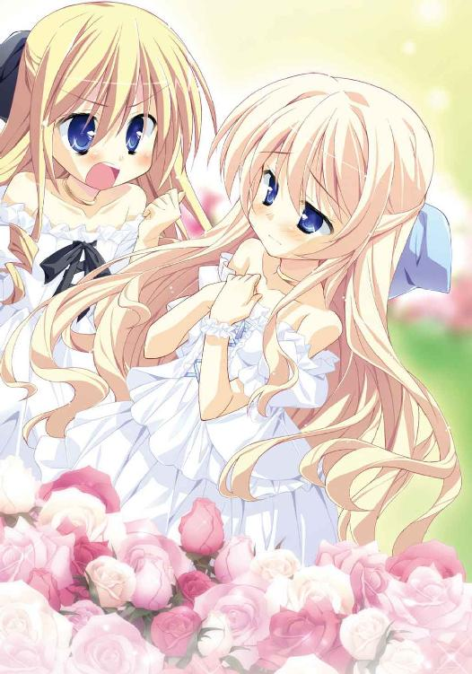
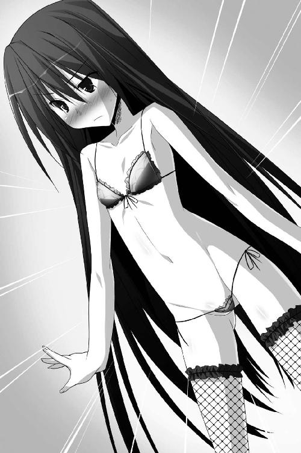

| Ｈ＋Ｐ6 －ひめぱら－ (富士見ファンタジア文庫) | |
| 風見 周 & ひなた 睦月 | |
| 富士見書房 (2011) | |


Ｈ＋Ｐ
─ひめぱら─
風見 周

富士見ファンタジア文庫
本作品の全部または一部を無断で複製、転載、配信、送信したり、ホームページ上に転載することを禁止します。また、本作品の内容を無断で改変、改ざん等を行うことも禁止します。
本作品購入時にご承諾いただいた規約により、有償・無償にかかわらず本作品を第三者に譲渡することはできません。
本作品を示すサムネイルなどのイメージ画像は、再ダウンロード時に予告なく変更される場合があります。
本作品は縦書きでレイアウトされています。
また、ご覧になるリーディングシステムにより、表示の差が認められることがあります。
口絵・本文イラスト ひなた睦月
プロローグ
カルタギア帝国。後宮。大浴場。
黒大理石で作られた広大な浴室に、二つの声が木霊していた。
一つは神来恭太郎の声である。高くも低くもない。高校二年生の平均的な声音だ。
残る一つの声は、とても甲高かった。ちょっぴり鼻に掛かった、甘えたような幼さの残る声である。
それもそのはず、もう一つは齢八歳の幼女帝カリギュラのものなのだ。
お世継ぎづくりのために後宮に入れられた少年──王仕さまと巨大帝国の最高権力者。
その二人が後宮のお風呂場でどのような会話を交わしているのか？
敢えて音声のみでお送りするとしたら、以下のようなものになるだろう。
「きょーたろ......。怖いのだ......」
「大丈夫。きみならできるよ。きみはカルタギア帝国の女帝だろう？」
「で、でも......いきなり、ナカはぁ......」
「俺に身を任せるんだ。少しずつでいいから、腰を沈めてごらん？」
「こ、こんな感じか......？ はぅぅ......」
「いいよ。その調子だ。もっと深くまで......できるかい？」
「あぅぅぅっ......。もう、ダメなのだ。これ以上は無理ぃ......」
「頑張るんだ。これはお世継ぎづくりに必要なコトなんだよ？」
「うぅ、わかった、頑張ってみるのだ......。カルタギア帝国の繁栄のために......。でも、怖いから......お願いがあるのだ」
「なんだ？ なんでも聞くよ」
「......わ、妾をギュッとして欲しい......」
「わかった。これでいいかい？」
「うむ。絶対に離してはならぬぞ。もしも離したら貴様を死刑にするからな......あぅぅっ！ きょーたろ、急に動いちゃらめなのだぁっ！ はぅぅんっ！」
「す、すまんっ。平気か!?」
「カラダがすごく熱いのだ......」
「最初は慣れないかもしれないけど、すぐに気持ちよくなるからね？」
「きょーたろは気持ちいいのか？」
「ああ。とっても気持ちがいいよ。最高だ」
「わ、妾も......妾もなんだか......気持ちよくなってきたのだ...... はふぅぅ」
はふぅぅ」
二人とも全裸だ。しかも、女帝の幼いカラダには、白濁した液体が飛んでいる。
瞳は潤み、カリギュラの頰は上気していた。
まさに『完全に入ってる！』としか言いようのない状況であろう。
こんな会話を聞けば、ユフィナなら怒り狂うに違いない。
『このドヘンタイ！ 許さないわよ！』と叫んで、攻撃魔法をぶっ放してくるだろう。
もしも姉の桜子が、この会話を聞いたなら恭太郎の命はない。
『恭太郎ッ！ 幼子に手を出すとは許せません！ そんなふしだらな男に育てた覚えはありませんよ！ かくなる上は、あなたを殺して私も死にます！』なぁんて絶叫し、伝家の宝刀で斬りかかってくるのは明白だ。
だが、恭太郎は声を大にして主張したい。
全ては恭太郎なりの正義に従った行動なのだ。お天道様に顔向けできないようなコトは、天地神明に誓ってやっていない。
彼の言葉が真実であるのか否か。
それを知るためには、恭太郎がカルタギア帝国に奪取されてしまった直後まで、時間を遡る必要があるだろう──。
第一章 カルタギア帝国は○○の帝国！
カリギュラ・フィンランディア・カルタギア。
その名を聞けば、近隣諸国の施政者は誰もが震え上がる。
カリギュラは、強大な軍事力を持つカルタギア帝国の女帝なのだ。
およそ人の情らしきものをもたない残酷で、なおかつ貪欲な独裁者だと噂されている。彼女が即位して一年も経たないうちに、既に九つの国が歴史から消えたのだ。小国の施政者たちが恐怖するのも当然である。
畏怖の念を抱いているのは、他国の人間に限らない。
カリギュラに仕える者たちもみな、女帝を恐れていた。
カルタギア帝国の首都、バスティアに建つ《黒炎城》。
最上階にある帝王の居室《黒蓮の座》で、女兵士が奏上していた。
「......ご、ご報告致します。支配下にあるドランドン王国で大規模な反乱が発生致しました!!」
鍛え上げられた女騎士だ。鎧を着けていても、筋肉が発達しているのがわかる。筋トレではなく、実戦によって研ぎ澄まされた無駄のない肉体だ。
幼い頃から剣士として修行を続けてきた神来恭太郎には、彼女がかなりの腕前を持つ剣の使い手であると見抜くことができた。
だが、そんな屈強そうな騎士の足がガクガクと震えている。
恭太郎は体育館ほどの広さがある《黒蓮の座》の片隅にいた。女騎士との距離は優に二〇メートルは離れているにもかかわらず、一目でわかってしまうほどの怯えようだ。
遥か高みにある、蓮の花を模した黒い玉座。
ベールの向こうにうっすらと見える人影はなにも答えない。
騎士は怯えながらも、報告を続ける。
「私めの指揮しております南方属国に駐留中の治安維持部隊五〇〇騎にて鎮圧に向かいましたが......敗北しました！ なおも反乱は継続中です！ 申し訳ございません！」
床に額をこすりつけ、騎士は許しを請う。
「新たに討伐隊として飛竜騎士団、魔術士団合わせて二〇〇〇騎を組織いたしました！ なにとぞ、私めに挽回の機会をお与えください！」
ベールの向こう側から、背筋の冷たくなるような声が響いてくる。
「......反乱の首謀者は？」
「ドランドン王国の元王女セルヴィらです！ 元王女は自らを《救世主》と称し、反乱軍を率いております！」
「フン、王族の残党か。母上がドランドン王国を攻めたときも手こずらせたそうだが......妾にもなおも楯突くとは。断じて許せぬ」
自らを責められたかのように、女騎士はさらに縮こまる。可哀想なくらいに肩が震えていた。
「妾は無能な者が嫌いだ。失敗したなどという報告は聞きたくもない」
「申し訳ございません！ お許しください、カリギュラさま！」
「......だが、貴様に、もう一度だけ機会をくれてやろう。妾は機嫌がよい」
「あ......ありがたき幸せにございますッ！」
「ただし、同じ失敗は許さぬぞ。もしも、再び敗北するようなことがあれば、貴様は二度と日の目が見られなくなるであろう」
恐怖に震えながら、女騎士は再び床に額をこすりつける。
「必ずや反乱軍を鎮圧してご覧にいれます！」
「妾に逆らう者は許しておけぬ。反乱に荷担した首謀者どもを根絶やしにして参れ。ただし、無辜の民草に手を出すでないぞ。反乱に乗じた掠奪の類は厳しく取り締まるのだ」
「はッ！ この命に替えましても!!」
「......ゆくがよい」
女騎士は深々と礼をして去っていく。
黒蓮の座にいるのは、恭太郎だけとなった。
大帝国の女帝がすぐ近くにいるのだから、どこかに警護の兵士や侍従が控えているのは間違いない。
だが、人気をまったく感じなかった。忍者のように気配を消しているのだろうか？
代わりに周囲に満ちているのは、凄まじい緊張感だ。
トレクワーズ王国の《女王の間》に漂っている荘厳さとはまた違う、峻厳な空気が漂っている。四方八方から鋭い刃を突きつけられていて、少しでも間違ったことをすれば切り裂かれてしまいような──そんな雰囲気。
と、ベールの向こう側から声が降ってきた。
「......待たせたな、きょーたろ。火急の用件だというので、そちらを優先させた。妾の前へ参れ」
先ほどまで女騎士が跪いていた位置へと歩いていく。一歩近づくごとに重圧が増していく。大観衆が見守る中、ギロチンへと歩いていくみたいな気分だ。
（今、俺を見てるのは、女帝しかいないんだけどな......）
一〇メートルほど上の位置。階段状に高くなっている場所に、黒い蓮を象った玉座がある。黒いベールで覆われているため姿は見えないけれど、そこにカリギュラが座っているんだ。
《黒蓮の座》の中央まで歩み出た恭太郎は、玉座に向かって立った。
「不遜だぞ。跪かぬか」
「............。お断りだ」
「もう一度だけ言うぞ。膝を折るのだ。妾の前では頭を垂れよ」
恭太郎はカルタギア帝国によって拉致されてしまった。
生殺与奪権を握られているのも同じだ。だが、それでもキッパリと言い切る。
「嫌だって言ってるだろ。敵に膝を屈することはできない」
──忠臣は二君につかえず。
一度でも主君と定めたら、絶対に裏切らない。どんな状況になろうとも一人の主君を支え続ける。それこそが真の忠義者である。そういう意味合いの言葉だ。
恭太郎は神来流という由緒ある剣術を継承する家の長男として生まれた。実姉の桜子によって、武家の嫡男に相応しい男になるべく厳格に教育された。
それゆえ、彼は自他共に認める《サムライ少年》となったのだ。
神来流剣術は、敵を斬り伏せるためではなく、主君を守るために生まれた剣と聞かされている。大切な人を守るために戦って死ねるなら本望だと本気で思っていた。
恭太郎はトレクワーズ王国に仕えてはいない。女王さまに忠誠を誓ったワケでもない。
だが、ユフィナたちの窮状を知って、彼女たちの助けになろうと決めたのだ。もちろん、お世継ぎづくり以外の方法で。
男が一度決めたのなら、その気持ちを貫き通したかった。
「きょーたろ。貴様は重大な勘違いをしているぞ」
「......勘違い？」
「貴様の意思など聞いてはおらぬ」
威厳を感じさせる強い口調で、カリギュラは言い切る。
「きょーたろは妾の所有物となった。妾に従うほかないのだ」
「悪いが、俺は物じゃないんだ。心まで自由にはならないぜ」
見下したような態度で女帝は嗤った。
「フン、この世界において、男というのは魔法も使えぬ劣った存在。物と同じなのだ。自由意思などありはせぬ。使えぬならば、壊して捨てるまでだ」
声だけなのに凄まじい威圧感だ。女騎士が震えていたのも無理はない。カリギュラに恫喝されれば、ウィッチェリア大陸に住まうものなら誰もが震え上がるだろう。
「特に、この黒炎城の中で生きていきたければ......妾に従うことだ。妾の機嫌を損ねれば、トカゲやヒキガエルとして余生を過ごすこととなるぞ？」
だが、それでも恭太郎は玉座の方を睨みつけた。
「やれよ。信念を曲げるぐらいなら、カエルになった方がマシだ」
「下郎め......」
ベールの向こう側からほっそりとした指先だけが差し出される。
ヴォン──空気の揺らぐような音がして、カリギュラの指先から黒い光が迸った。
直後、恭太郎の肩に猛烈な重みが掛かる。
「ぐ、お......!?」
あまりの重さに立っていられなかった。
巨人に踏みつけられたかのように、強制的に床に這い蹲る羽目に陥る。
必死に両手を突っ張って、顔を持ち上げるのが精一杯だ。
「フフフ、そうだ。それでよいのだ......」
ベールの向こう側から、微かな笑い声が聞こえてくる。
「無理矢理に従わせてるだけじゃないか......」
「だからどうした？ 飼い犬はそうやって躾けるものだ。もっと痛い目に遭わせてやってもよいのだぞ？」
黒いベールがゆっくりと左右に開いた。
向こう側から、カリギュラが姿を現す。
「貴様を妾の前に呼んだのは他でもない。宣言をするためなのだ」
カルタギア帝国の女帝は恭太郎を指さし、高らかに言い放った。
「本日より、本格的に世継ぎづくりをはじめようと思う！ 貴様は次代の女帝の父となり、カルタギア帝国の大陸制覇の礎を築くのだ！ 覚悟せよ、きょーたろ！」
「そんなことはできないって！」
「まだ、妾に逆らうか！」
「逆らうとか、そーゆーコトじゃなくてさ......！」
床に這い蹲ったまま、恭太郎はカリギュラの姿を見上げた。
床に届くほどの長い黒髪。黒い瞳。意志の強そうなきりりとした眉。ぷっくりした頰。頭にちょこんと載っている王冠。身長一一五センチのチビっこい身体を包んでいるのは、無数のフリルに彩られた漆黒のドレス。腕には黒いトビカピバラのぬいぐるみを抱いている。
擬音で表すなら──ちょいーん。もしくは、ちょこーん。
《残忍》《苛烈》《冷血》《悪逆》《傲慢》《非道》《凶悪》《強欲》《暴虐》......。
さまざまな恐ろしい言葉と共に語られている女帝──カリギュラ・フィンランディア・カルタギアは八歳の女の子なのだ！
ここが現代日本なら、小学二年生。子どもなんてつくれるワケがない！ 生物学的に考えて不可能だ！
「きみには無理なんだよ！ お世継ぎづくりなんて、一〇年早いんだって！」
恭太郎がそう叫んだ瞬間、女帝が恐ろしい眼差しで睨み付けてきた。
チビっこには似つかわしくない、凄まじい威圧感と覇気に満ちた視線だ。
「なにを言うか、愚か者め。カルタギアの女帝たる妾に不可能などないのだっ」
「え～っと、きみの名前はカリギュラちゃんだっけ？」
「無礼者！ カリギュラちゃんとは何事だ！ カリギュラさまと呼べ！」
年下をさま付けで呼ぶのは抵抗があるな......。でも、今は言い争っても埒があかない。
「カリギュラ...さま。あのさ、きみが女帝だろうとなんだろうと、無理なものは無理なんだよ。子どもにはお世継ぎなんてつくれないんだ」
「フン、後宮の教育係も妾に同じコトを言ったが......その後、恐ろしい末路を辿った。貴様もそうなりたいようだな」
「後学のために聞きたいんだが......教育係はどうなったんだ？」
死刑に処されたのか？ はたまた、姿を子ぶたかなにかに変えられたのか？
「妾が考案した《恐怖の一〇八罰》の一つ《ミニスカ》の刑に処してやった。妾の魔法により、どんな服に着替えても超ミニスカートに変化してしまうようになったのだ」
「ず、ズボンでも......？」
「うむ。ズボンだろうと、全身鎧だろうと、身に着けた瞬間に膝上四〇センチのミニスカートと化してしまうのだ。そのまま後宮を追放してくれたわ」
膝上四〇センチって......常に下着が見えまくりじゃないか！
「アハハハハ！ 何人たりとも、妾に逆らうことなどできぬ！」
錫杖を突きつけ、八歳の幼女帝は恭太郎に命令する。
「さあ、きょーたろ！ 妾と世継ぎをつくるのだ──っ!!」
突っ伏したまま、恭太郎は首を横に振る。
「だから、そんなことはできないんだって！ 勘弁してくれよ！」
世継ぎをつくるってコトは、すなわち《えっちをする》って意味だ。
もしも、八歳のカリギュラに手を出さなきゃいけなくなったら......うわあ、ダメだ！ 倫理的にマズすぎる！ 人間失格だ！
一三歳のメルルちゃんに迫られてドキドキしてしまうコトだって人としてどうかと思うのに、八歳の幼女にうっかり欲情してしまうような事態となれば、逮捕を通り越して即死刑だよ！ その場で切腹せざるを得ない！
「頼む、俺をトレクワーズに帰してくれ！」
カリギュラは心底ムカついたように、眉をつり上がらせた。
「きょーたろはまだトレクワーズ王国に未練があるようだな。貴様は妾の所有物となったのに、その自覚が足らぬようだ......」
恭太郎に突きつけていた錫杖を、天に向かって掲げた。
「妾に従いたくなる気分にさせてくれよう。貴様を《恐怖の一〇八罰》の一つ《魔女っ娘》の刑に処すのだ──っ！」
錫杖の先端から黒い光が放たれた。
「魔女っ娘って......うわああああっ!?」
黒光を受けた瞬間、稲妻に打たれたようなショックが全身を駆け抜けた。
「元に戻して欲しくば、妾に従うと誓うのだ。誓わねば永久にそのままだぞ！ アハハハ！ アーハハハハッ！」
元に戻して欲しくば？ どういう意味だ？
高笑いをするカリギュラの視線は、恭太郎の服へと注がれている。
恭太郎は自らのカラダを見下ろして、
「ぎゃああああああああああああああああああああああああああああっっっ」
大地を揺るがすほどの絶叫をあげてしまうのだった。
×××
黒、黒、黒、黒、黒──。
カルタギア帝国の後宮は、なにもかもが黒色で統一されていた。
大理石でできた床、壁、柱。天蓋の付いたベッド、シーツやソファ、花瓶やそこに生けられた花でさえも。見渡す限り全てのものに黒が使われている。
あらゆるものが黒に染まったこの部屋で、黒くないものと言えば──テーブルの上に載った食事ぐらいのものだろう。
ライ麦のパンや香辛料を効かせたソーセージ、コーンのスープ、マッシュポテトなどなど。トレクワーズで響されていたものと比べれば、幾分質素ではあるが、立ち上る温かな湯気や部屋に漂う香りは、実に食欲をそそるものだった。
「............くっ」
部屋の中央で座禅を組んでいる恭太郎の顔がわずかにしかめられる。
スパイシーなソーセージの匂いが鼻をくすぐり、口にツバが湧いた。
正直を言えば空腹だ。気を抜けばハラが鳴ってしまいそうである。
《黒蓮の座》でのやり取りから、さらに二日が経過していたが、その間一切の食事を口にしていないのだ。一滴の水すら飲んでいなかった。空腹ために微かな目眩を覚える。
しかし、恭太郎は食事に手をつけようとはしなかった。
まぶたを閉じ、ただ静かに座禅を組む。雑念を払い、精神を集中した。
彼が断食をしている理由はただ一つ。
カルタギア帝国に、反抗の意思を示すためだ。
脅しに屈して相手に従ったとあっては、神来家の名が廃る。
どんなにひどい魔法を掛けられようとも、女帝に従うワケにはいかないのだ。
そう、どんなにひどい魔法を掛けられようとも──
恭太郎は、そ～っと目を開いた。
黒大理石のツルツルした壁に、自分の姿が映ってる。
自他共に認める《サムライ少年》である神来恭太郎は──
可愛らしい《魔女っ娘》と化していた。
パステルカラーの派手な衣装。白い手袋＆白いタイツ。髪はピンク色のツインテール。手にはハート形のステッキ。小さなリボンで飾られたミニスカートは、パニエでふんわりと膨らんでいる。
ご丁寧に、肩の上にはトビカピバラのマスコットまで乗っかっていた。残念ながらただのぬいぐるみだから動かないが......もしもこれが《マジカル☆タロ子ちゃん》なんてアニメだったら、このトビカピバラが恭太郎を魔法の世界に連れてってくれるキッカケになるんだ。魔女っ娘アニメにはつきものだよな。
我ながら結構似合ってる。女装は二度目だが、意外と素質があるのかもしれない。隠れた才能ってヤツだな、あはははは、誰か俺を殺してくれ。
今すぐに着替えたい。両手で引き裂いてワイルドに脱ぎ捨てたい。全裸の方がマシだ。
と・こ・ろ・が。
どんなに頑張っても、魔女っ娘衣装は脱ぐことはできないのだ。脱ぎ捨てても、一〇分もしないうちにいつの間にか服が元に戻ってしまうのである。トイレやシャワーに入る場合は、その短い合間に済まさねばならない。
「これが《魔女っ娘》の刑か......。なんて恐ろしいんだ......」
今すぐにでも魔法を解いてもらいたかった。
だが、それは女帝に屈するのと同義だ。カリギュラの命令に従うワケにもいかない。
とまあ、そんなこんなで。
恭太郎は自らの武士道を貫くために、断食を敢行しているという次第である。
どのくらいの時間、瞑想をしていただろう。
「......無駄なことをしていますね」
いつの間に部屋に入ってきたのか。銀髪の美女が恭太郎を冷たい眼差しで見つめていた。
カルタギア軍が誇る四将軍の一人──アスピア・バリファックスだ。
なにもかもが黒っぽいカルタギアにしては珍しく、アスピアは白を基調とした軍服を身に纏っていた。白いマントは、光の加減によって青みがかって見える。北極の氷のような冷たい色だ。
薄い唇の端を曲げるようにして、アスピアは酷薄な笑みを浮かべる。
「ハンガーストライキなど意味がありません。あなたが倒れても魔法によって治癒させます。自害することなどできません。苦しむだけ損ですよ」
「おまえたちに従うつもりなどない。そう主張できるだけでも意味があるだろう？......というか、あんたは笑わないんだな」
「なにがです？」
「俺のこの姿を見た女官は、笑いを堪えるんだ」
さきほど食事を配膳してくれた後宮付きの女官も、今にも噴き出しそうだった。笑いを堪えるために、制服の上からふとももをつねっていたほどだ。いっそ指さして笑ってくれた方がありがたい。
「私はめったに笑いません。笑い方など忘れてしまいました」
事務的な口調でアスピア将軍は続ける。
「カリギュラさまは、お世継ぎづくりをご所望です」
「あのさ、そもそも年齢的に無理だろ......。あのコは八歳じゃないか」
「？？？」
そこで、アスピアの表情がようやく動いた。微かに眉を顰めたのだ。
「意味がよくわかりませんね。カリギュラさまが望むのであれば、私は従うまでです。陛下が『最強の魔力を持つ王仕さまが欲しい』と仰った。だから私は、全力を尽くして手に入れた──それだけのこと」
ロボットのような淡々とした口調で、アスピアは続ける。まるで自分の意思がないかのような話し方だ。
「残念ながら、私はお世継ぎづくりについては疎いですが......『魔力の強いお世継ぎをつくるには、男女の心が通じ合う必要がある』と聞いたことがあります」
トレクワーズの後宮に入れられた直後に、ピコル師匠に同じ説明をされたことがあった。
男女が愛し合った末に生まれる『愛の結晶』こそが、最大の魔力を受け継ぐのだそうだ。
この法則があるためトレクワーズの後宮にいた頃は、恭太郎を誘惑してソノ気にさせようと、お姫さまたちによるあの手この手のえっちな作戦が決行されたのである。
まあ、そのおかげで、恭太郎の意志を無視した強制的なえっち──いわゆる《逆レ○○》状態でお世継ぎづくりを迫られずに済んでいるので、ある意味ありがたいルールだとも言えた。
「神来恭太郎。あなたにはカリギュラさまと心を通わせて頂かねばなりません。あなた自身が納得した上で、ね......。いつまでも協力を拒まれては困るのです」
「納得なんてするわけがないだろう？」
「もちろん、捕虜として連れてこられたあなたが、すぐに協力的になってくれるとは思っていません。タダでとは申しませんよ」
「......バカにするな。俺が金銭で動くような男だとでも思うのか？」
アスピアは無言のまま恭太郎の方へと手を向けた。
手のひらには、クリスタルのかけらのようなものが載っている。
「これは我が国のスパイが撮影してきた映像です」
クリスタルの表面が水面のように揺らめき、淡い光が発せられる。泉から女神が現れるように、光の中にノイズ混じりの映像が映し出された。
投影されたのは──花園だ。
見覚えがあるぞ。これは......トレクワーズ王国の《大庭園》にある温室だな。
手入れをされたバラの花が映ってる。レイシアが愛情を込めて育てているおかげか、花々は見事に咲き誇っていた。
花園の中心に、小柄な女の子が悲しげな表情で立っている。ふんわりと長い髪の美少女だ。
年の頃は一〇歳ぐらいだろうか。トレクワーズ王国の第五王女であるメルルちゃんよりも幼く見えた。
『せっかくお花がきれいに咲いたのに......恭太郎さまにお見せすることができないんですね......』
このコは誰なんだ？
すると、豪奢な縦ロールの少女が大またで近づいてきた。悲しそうな顔の少女と同じぐらいの幼さだ。
『お花の手入れなんてしている場合ではないですわっ！ 恭太郎が奪われましたのよ!? カルタギア帝国に攻め込んででも取り返すべきですわよっ！』
ふんわりとした髪の少女が、ゆっくりと首を横に振る。
『私たち王女は守護母神ティアドラさまに不殺を誓っています。戦争なんてできません』
『情けないですわねっ！ 恭太郎が奪われたままで平気なんですのっ!? 私は絶対に許せませんわッ！』
『私だって......私だって嫌です！』
『だったら、取り返すべきでしょう!? 違うの、レイシア！』
縦ロールの少女が悔しそうに唇を嚙んで地団駄を踏む。
「......って、レイシアだって!?」
じゃあ、この怒鳴ってる女の子は......ひょっとしてエリスなのか!?
でも、どうして二人は子どもになってるんだ!?
映像の続きを見た恭太郎は、さらに驚愕してしまった。
『レイシア、エリス......こんなところにいたのね。女王陛下が呼んでらっしゃるわ』
双子姫に声を掛けたのは、燃えるように赤い髪をポニーテイルにしている少女。
「まさか、ユフィナまで......!?」
幼くなっているけれど、間違いない。あれはユフィナだ！
そこで、映像が途切れた。
「今のはなんだ!?」
アスピアは答えない。焦らすようにゆっくりとクリスタルをしまう。
「答えろッ！ ユフィナたちは無事だと言ったのはウソだったのか!?」
「......無事ですよ。それがガイルーンとの約束ですからね。命に別状はありません」
「命に別状はないって......子どもになっちゃってるじゃないか！」
「こんなこともあろうかと、あなたを奪取する際、陛下に魔法を使っていただいたのです」
カリギュラの魔法を受けたせいで、子どもに変化させられたのか!?
「目的はなんだ？ なぜそんなことをした！」
「取引をしましょう」
銀髪の将軍は、錠剤の入った小瓶を取り出した。
「カリギュラさまに《解呪》の魔法をこめていただきました。この秘薬を飲めばトレクワーズの姫たちに掛けられた魔法が解けます」
「......信用できないな」
アスピアは恭太郎を誘拐する作戦を立てた張本人。
ウソの和平条約をちらつかせ、ユフィナたちを《大結界》の外へとおびき出した。そんなヤツを信じろって方が無理だ。
「本物ですよ」
小瓶の中から、アスピアは一錠だけ取り出した。
黒いビー玉のような不気味なクスリだ。うっすらと紫色がかった光を放っている。
「信じられないなら、ご自身で飲んでみてください。あなたに掛けられた魔法も解けることでしょう」
......本当か？ 信じていいのか？
「あと五錠あります。これさえあれば、ユフィナたちは元に戻れるのです」
アスピアは恭太郎の方に向けて、小瓶を振ってみせる。錠剤が瓶に当たって、鈴のような涼やかな音が響いた。
「もし、これを海にでも流してしまったら、王女たちは永遠に子どものままかもしれませんよ......？」
「......くっ」
恭太郎は唇を嚙んだ。
さらに追い込みをかけるように、アスピアは続ける。
「なお、脱走は考えない方が懸命です。《黒炎城》は厳重な警備がなされています。アリの一匹すらも這い出す隙間はありません」
「だ、だったら、魔法を使って逃げ出してやる。俺は魔法が使えるんだ！」
女性しか魔法を使えないウィッチェリア大陸にありながら、恭太郎は魔法を使うことができた。右手に凄まじい破壊力を持つ《光の剣》を出現させることができるのだ。
（......うまく使いこなせないんだけどな）
自分の意志では《光の剣》を出すことすらできない。何度も練習したのだけれど、恭太郎の右手はウンともスンとも言わないのだ。ピンチの時しか発揮されないのである。
でも、『魔法が使える』と言っておけば、お世継ぎづくりを少しでも躊躇ってくれるのではないかと思った。
恭太郎の脅し文句も想定内だったようだ。
「あなたが魔法を使いこなせないことはわかっています」
「......うっ」
「しかし、万が一にも魔法を使われて、陛下が傷つくようなことがあっては困りますからね。封印することにしましょう」
突然、アスピアがこちらへと歩み寄ってきた。
避けるヒマもなく、右の手首に触れられてしまう。
恭太郎の腕に触れた直後──ガチッ！
手錠を掛けたような音が響き渡った。
手首に黒いブレスレットのようなものが着けられている。
「なにするんだよ!? あ、あれ!? 外せないぞ、これ！」
「《アンチマジック・ロック》と言います。我が軍の技官に作らせました。もしも魔法を使おうとすれば、そのブレスレットが感知します。瞬時に棘が突き出し、あなたの身体に毒を注入するのです」
黒い石で作られたブレスレットが、恭太郎の右手首で不気味に光っている。
「......魔法を使ったら死ぬということか？」
「いいえ。死に至る毒物ではありません。あなたを殺すのは大いなる損失ですからね。しかし、全身に激痛が走り、身動きができなくなることでしょう。つまり、魔法を使っての脱走も不可能ということですよ」
脱走は不可能。反抗もできない。
お世継ぎづくりを拒否しようとすれば、子どもにされてしまったユフィナたちが元に戻れなくなる......。
「ちくしょう......」
完全に外堀は埋まってるってワケか。なんて用意周到なんだ。
恭太郎の心を読んだかのように、アスピアが口を開いた。
「作戦の成功のためならば、私はどのような労も惜しみません」
アスピアは踵を返した。白いマントが美しく翻る。
背中を向けたまま《氷の策士》と呼ばれる将軍が口を開いた。
「夜まで待ってあげましょう。陛下とお世継ぎづくりをすることを誓いなさい」
アスピアが部屋を出て行く。
閉じられたドアを、恭太郎はしばらく眺めていた。
座禅を組んでいた足を解き、すっかり冷め切った料理の載るテーブルへと近づく。
そこには、アスピアが残していった錠剤が一粒残されていた。
躊躇った末に、錠剤を口に放り込んだ。水差しの水で一気に飲み下す。
変化はすぐに現れた。
魔女っ娘のコスチュームが元に戻ったのだ。
後宮に来てすぐに与えられた服装──美しいドレープのついた黒色のドレスシャツ＆不思議な光沢の黒いスラックスに変化する。マジカルステッキも、肩に乗っかってたカピバラのマスコットキャラも消え失せた。
「クスリは本物か......」
恭太郎は再び部屋の中央に戻った。大理石張りの床の上で座禅を組む。
今度は断食をするためではない。沈思黙考するためだ。
俺はいったい、どうすればいいんだ？ 誰か教えてくれよ......。
×××
そして、その日の夜。
恭太郎は迷った末に、女官を通じてアスピアに返事をした。
カリギュラの命令に従う、と──。
×××
トレクワーズ王国とカルタギア帝国。
この二つの国には、さまざまな違いがある。
なにより大きな違いは国土面積だろう。
トレクワーズがウィッチェリア大陸の片隅にある小国に過ぎないのに対し、カルタギア帝国の国土は大陸の半分余りを占めているのだ。
国土に比例するように、カルタギア帝国の方が国力も圧倒的に強大である。
特に、軍事力は比較にならない。
軍事大国たるカルタギア帝国の総兵員数は一〇万以上。それほどの大軍勢がいつでも出撃できる状態で配備されているのだ。
一方のトレクワーズ王国は、軍隊を一切有していない。有事の際にはお姫さまが自ら巨大武器を手に国を守るのだ。王国を守護するバリアのような《大結界》がなければ、数日ともたずに滅ぼされていただろう。
また、両国の季候にも大きな差異がある。
トレクワーズの首都トレクロは年間を通じて比較的温暖であるのに対し、カルタギア帝国の首都であるバスティアは一年の半分ほどが冷たい冬に閉ざされるのだ。
そんな大きな季候が影響しているのか、国民の気質にも差異があった。
トレクワーズ王国の国民は、明るくおおらかで楽天的。歌や踊りを愛する民族だと言われている。《大結界》のおかげで平和が保たれているため、美術や音楽などの文化が大いに発展したのだ。最近ではトレクワーズで作られたアニメ《禁呪詠唱☆ガイルーン》は他国でも大人気である。
カルタギア帝国の気風は、一言でいうなら質実剛健だ。
真面目で勤勉。華美な装飾を嫌い、無駄のないシンプルなものを好む。『カルタギアで作られた刃物は切れ味もよく長持ちする』であるとか、『カルタギア製の魔法時計は絶対に狂わない』と言った数々の評判は、帝国民の民族性をも評しているであろう。
トレクワーズ王国とカルタギア帝国では、後宮のようすにも大きな違いがあった。
トレクワーズの後宮には、どんなに特殊な性癖を持つお姫さまがいようとも対応が可能な各種プレイルームが完備されている。
楽しんでお世継ぎづくりができるような環境が作られているのだ（トレクワーズの国民性というよりも、後宮を管理するピコルの趣味によるところも大きいのだが......）。
一方、カルタギアの後宮には特殊なプレイルームなどは存在しない。
後宮にある施設は王仕さまの居室、大浴場、食堂ぐらいのものだ。
ベッドが大きく豪華な点を除けば、兵士の宿舎のようでもある。プレイルームがない代わりに、至る所に女帝を警護する兵士の詰め所が用意されているのも大きな特徴だろう。
そんな、さまざまな違いのある両国であるが。
恭太郎はカルタギア帝国の持つ、さらなる特徴に気付いてしまうこととなる──。
翌日の夜のこと。
「よく聞け、神来恭太郎......！」
黒いマントを纏った黒髪の美女──キスト・カラサイシュが恭太郎の部屋に乗り込んできた。
ベッドに座っていた恭太郎ののど元に切っ先を突きつけ、鋭い声で言い放つ。
「私は、おまえが嫌いだ。おまえには幾度となく煮え湯を飲まされたからな」
キストはカルタギア帝国が誇る四将軍の一人だ。
恐竜を召喚する魔法で敵を蹂躙するのを得意としており、《兇竜将軍》の二つ名で呼ばれている。彼女が兵を率いているというだけで、無条件降伏してしまう国も多いだろう。
しかも、キスト将軍はクールな美女であった。
黒いマントでカラダを包むようにして隠しているため、スタイルは窺い知れない。だが、マントの下から見えるすらりと長い脚や整った顔立ちは、モデルのそれを思わせた。
そんな美女将軍に剣を突きつけられ、烈火の如く睨まれるのは、かなりの迫力だ。
「おまえの使う理不尽な威力を持つ魔法で、幾度も私の作戦を邪魔された。おかげで女帝陛下の信頼を裏切る結果となってしまったのだ......」
突然のことに驚きながらも、恭太郎は言い返す。
「それは俺のセリフだよ。あんたには俺もひどい目に遭った」
キストはトレクワーズの王宮に単身潜入して、女王を暗殺しようとしたこともある。女王さまにナイフを突き立てる光景は、忘れたくとも忘れることができない。
サーベルの切っ先は頸動脈にぴたりと当てられている。少し力を込めれば、恭太郎の命はおしまいだ。
だが、真っ直ぐに敵将を睨み返す。敵の刃に簡単に怯むようでは剣士失格だ。
「俺のことが嫌いだから......殺しに来たのか？」
「いや、違う」
恭太郎に刃を押し当てたまま、キストは吐き捨てた。
「神来恭太郎、おまえと子づくりに来たんだ」
「.........................................................................................................はい？」
「おまえと子づくりに来たんだっ！」
キストのほっぺが、ぼゎっと赤くなる。サーベルを持つ手が、プルプル震えていた。
大きく息を吸って、吐いて。気持ちを落ち着けながら、諭すように口を開く。
「えーっと......会話っていうのはさ、俺はキャッチボールだと思うんだ。相手の発言を受けて、それに見合った言葉を返す。それがコミュニケーションってものだろ」
「そうだな。その通りだ。戦場でも部下との綿密な意思疎通が作戦の成否をわける」
「で、俺のことは嫌いって言ったよな？」
「ああ、大嫌いだ。今すぐにでも斬って捨てたいと思う」
「それを踏まえた上で、もう一度聞かせてくれ。......なにしに来たって？」
「子づくりをしに来た」
「『子づくり』ってのは、カルタギア帝国の言葉で『暗殺する』って意味だったりするのか!?」
「『子づくり』というのは、つまり、私と、その......」
ぼゎゎゎゎゎゎゎゎゎっ！──キスト将軍の顔がさらに赤くなる。
「せっ....................................................................................くすをするという意味だ」
「な、なんだって？ よく聞こえなかった」
「だから、その......せっ...くゴニョゴニョゴニョ」
「すまん。また聞こえなかった。ハッキリ言ってくれないか？」
「な、何度も聞き返すなっ！ 今からおまえは、私とえっちをするんだっ！」
「意味がわから～～～～んっ!!」
ベッドに突っ伏して正拳突きを連打したい気分に駆られる。切っ先を突きつけられてるからできないけど！
「なんで嫌いな俺と、そんなことしなきゃいけないんだよ!?」
「私だってしたくないに決まってる。だが、これは女帝陛下のご命令なのだ！」
どうやら、女帝から次のような命令を受けたらしいのだ。
『世継ぎづくりには男が──王仕さまが必要なことはわかっている。だが、具体的になにをどうすればよいのかわからぬのだ。
そこで、四将軍よ。きょーたろの元へゆき、世継ぎづくりを実演してみせい。
妾はそのようすをつぶさに眺め、世継ぎづくりについて学ぼうと思う！』
女帝という地位にありながら知ったかぶりせずに学ぼうとする姿勢は素晴らしいと思う。
でも、頼むからその向学心を別のことに使ってくれよ！
「だから、私は恭太郎の元へやってきたのだ」
「よくわからないんだが、女帝と同じ王仕さまと......その、そーゆーコトをしちゃっていいのか？」
「無論、我らが次代の女帝陛下と同じ魔力を宿す子どもを宿すわけにはいかない。途中まで実演してみせるだけだ」
将軍はサーベルを鞘へ戻した。鞘ごと腰から外し、床に置く。
「......いいか、勘違いするなよ。私はおまえのことが嫌いだ。陛下のご命令だから、仕方なくそーゆーコトをするのだ。それを忘れるなッ！」
「嫌だったらするなよ！ 命令だからって、そんなことしちゃダメだって！」
「カリギュラさまのご命令は絶対なのだ。恭太郎、おまえも断ることはできぬのだぞ」
......う、そうだ。俺は、カリギュラの命令に従うって約束しちゃったんだ。
じゃあ、今から俺はキスト将軍と子づくりをしなきゃいけないのか!?
キスト将軍は、ゆっくりと恭太郎の方へと近づいてきた。
ぎょっくん！──思わず、生唾を飲んでしまう恭太郎。
ウィッチェリア大陸に召喚されてからというもの、何度もえっちなハプニングに遭遇している。
でも、実を言えば、年上を相手にした経験は皆無だった。
《トレクワーズの五美姫》は、同い年のユフィナを覗いて、みんな年下なのだ。
例外的に年齢八〇〇歳のピコル師匠に筆おろしをされそうになったこともあるけれど、ルックスが一〇歳ぐらいにしか見えないので、純粋な意味で年長者とは言い難いだろう。
年上のお姉さんに迫られるシチュエーションは、これが初めてなのである。
日本にいた頃、同じクラスの悪友が、こんなコトを言っていた。
『えっちなお姉さんに《イケナイコトを教えて、あ・げ・る》なぁんて誘惑されたら、俺は我を忘れて飛びかかっちゃうぜ！』
（今から、そんな風に迫られちゃうのか？ 俺は我を忘れて飛びかかっちゃうのか!?）
八歳に手を出すのはアウトっぽいけど、キストは二〇歳を越えてるだろう。えっちなコトをしてもセーフかな......？
ブルブルと恭太郎は首を横に振る。
いや、ダメだダメだ！ セーフなワケがないだろう？ 将来を誓い合った相手以外とは、不埒はコトはしちゃダメだって！
慌てふためいている間に、キストが恭太郎の目の前まで来てしまった。
ベッドに座る恭太郎を見下ろす将軍は、顔を朱に染めている。
「私は二六だ。もうオトナなのだ。子づくりぐらいしていてもおかしくない年齢だろう」
「はぁ......」
「だが、私は幼い頃からカルタギア軍で戦い続けてきた。男性経験というものが全くないのだ」
「じゃあ、なんつーか、その、初めてなのか......？」
キストは子どもみたいに小さく頷いた。
「悪いか。男と手を繫いだことすらない。せっ......ゴニョゴニョに関しても、噂で聞いたことがある程度だ」
なんの経験もないのに、女帝の命令とあらば男のベッドルームにやってくるってのは、見上げた忠誠心だけど......。
「初めては、好きな男のためにとっておいた方がいいと思うぞ」
「黙れ。これは陛下のご命令だと言っているだろう？ 断ることなどできない」
真っ赤な顔で、キストは恭太郎を睨み付けてくる。
「私は色恋沙汰について、なんの知識も持っていない。だから、部下に、それとなく尋ねてみたんだ。すると、おまえと裸で抱き合わねばならないとわかった」
グッと拳を握りしめ、キストは力強く言い切る。
「男と裸で抱き合うなんて、とても恥ずかしいことだ！」
「そ、そうだな......」
恭太郎はただ、頷くことしかできない。
「裸を見られることを想像しただけで気絶しそうなほど恥ずかしいのに......抱き合うなんて不可能に近い。そこで、私は一計を案じた」
耳まで赤く染めたキストは、真剣な表情で説明する。
「カサブタを剝がすときは、一気にやってしまった方が痛みが少ない。刃で斬りつけられるときは、なまくらよりも鋭い剣の方が傷の治りが早い」
「確かにそうかもしれないが、なにが言いたいんだ......？」
「つまり、こういうコトだ!!」
キストはカラダを覆っていたマントを、ゆっくりと床に落とす。
将軍のカラダを見て、恭太郎は鼻血を噴くかと思った。
マントの下は──下着姿だったのだ！

しかも、ただのランジェリーじゃない。ちっちゃめの胸を覆っているのは、スケスケなブラジャー。黒いレース地のぱんつは、異様に布地が小さくて、今にも危険な部分が見えてしまいそうだ。フリルで飾られた網タイツも色っぽい。
恥ずかしいとか言ってる割りに、とんでもなく過激な下着だ。
「部下に命じて、バスティアの下着屋で最もえっちな下着を買って来させた！ 中途半端に恥ずかしい格好を見せるぐらいなら、いっそのこと最高にえっちな下着の方が覚悟が決まって羞恥心が減ると考えたのだっ！ いわば、背水の陣だ！」
なんだ、その謎理論は！ 意味がわからない！
「そ......それで、少しは恥ずかしくなくなったのか？」
「もちろん、決まっている！」
唇をワナワナさせながら、キストは絞り出すような声で続ける。
「し、死ぬほど......恥ずかしい......！」
「あたりまえだ！」
両手を太ももの横辺りでギュッと握りしめていた。本当は手でカラダを隠したいのを堪えているんだ。
「恥ずかしいならやめようぜ。無理することはないよ」
「うるさい！ 陛下がご覧になっている！ さっさと子づくりをするぞっ！」
下着姿のキストがベッドの上に乗ってきた。
座ったまま後ずさるけれど、すぐにベッドの端まで追い詰められてしまう。
「あんまり私を見るんじゃないぞ......」
獲物を狙う雌豹のように、キストは四つんばいで恭太郎に迫ってきて。
「ぬおっ!?」
そっと抱きついてきた。キストの胸が恭太郎の顔に押し当てられる。ささやかに見えたけれど、将軍の胸はすごく柔らかい。
ドキドキドキドキ──高まっているキストの鼓動が恭太郎の耳にも聞こえてくる。
「ずるいぞ、恭太郎......」
「な、なんで俺がずるいんだよ」
「オトナの私がこんなにドキドキしているのに、おまえは平然としているなんて......」
「そ、そんなことない。俺だってドキドキしてる」
頭の奥が痺れるような、オトナの女性の甘い匂いに包まれて、視界がクラクラしてる。心臓が痛いくらいに拍動していた。
「神来恭太郎......。おまえはトレクワーズの王仕だった男だ。私よりもえっちな知識を持っている」
キストは、恭太郎から身体を離した。
ゆっくりとベッドに横たわる。黒髪が美しく広がった。
「主導権を渡したくはないが......仕方があるまい。おまえがリードしてくれ」
シーツに横になったまま、軽く両膝を立てる。
布地の少ないぱんつが丸見えとなってしまった。わずかな黒いレースが覆っているだけなので、危険な部分が見えてしまいそうだ。
「うぅ......恥ずかしすぎて......頭がヘンになりそうだ......」
羞恥心のせいか、瞳に涙が溜まってる。首筋の辺りまで赤くなってしまっていた。細い肩が震えるのに合わせ、ささやかな胸もプルプルとプリンみたいに震えてる。
その姿は、猛烈に色っぽかった。
血圧、脈拍共に急上昇。興奮ゲージがレッドゾーンに近づいていく。
「リードしろなんて......そんな......俺には無理だよ......」
首を横に振った恭太郎の脳内では、理性と煩悩が勢力争いを繰り広げていた。
恭太郎の中の天使が声高に叫ぶ。
『妻でもない相手と、こんなコトはしちゃダメだ！ 男らしく突っぱねろ！』
煩悩が、悪魔となって囁いてくる
『どうせ、女帝には逆らえないんだから、この状況を楽しんじゃえよ......！』
両者はほぼ互角。脳内の覇権争いは熾烈を極めていた。
しかしながら──。
「私はカルタギア軍の将軍だ。しかも、もう二六歳。子づくりをするぐらい、どうということはない。でも......」
うるうるした瞳で恭太郎を見つめて、将軍が消え入りそうな声で囁いた。
「は、初めてだから......優しくしてくれ......」
その言葉で、一気に脳内の勢力図が塗り替えられてしまった。煩悩が優勢となり、恭太郎はなにも考えられなくなったのだ。
誘蛾灯に虫が引き寄せられるように、キストに向かって手を伸ばしてしまう。
「ふぁっ......！」
オナカに触れた瞬間、将軍が吐息を漏らした。
将軍の肌は戦場で戦いを繰り広げているとは思えないくらいになめらかだ。指先に吸い付くように、すべすべしてる。
ウェストラインをなぞるように、指をすべらせた。
「くっ......敵だった男に触られるなんて......んっ」
ぴくんっ──キストの肩が微かに震える。
恭太郎がキストの腰に手を這わせたとき、指先になにか固いものが当たった。
ぱんつの腰骨の辺りに、マッチ箱ぐらいの大きさの四角い物体がくっついていたのだ。プラスチックみたいな軽い材質でできており、表面が虹色に輝いている。
何気なく箱の表面を指で撫でた途端に── ......。
......。
鈍い振動音が響いた。ケータイのマナーモードみたいな音だ。
「あっ んあっ だめっ」
びくんびくんとカラダを震わせながら、キストは股の辺りを手で押さえる。
気が遠くなり掛けていた恭太郎は、そこで我に返った。
「なにやってるんだよ、俺は!?......というか、なにが起こったんだ!?」
「わ、わからないっ！ 下着の中の......急に動き出してっ ああんっ」
「下着の中になにか入ってるのかよ!?」
おしっこを我慢してるみたいに、キストはギュッと両目を閉じ、両脚をモジモジさせる。
「こ、このぱんつは......股の部分に謎のポケットがついていたんだ......んっ 部下が買いに行ったとき......下着店の店主が......気持ちよくなるための......マジックアイテムを入れておくための場所だって......オマケでつけてくれて......んんんっ 必要なものかと思って......装着して......はぅんっ やっ、ダメっ、喋れないっ」
えーっと、うまく喋れないようだけど、断片的な情報から推測してみる。
部下に命じて、えっちな下着を買ってこさせた。
↓
えっちな下着の股布には、謎のポケットがついていた。
↓
そのポケットは『気持ちよくなるためのアイテム』を入れておくためのもの。
↓
下着店の店主が気を利かせて、マジックアイテムをサービスしてくれた。
↓
せっかくなので、キストはそのアイテムをぱんつに装着しておいた。
「......で、俺が触っちゃったのが、そのアイテムを起動するスイッチってワケだな」
言われてみれば、下着のクロッチ部分がほんのりと膨らんでた気がするな。
『』という謎の音は、アイテムが起動してる音に違いない。
「ぱんつに謎のポケットがついてるなんて、初めて聞いたよ......。そんな下着も存在するんだな......」
でも、えっちなアイテムの方はトレクワーズの後宮で見たことがあるぞ。
ピコル師匠がいくつも用意していたんだ。アイテム保管庫の鍵も渡されていたしな。
実際に使うとこんな感じなんだなあ。うむ、実に恐ろしいものだ。
「って、感心してる場合かああああああああああああ～～～～～～っっっ!!」
キストのぱんつにくっついているリモコン（？）をひったくった。
「すまん！ とんでもないものを起動させちゃったよ!!」
「は、早く止めてくれ......ひゃんっ」
「ええ～っと、ええ～っと......これ、どうやって操作するんだ!?」
小さな箱の表面に小さなダイアルのようなものがついている。これを回せばいいのか!?
恭太郎は大急ぎで箱についているダイアルを回した。
そしたら──っ!!
「ら、らめぇっ 振動が強くなったぞ やっ ああんっ」
「うわあああ、逆に回しちゃったのか！」
股間を押さえ、キストはびくびくとカラダを震わせてる。
声を出したくないのか、小さく唇を嚙んでいる。でも、堪えきれないみたいだ。
「こんなことで気持ちよくなってしまうなんてっ......将軍失格だぞっ！ ああんっ」
「す、すぐに止めるからっ！ ちょっと待っててくれ！」
焦っていて、指がうまく動かない。小さな箱を手にオロオロとしてしまう。
そうしている間にも──っ!!
マジックアイテムは、キストを責め立てる。
「くっ、悔しいっ 恭太郎が......敵だった男が見てる前で......こんなっ んっ」
大急ぎで、恭太郎はダイアルを逆に回した。
下着の中で暴れ回っていたマジックアイテムがようやく沈黙したのと。
「にゃあああああああああああああああああああっっっ」
キストが大きくカラダをのけぞらせたのが同時だった。
黒髪の将軍の細身のボディはしっとりと汗ばんでいて、息がすごく荒くなっている。お風呂に入ったみたいに顔が真っ赤だ。薄い唇からはちょっぴりよだれも垂れてしまっていた。
「こ、子づくりをしたのは初めてだが......こんなに激しいものなんだな......」
くてっと脱力して、キストはそのまま気絶してしまう。
「お、俺はなんてコトをしてしまったんだ！」
恭太郎はベッドから飛び降り、フライング土下座を敢行した。
二六歳のオトナとはいえ、嫁入り前の女性なんだ。しかも、男性経験は皆無......。
そんな乙女に対してブルブル震える謎のアイテムを使い、あまつさえ気絶させてしまうなんて──姉上に知られたら、その場で首を刎ねられかねない！
「すみませんでした！ どうか、許してくださいぃぃぃぃぃ!!」
ゴスゴスゴスゴスゴスゴスゴスゴスゴスゴスゴスゴスゴスゴスゴスゴスゴスゴス！
黒大理石張りの床が割れるほどに、恭太郎はヘッドバットをカマし続けるのであった。
×××
「いつまで気絶しているつもりですか？ 早く起きなさい」
アスピア将軍に肩を揺さぶられて、恭太郎はまぶたを開いた。
ここは......どこだ？
ぼやける視界に黒い柱や天蓋付きのベッドが映る。
ここはカルタギアの後宮だ。でも、微妙に恭太郎に与えられた部屋とは配置が違う。どうやら、別の部屋のようだ。
ベッドで横たわって気絶していたらしい。カラダを起こしてみる。頭がクラクラした。
どうして、俺はこんなところで気絶しているんだ......？
混乱している頭で、必死に記憶をたぐり寄せる。
頭突きのしすぎで気絶したのか......？
いや、違う。俺はムージ将軍に呼び出されたんだ──。
ムージ・トラファルガーはカルタギア帝国が誇る四将軍の一人である。
筋骨隆々の女丈夫だ。燃えるように赤い短髪をツンツンと立てており、片目を眼帯で覆っていた。その瞳も炎のような赤だ。
豪腕から繰り出される円月刀の二刀流は、敵の大群をいとも簡単に蹴散らしてしまう。一万の大軍勢をたった一人で粉砕したという逸話も残っていた。《隻眼拳豪》の二つ名を聞いただけで、敵軍が潰走してしまうほどだ。
で。
そんなムージ将軍に、恭太郎は女官を通じて別室に呼び出されたのだ。
南国の街キュアンにある洞窟では、ムージ将軍にボコボコに殴られたことがある。それに、キスト将軍を大変な目に遭わせてしまった直後でもあった。
いろいろな意味で警戒していた恭太郎は、どんな事態にも冷静に対処できるよう気を引き締めていたのだが──
部屋に入ってムージを見た瞬間に、度肝を抜かれてしまった。
「あ、あんまりオレの方を見るんじゃねーぞっ」
男っぽい口調で文句を言ってきた将軍は、とんでもない格好をしていたのだ！
一言で表現するなら《あぶない水着》。
ほとんどＶの字に近いカタチの赤い水着を身に着けていた。
超ハイレグで、おへその下もかなり際どい部分まで見えてしまってる。胸の先端を隠しているのは二本のヒモ。ほんの少し動いただけで関係各所がポロリしてしまいそうである。
筋肉質でナイスバディだから、洋物のセクシーグラビアを見ているようだ。あるいは、アメリカンプロレスのお色気たっぷりな女性レスラー。
こんなとんでもない格好で待ちかまえられたら、落ち着いて対処しろって方が無理だ。
「なんでそんな格好......!? ま、まさかあんたも女帝に命令されたのか!?」
「わかってんじゃねえか。女帝さまが子づくりのお勉強するために、オレも実演しに来たんだよ」
ムージは自分のカラダを見下ろした。恥ずかしそうに頰を指先で搔く。
「オレはさ、カラダを鍛えてるから、すっげームキムキなんだよ。これでも【鉄人顕現】で筋力を下げたんだが......あんまり女っぽいカラダ付きにはならなくて」
「【鉄人顕現】ってなんだ？」
「オレの使う固有魔法だ。筋力をコントロールできるんだよ。普段は増強しかしないけど、筋肉を少しだけなら減らすコトもできるんだぜ。ほら、あんまりムキムキだと引かれるかなと思ってさ」
ムージは鎧を着ていてもわかるほど筋骨隆々だ。でも、言われてみれば、確かにボディラインが微かに丸みを帯びている。腹筋が割れてはいるが、筋肉がゴツゴツしているほどではない。
特に大きな違いがあるのは胸だろう。今まで気付かなかったのだが、ムージはかなりの爆乳だった。ヒモ水着に支えられた胸がプルプルと揺れている。
「この格好も、少しでも興奮してもらうために用意したんだ。オレみたいな男っぽい女じゃ、ドキドキできないかもしれないけどな」
そんな将軍の姿を恭太郎は直視することができなかった。ムージの言葉とは裏腹に、恭太郎は不覚にもドキドキさせられていたのだ。
トレクワーズの王女たちの誰とも違う、ダイナミックなボディ。バイーンと突き出た爆乳には目が釘付けになってしまう。横チチや下チチの作り出す曲線が色っぽくて──って、見ちゃダメだって！
顔を真っ赤に染め、ムージは「くそー、恥ずかしいぜー」なんて呟いている。
「恥ずかしいなら、やめておこう。その方がいいと思うぞ......」
ユフィナたちを人質にとられているも同然なため、強く拒絶することができない。
「やめるワケにはいかねえよ！ 敵前逃亡は嫌いだかんな！ 女は度胸だっ！」
ムージ将軍は、自らの頰を叩いた。
「オレはずっと戦場にいたから、なんの経験もねえ。新兵と同じだ。ひょっとしたらいろいろ間違ってるかもしれねえけど、勘弁してくれよな！ それじゃ、行くぜ！」
止める間もなく、ムージ将軍が突進してきた。胸がぶるんぶるん揺れてる。
「み、水着がズレちゃうって！ 走らないでくれよ!? ぐおっ!?」
タックルをされ、カラダを持ち上げられた。
いわゆるお姫さま抱っこでベッドまで運ばれてしまう。
ベッドに押し倒されてしまう。上にのしかかられて息苦しい、というか。
「む、胸！ 胸が顔に当たってるって！」
「わざとだよ、ばかやろうっ！」
むにむにむにっ──ムージは爆乳を思い切り押し当ててくる。
「くゎ～～っ、ちっくしょう！ 恥ずかしいな、おい！」
頰をピンク色に染めつつ、ムージは恭太郎の胸元をバンバン叩いた。
「げふっ!? ごふっ!? どふっ!?」
照れ隠しのつもりかもしれないけど、一撃一撃が重すぎる！ 俺をＫＯする気か！
「子づくりをするときは、男に胸を触らせたりするんだろ？ よいしょっ」
横たわったまま、ムージは体を入れ替えた。柔道技の『腕ひしぎ十字固め』をするような感じで、恭太郎の右腕を抱きしめる。ムージのナマ足が胸板の上に乗っかった。
「ほら、触れっ！ おらおらっ！」
もにっ むにっ──恭太郎の手のひらを爆乳に押しつける。
レイシアのマシュマロみたいな柔らかなおっぱいとはまた違う、不思議な張りと弾力がある。つきたてのお餅のようだ。
しかも、恭太郎の上腕はムージの股間に挟まれてる。あぶない水着のわずかな布地が腕に当たってる状態。その場所に心臓が移動してしまったみたいにドキドキする。
「......んっ」
恭太郎の手を無造作に胸に押しつけていたムージは、わずかに吐息を漏らした。
「胸の先っちょを触られると妙な気分だな。くそ～～～っ、ヘンな声が出ちまった！ ムチャクチャ恥ずかしいじゃねえかよ！ 顔から火が出そうだぜっ！ こんにゃろっ！」
ギリギリギリギリっ──そのままムージは腕ひしぎ十字固めをかけてくる。
「痛たたたたたたたたたっ!? 恥ずかしいからって関節技を掛けるな！」
完全に関節が極められている。腱が伸びきって、猛烈に痛い。でも、指先は柔らかなおっぱいに触れていて......ムラムラしていいのか痛がっていいのかわからない。
「し、仕方ないだろっ！」
ムージは恭太郎の腕を締め上げながら、唇を尖らせた。本気で恥ずかしがってるみたいだ。首の辺りまで真っ赤になってる。
「照れくさいんだよ！ えっちぃコトするのは初めてなんだっ！ トレクワーズの姫たちは、いっつもこんなコトしてんのか......？ すげーな！ 感心しちまうぜ！」
「感心するのはいいから、離してくれ！ 腕が折れるって！ ギブ！ ギブアップー！ 胸を触るのはもう十分だから！」
恭太郎が絶叫したら、ムージはようやく離してくれた。
今度は恭太郎の隣に横たわる。左目に眼帯をつけた将軍の顔がアップとなった。
精悍な顔立ちだと思っていたけれど、近くで見ると、やっぱり女性だな。右目はぱっちりしていて、まつげが長い。
しかも、なんだか石けんのいい匂いがした。散々痛い目に遭わされた後なのに、ちょっぴり鼓動が高まってしまう。
「胸を触らせた後は......確か、裸で抱き合ったりするんだよな......」
ムージが恭太郎の方に手を伸ばしてくる。
「は、裸で抱き合う!?」
さすがに、それはマズイ！ 恭太郎には拒否権がないけれど、言われるままに抱きしめ合うワケにはいかない。倫理的にできることとできないことがあるんだ！
「ちょ、ちょっと待ってくれ！ 話し合おう！ 子づくりなんて誰かの命令ですることじゃないと思うぞ！」
「うっせえ！ ウダウダ話すのは苦手なんだよ！ 実戦あるのみだ！ おりゃ！」
恭太郎の黒いドレスシャツに手を掛け、易々と引き裂いた。胸板が露わとなる。
裸の胸を見て、ムージの顔はさらに赤くなった。生唾を飲み込む音が恭太郎の耳にまで届く。
「うわあ......オレ、男の裸をこんなに間近で見たのは生まれて初めてだよ......。マジで照れるぜ......」
武闘派の将軍が羞恥心のあまりプルプル震えていた。
「ええい、躊躇うな！ 当たって砕けろだ！」
自らを鼓舞したムージは、恭太郎に抱きついてきた。
全力で押しのけようと思ったのだが、びくともしなかった。
むにゅんっ むにょんっ──爆乳が胸板に押し当てられる。
むくっ...──恭太郎のカラダの一部が反応してしまった。
すかさず、ムージが睨み付けてくる。
「むむっ!? なにか固いものがオレに当たってるぜ!? 恭太郎、てめぇ武器を隠しもってやがんな!?」
「ぶ、武器じゃない！ 後宮に入れられるとき、俺の木刀は没収されたじゃないか！」
「じゃあ、この固いものはなんだ!? オレが確認してやる。出しやがれ！」
「人として出すワケにはいかないモノなんだよっ！」
「やっぱり武器だな!? 卑怯なヤツだぜ！ おら、没収だっ！」
ムージ将軍が恭太郎のスボンの上から固いモノを勢いよく握りしめてきた。
「──ぐおっ!?」
「あれ？ 武器じゃないのか？」
「ぬああっ!? 触っちゃダメだって！」
「なんか固いようで、意外にプニプニしてんぞ？」
「だから、違うって言ってるだろ！ 手を離してくれ！」
「なんだこれ......？」
「どわああああっ!? 指でつまむな！ 握るな！ 引っ張るな！ グリグリするなー！」
「恭太郎のカラダにくっついてんのか？......あっ！ これはまさか、ひょっとして！」
ただでさえ、真っ赤だったムージの顔がさらに朱に染まる。ダラダラと額に汗が流れていた。
「う、噂で聞いたことがあるぞ......男のカラダについてる例のアレか......？」
「そ、そうだよ、アレだよ！ だから、手を離してくれ！」
「うわ～～～～～っ！ オレはなんてもんを握っちまったんだ！ 恥ずかしいにもほどがあるぞ～～～っ!! うおおおおっ！」
恥ずかしさが頂点に達したんだろう。恭太郎を抱きしめる手にさらに力を込めた。プロレス技で言うところのベアハッグ状態だ。
「痛たたたたたっ!?
しかも、ムージは恭太郎を抱きしめたまま左右に揺さぶってきた。
そのせいで──ぷるるるるんっ
「み、水着ーっ！ 水着がズレてる～っ!? 胸が出ちゃってるよっ!!」
ヒモ水着がズレてしまい、両方の胸が丸出しになってしまったのだ。爆乳が胸板に押し当てられる。
押しつけられてるから、危険部位を見ないで済んでるけど......ナマチチが直接当たっちゃってるよ！
だが、ムージは恭太郎の絶叫にも気付かず、全力で締め上げ続けた。
万力で挟まれてるような猛烈なパワーだ。背骨が折れる!?
「うおおお～～～～～!! 恥ずかしすぎるぜ～～～～～～っ!!」
「ぎゃあああああああああああああ～～～～～～っ!?」
後宮にムージの雄叫びと、恭太郎の絶叫が木霊したのであった──。
再び、後宮の一室。
ベッドに腰掛けている恭太郎は、合点がいったように呟いた。
「......そうだった。俺はムージ将軍に締め上げられて気を失ったんだ」
ムージに破られたはずのシャツは、元通りになってる。気絶している間に着替えさせてくれたのかもしれない。
気絶していた恭太郎を起こしてくれたアスピア将軍が、腰に手を当ててため息を吐いた。
「ムージ将軍にも困ったものですね。あれほど、神来恭太郎を傷つけるなと申し伝えたのに......」
寝起きのようなぼんやりした頭でクールな将軍を見やって、「ぬおっ!?」と悲鳴をあげてしまう。
彼女まで、驚くような服装になっていた。
なんと、アスピアはメイドさんと化していたのだ！
白いエプロンに黒のワンピース。古めかしいカタチのメイド服だ。銀髪のショートカットには、フリルのついたカチューシャが載っていた。銀色のお盆を抱え、ツンとした表情で背筋を伸ばして立っている。
若き有能なメイド長だと言われたら納得しそうな雰囲気だ。
というか、アスピア将軍まで俺に子づくり迫ってくる気なのか......!?
戦々恐々とする恭太郎に、アスピアが声を掛けてくる。
「お茶をいれました。飲んで落ち着きなさい」
見れば、ソファの前のテーブルにティーセットが置かれてる。ティーカップからは微かな湯気が立ち上っていた。
「あ、ああ......」
警戒しながらも、恭太郎はベッドから立ち上がった。ソファに浅く腰掛ける。
アスピアは策士だ。お茶になにかを仕込んでいるかもしれない。だが、それ以上に恭太郎は喉が渇いていた。キストとムージに迫られて、絶叫し続けていたのだ。
将軍は向かい側にあるソファに腰掛ける。
アスピアを警戒しながら、カップを手に取った。そっと口をつけ、紅茶をすする。
「──渋っ!?」
思わず噴き出してしまった。紅茶が濃すぎて、とても渋かったのだ。舌が痺れるほどだ。
淡々としたようすで、アスピアが口を開く。
「私が自分でいれました。初めてだったので、茶葉の量がわからなかったのですが......濃かったようですね」
ティーポットのフタから山盛りの紅茶の葉があふれかえっている。明らかに茶葉を入れすぎだ。
「どうして、そんなこと......？ あ、ひょっとして、あんたもお世継ぎづくりを実演しに来たのか!?」
「ええ、そうです。四将軍に対しての命令ですから。当然、私も含まれます」
アスピアは小さくため息を吐いて、独り言っぽく呟く。
「......本来なら、こんなことをしている時間はないのですがね。大規模な反乱が発生しています。《黒炎城》への襲撃に備え、大規模な守備訓練も私が指揮することとなっています。しかし、陛下のご命令ですから、無視するワケには参りません」
「四将軍に対してってことは、あんたの後にもう一人いるのか......！」
そんな気が遠くなる情報は聞きたくなかったんだが......。
思わず遠い目をしてしまう恭太郎。
だが、アスピアは首を横に振った。
「いいえ。四将軍筆頭のミーユ将軍は除外されています。もしも、ミーユ将軍が参加したら......あなたの命が危ない」
子づくりをしたら命が危ないって、どんなヤツなんだよ、ミーユ将軍。つーか、この国には俺を不安にさせる要素しかないのか。
コホン、と一つ咳払いをして、メイド姿のアスピア将軍が続けた。
「陛下の命令を遂行する前に、いくつか説明しておくことがあります」
アスピアは軽く首を巡らせて、
「ここ、《黒炎城》にいる男性は、あなた一人です」
「俺以外の王仕さまはいないのか？」
「ええ。まだ集められていません。カリギュラさまが一二歳の誕生日を迎えられた日に、帝国全土から強い魔力を秘めた男子が徴収される予定になっていました」
恭太郎の感覚では、一二歳でも後宮を準備するのは早いと思う。だが、戦国時代の日本では、そのぐらいの年齢で結婚することがあったようだ。国や文化によっては、普通のことなのかもしれない。
「王女ユフィナが『魔法を使える王仕を得た』と知ったカリギュラさまは、あなたの奪取を命じましたが......本来ならば、今の時期に王仕がいるのはイレギュラーなことなのです」
「トレクワーズ王国から奪った、二〇〇〇人の王仕がいるんじゃないのか？」
「捕虜となった王仕たちは、バスティアから離れた収容所にいます。奪還されては困りますからね。人里離れた場所に隠しているのですよ」
抑揚に乏しい口調で、将軍は続ける。
「また、城内の侍従やカルタギア帝国軍の兵士たちは、ほとんどがまだ一〇代の少女です」
「ずいぶん若いんだな」
「その年齢が、最も魔力が強くなるのです。ごく一部の士官以外は、二四歳で兵役を終えます。キスト将軍とムージ将軍のお二人が、帝国軍で最も年長です」
そう言えば、世話をしてくれている女官たちもみんな、恭太郎と同い歳ぐらいの女の子ばかりだ。
カルタギア帝国には『口うるさい婆やさん』だの『歴戦の老軍師』だの、『齢八〇〇を越える後宮のヌシ（見た目は一〇歳）』なんてのは存在しないんだな。
「加えて、侍従や帝国軍の兵士は男性と会ってはならないことになっています。男にうつつを抜かして、スパイに引っかかったり、戦闘が疎かになっては困りますからね。練兵所では戦闘以外のことは教えません」
恭太郎は、なぜか姉上の顔を思い浮かべていた。
姉の桜子がしょっちゅう同じコトを言っていたのだ。
『あなたのような未熟者は色恋沙汰など、一〇〇年早いのです！ みだらなことを考えているヒマがあったら修行をなさい！ さあ、素振りをするのです！』
姉上の怒声が今も鼓膜にこびりついている。
「さらに、もう一つ。カリギュラさまは、後宮の教育係を全員クビにしてしまいました。陛下に性教育を施せる者がいなくなってしまったのです」
「確かにそんなこと言ってたな......」
『世継ぎづくりができない』と諫言されたことに腹を立てて、追放してしまったようだ。
「これらの要素が全て重なったために、大変な事態となりました」
アスピアは無表情のまま、小さく首を横に振った。
「お世継ぎづくりについて詳しく知っている者が、城内には誰一人いないのです。『子どもをつくるには、男性となにかをするらしい』という程度で、男女の営みについて正確に理解しているものはおりません」
キストとムージに迫られたけれど、二人ともお世継ぎづくりを知らないようだった。それには、こんな裏事情があったんだな。
「つーか、そんな曖昧な知識で、俺や二〇〇〇人の王仕たちを拉致したってのか？」
「『王仕さまはお世継ぎをつくるために必要なものだ』というのは、この世界における一般常識ですからね。それぐらいはわかっています。知らないのは、具体的な行為についてです。例えるなら──『ハサミ』について知っている。それが『ものを切る道具』であることも理解している。しかし、使い方がわからない。そのような感じです」
アスピア将軍は微かに眉を顰める。
「敵の軍勢を全滅せしめるための方法ならば、いくらでも知っているのですが......私自身もお世継ぎづくりに関しては無知でした。盲点でしたよ」
「戦争に明け暮れてるせいで、恋愛やらえっちなことに疎くなるってのはわかるけど......極端すぎるだろ......」
呆気にとられてしまった恭太郎だったけれど......しばらく考えた後で安堵の息を漏らした。俺にとっては悪い情報じゃない。
「なんにせよ、『お世継ぎづくりを実演してみせる』なんてのはナシだよな？ どんなことをすればいいか、理解してないんだろ？」
「まさか。女帝陛下のご命令は絶対です。やめるワケにはいきません。私は、お世継ぎづくりについて知りませんから、参考資料を用意しました」
キストが一冊の本を取り出し、テーブルに置いた。
タイトルは『誰でもカンタン♪ お世継ぎのつくりかた！』。
「各国の後宮で読まれているベストセラーだそうです」
表紙に使われた写真を見た瞬間、恭太郎は噴き出しそうになった。
白いローブをまとった銀髪の少女（？）が、王冠をつけた赤ちゃんを抱いてＶサインをしていたのだ。
この人には見覚えがある、というか。
（どこからどう見ても、ピコル師匠じゃないかよっ!?）
あの人、本まで出してたのか!?
単行本のオビには『きみもヤレばデキる！』なんて書いてあった。うまいこと言ったつもりか！
恭太郎は本を手にとって、最初のページをめくってみた。
誰でもカンタン♪ お世継ぎのつくりかた！──目次
第一章──男女のカラダを知ろう！
・男と女のカラダには、大きな違いがあるのじゃ！
第二章──ココロのつながりが大切♪
・強いお世継ぎづくりには、王仕さまとラブラブになることが必要じゃ！
・ココロがつながれば、より気持ちいいえっちができるのじゃ！
第三章──王仕と仲良くなりたい、そんなとき！
・急がば回れ！ お友だちからはじめてみるのじゃ！
・恋の駆け引きは、押したり引いたりじゃ！
・王女さまだからって高圧的じゃダメダメ！ たまには尽くしてみよう
・最終手段？ 大ピンチを乗り越えた二人は絆が強くなっちゃうのじゃ！
第四章──楽しくえっちをしよう
・えっちな仕草で、王仕さまを興奮させちゃうのじゃ♪
・スキンシップで感じあおう！ 一人だけ気持ちよくなっちゃダメじゃ！
・いざ、合体 怖がらずに、王仕さまを受け入れるのじゃ
「うおう......」
恭太郎は強い目眩を感じた。
師匠がしょっちゅう言ってる内容ばかりだ。こんなものがベストセラーになってるなんて、世も末だよ。
「ひょっとして、メイドの格好してるのも本に書かれていたからなのか？」
「はい。『メイド姿で甲斐甲斐しく尽くされると、男性は喜ばずにはいられない。どんな朴念仁でも、嬉しくて王女に好意を持ってしまう』。そう書かれていましたので。お茶をいれたのも、その一環です」
師匠の書きそうなコトだ。あの人、エリスにもご奉仕プレイをさせてたし......。
「ピコル師匠め！ 遠く離れた異国の地でも俺を苦しめるのか......！」
「この本に従ってお世継ぎづくりを実践しますので、そのおつもりで」
ソファから立ち上がったアスピアは、恭太郎の方へと近づいてきた。口の中で、小さく呪文を唱えて。
「【麻痺】」
「............っ!?」
アスピアの指先が青白く光り輝き、恭太郎はカラダが動かせなくなった。
トレクワーズにいる頃は、しょっちゅう掛けられていた【麻痺】の魔法だ。カルタギア帝国の人も、同じような魔法を使えるんだなあ。うん。意識がハッキリしているのに、手足が動かせない金縛りみたいなこの感覚。う～ん、久しぶりだなぁ。って、懐かしんでる場合かぁっ！
「抵抗されては面倒なので【麻痺】の魔法を使わせて頂きました。女帝陛下にお世継ぎづくりが、どんなものなのかご覧頂きさえすればいいのですからね」
ソファで硬直してる恭太郎の手から、アスピアは『誰でもカンタン♪ お世継ぎのつくりかた！』を取り上げた。
「では、第四章の内容を参考に進めていきたいと思います」
第四章って『楽しくえっちをしよう』とか書かれてたところだろ!? いきなりそこからかよ！ 第一章から順番にやっていけばいいだろ～～～～～っ！
懸命のツッコミも声にはならない。
アスピア将軍は教科書片手に授業を進める女教師みたいに、本の内容を読み上げた。
「『ステップ１──えっちな仕草で、王仕さまを興奮させちゃおう』。下着や肌を見せたり『セクシーポーズ』をやってみせるのが効果的だと書かれていますね。セクシーポーズの例が写真付きで解説されています。......どうやら、この写真は作者のようですね」
つーか、師匠がモデルまでしてるのか!? なにしてるんですか、ピコル師匠！ 自重してくださいよ！
ジッと本を眺めていたアスピアは、ポツリと呟いた。
「............。トラキア人は揺らぎません」
トラキアってなんだ？
恭太郎の疑問を感じ取ったように、アスピアが続ける。
「トラキア公国は私の故郷......。トラキアの民は冷静沈着なことで有名なのですよ。......先帝ドゥリエラさまによって併呑され、もはやトラキア公国は存在しませんけどね」
本を片手にアスピアが恭太郎の目の前に立った。コホンと咳払いを一つ。
「ま、まずは、初級のポーズ《まくり上げ》だそうです」
スカートの裾に手をかけ、ロングスカートをまくり上げていく。
白いニーソックスに包まれたふとももが見え、やがて小さなリボンがついているだけのシンプルなぱんつが見えてしまった。
キスト将軍とムージ将軍が、どちらかというと『運動部』に所属している女生徒のような引き締まったカラダだったのに対し、アスピアは『文化部』の女の子みたいなカラダつきだった。
脚はほっそりしているけれど、あまり筋肉質ではない。ふとももにニーソックスが食い込んでいるのが、なんだか色っぽかった。
恥ずかしいのか。それとも、屈辱的なのか。
唇を引き結んで、横を向いている。
じっくりと恭太郎にぱんつを見せつけた後で、再び参考書に目を落とした。
「《まくり上げ》からの派生で、中級のポーズも存在するそうです......」
アスピアはテーブルに腰を下ろした。ゆっくりと膝を持ち上げる。
「え、《Ｍ字開脚》のポーズです」
プルプルとふとももを震わせながら、アスピアは脚を開いた。
「基本ながら、男性をドキドキさせる効果が高いポーズだと記されています」
ぱんつの股布部分を見せつけるように、ちょっぴり腰を突き出す。ぱんつに包まれた部分は柔らかそうにぷっくりと膨らんでいて──って、勘違いしないでくれ！ 見たいワケじゃないんだ！ 【麻痺】の魔法のせいで目が背けられないんだよ！
「いかがですか、神来恭太郎？ 興奮しましたか？」
興奮なんかするワケがないだろう！ この俺をバカにしないでくれ！
......そう言えたら、どんなに格好良かっただろう。
残念ながら、恭太郎はしっかりとドキドキしてしまっていた。
「本に書かれている通り、カラダの一部が大きくなっていますね」
スラックスがテント状に盛り上がっている。
（バカ！ 俺のバカ！ こんな異常な状況だってのに、なんで興奮してるんだよ!?）
「で、では、次のステップに進みます」
テーブルから立ち上がったアスピアは『誰でもカンタン♪ お世継ぎのつくりかた！』のページをめくった。
「ステップ２は『スキンシップをして、いっぱい感じあおう！』だそうです。......って、こんなことをするのですか!?」
無表情な将軍のほっぺがヒクヒクっと動く。
「............。と、ととと、トラキア人はゆら、ゆらゆら、揺らぎません......！」
思い切り揺らぎまくってるじゃないか！ いったい、どんなことが書いてあるんだ!?
ロボットみたいにぎくしゃくしながら、恭太郎に近づいてくる。右手と右足を同時に前に出していた。
ソファの前にひざまずき、アスピアは恭太郎のベルトに手を掛ける。
「王仕さまのカラダの一部が大きくなったら......口でくわえてあげると喜ぶと書かれています」
口でくわえる、だって!? ダメに決まってるだろ、そんなこと！
しかも、今、この場面をカリギュラが覗き見てるんだろう？ 明らかに一八歳未満は禁止のシーンだ！ オコサマはお断り！ 早くチャンネルを変えなさいっ！
「先端を舐めたり、一緒に手でしごいたり......さまざまなテクニックについても記載されているようです」
なんてコト書いてるんですか、ピコル師匠ッ！ 生々しいにもほどがありますよ！ つーか、売るなよ、そんな本！ 発禁処分にするべきだ！
だが、恭太郎は抗うことができない。首を横に振ることすらできないのだ。
アスピアはたどたどしい手付きでベルトを外そうとしてる。氷のような無表情だった将軍も、微かに震えてる。
「ゆ、揺らいではなりませんよ、アスピア・バリファックス......。あなたは生粋のトラキア人......。トラキア王家の血を引くものでしょう......。何事があろうと揺らいだりしてはならぬのです......」
自分に言い聞かせるように呟きながら、アスピアは恭太郎のベルトをハズした。
ぬおお、やめろ～～～っ!! やめてくれ～～～～～～～～～～～っ!!
ココロの中で絶叫し続ける恭太郎をよそに。
アスピア将軍は、トランクスごと恭太郎のズボンを降ろした。
びよよよよよんっ──バネ仕掛けの人形みたいに、恭太郎の一部が顔を出す。
目の前で立ち上がった物体を見て、アスピアが硬直してしまった。
「お、大きいっ！ こ、こんなに大きいものを口に含むのですか......？」
そんなにマジマジと見ないでくれ！ 見られて喜ぶ趣味は、俺にはないんだ！
「しかも、最終的にはコレが私のナカに......？ そんなコト......あゎゎゎ......！」
恭太郎の分身を見つめたまま、アスピアはプルプルと震えていた。唇はわななき、頭がグラグラと揺れる。
「と、とと、トラ......トラキア人は、ゆらゆら、ゆらゆらゆらら、揺らぎま......せ......う～～～～～ん？」
ぽてんっ──アスピアは目を回して、そのまま床に倒れてしまった。
瞳がグルグルと渦を巻いている。
どうやら気絶してしまったようだ。
た、助かった......。口でくわえるなんてコトはされずに済んだみたいだな......。
深い息を吐いた恭太郎だったのだが、絶体絶命のピンチは継続中であることに気付く。
（ず、ズボンが上げられないじゃないか......！）
カラダが麻痺させられているため、身動きが取れなかった。
誰でもいいから、魔法を解いてくれ！ せめて股間を隠してくれ～～～～っ!!
女官がようすを窺いに来るまで、恭太郎は丸出しのまま過ごすこととなったのである。
カルタギア帝国は、さまざまな特色を持っている。
その夜、恭太郎はもう一つの大きな特徴を思い知らされた。
強大な軍事力を持つカルタギア帝国は──
えっちな知識が乏しい女の子たちでいっぱいの《ウブの帝国》だったんだよ！
×××
女帝の玉座のある《黒蓮の座》の奥に設けられた《女帝の間》。
フリルで飾られた大きな黒いベッドに寝そべったまま、カリギュラは水晶玉を覗き込んでいた。
そこにはソファで硬直している恭太郎と、目を回して床に横たわるアスピアが映し出されている。
黒いカピバラのぬいぐるみを撫でながら、女帝は「うむっ」と頷いた。
「世継ぎづくりの方法は、おおよそ理解した。侍従どもに『妾には世継ぎづくりはできぬ』と何度か諫言されたからどれほど難しいコトかと思えば......アレぐらい簡単なのだ。妾に掛かればちょちょいのちょーいなのだっ」
勢いよく立ち上がり、ギュッと拳を握りしめる。
「最強の王仕であるきょーたろと世継ぎをつくり、カルタギア帝国の繁栄を揺るぎ無きものとする！ 大陸制覇の礎を作った女帝として、カリギュラ・フィンランディア・カルタギアの名は永劫に語り継がれるであろう！ アハハハハ！ アーハハハハハ！」
幼女帝の高笑が、女帝の間に響き渡るだった。
ハーレム講座☆ピコルの穴！ 特別編・その１！
ピコル（以下、ピ）「ピコル師匠プレゼンツ☆ハーレム講座！ 題してピコルの穴！ 今回もやっちゃうのじゃー！」
アレスタのぬいぐるみ（以下、ア）「............」
ピ「はい、というワケで！ アレスタはカルタギア帝国に捕まってしまったのじゃ！ あのアホタレめ！ 迷惑を掛けおって！ 仕方ないから、アレスタのぬいぐるみを用意したのじゃ！ 今回は、このぬいぐるみが生徒役なのじゃー！」
ア「............」
ピ「......むむっ？ ぬいぐるみは喋らぬじゃろうって？ なぁに、心配はいらないのじゃ！ このぬいぐるみはオナカを押すと──」
ア「もきゅっ！（オナカを押す）」
ピ「このように鳴き声をあげるのじゃ！ アレスタなんかいなくても、ピコルの穴はできるのじゃ！ そうじゃろう、アレスタ？」
ア「もきゅっ！（オナカを押す）」
ピ「今回もみんなの質問に、後宮のヌシと呼ばれる吾がたちどころに答えてあげるのじゃー！ アレスタは、えっちな質問がいいんじゃろう？」
ア「もきゅっ！ もきゅっ！（オナカを押す×２）」
ピ「フハハハ、正直なヤツめ！ よーし、張りきって最初の質問を読み上げるのじゃー！ ......って、できるかーぃッ！」
ア「もぎゅーっ！（ぬいぐるみを床に叩きつける）」
ピ「壮絶なノリツッコミをしてしまったのじゃ！ 空しいにもほどがあるっ！ 今回のピコルの穴はおやすみにするのじゃ！ その代わりに、読者諸君も気になってるであろう、ロリっ娘になっちゃった《トレクワーズの五美姫》のようすをチラッとお見せするのじゃ！ ちっちゃいコが好きな輩もおるじゃろうが、あまりハァハァするでないぞ？ 姫さまがたは大変な状況なのじゃからな！ ではでは、ピコルの穴・特別編をお送りするのじゃー！」
×××
トレクワーズ王国の城内には王族専用の《魔法練習場》がある。
体育館のような板張りの広い空間だが、壁や天井に特殊な仕掛けが施されていた。
トレクワーズのお姫さまたちが放つ強力な攻撃魔法を受けても壊れないよう、《吸衝陣》という特別な魔法陣が描かれているのだ。
ここならば、王女さまたちは思い切り攻撃魔法をぶっ放せるのである。
そんな魔法練習場に、エリス・レムリス・トレクワーズの声が響いた。
「行きますわよ～～～っ!!」
体操服姿の第三王女は、小さな手を突き出した。
「【火炎】！」
手のひらから炎が噴き出す、かと思いきや。
ぶすんっ──気の抜けるような音と共に煙が上がっただけだった。
「初歩的な【火炎】ですら使えないなんて屈辱ですわー！」
豪奢な金髪の縦ロールを振り乱し、ぴょんぴょんと飛び跳ねて悔しがるようすは、体育の時間にドッヂボールで負けて悔しがる小学生にしか見えなかった。
エリスはカリギュラの魔法によって、一〇歳くらいの子どもに姿を変えられてしまったのだ。
彼女が着ている体操服は、小学生の頃に着ていたものである。胸元には《５─Ｂ えりす》と書いてあった。
王女さまの着ていた服は、一着たりとも捨てずに衣装部屋に残してあるのだ。まさか、もう一度着ることになるとは思わなかったけれど。
「ええい、くじけませんわよ！ もう一度っ！」
両手を突き出し、大きな声で叫ぶ。
「【火炎】！」
──ぷすんっ。
「【火炎】!!」
──ぱすんっ。
「【火炎】！」
──ぷしゅううううう。
「ああ、もうっ！ どうして炎が出ませんの！ 悔しいぃぃぃっ！」
手足をバタつかせ、地団駄を踏むエリス。
【火炎】は基礎魔法と呼ばれ、女神の祝福を受けなくとも使うことができる。女の子ならば、小学生ぐらいでも使用可能な魔法なのだ。
「えりすおねーちゃんは、けむりが出るだけマシだよぉ～」
第五王女のメルル・シュシュリン・トレクワーズが舌っ足らずな口調で声を掛けた。
彼女はエリスよりももっと幼い──七歳ぐらいになってしまってる。身に着けている《２─Ａ めるる》と書かれた体操服もぶかぶかだ。
「【ふぁいあぼーる】！」
手を突き出して叫んだけれど、火花一つ出ることはなかった。
「子どもになっちゃったから、まりょくが弱っちくなっちゃったのかな～。こんなんじゃ戦えないよ～」
腰に手を当てて、エリスが言い放つ。
「なにを言ってますの！ 私はエリス・レムリス・トレクワーズですわ！ トレクワーズ王国の次代の女王となる存在ですのよ！ たとえ子どもにされたって、カルタギア帝国と互角に戦えますわっ！ 見てなさいっ！」
エリスは勢いよく、右手を横に突き出して、
「来たれ！ 【裁切りの鎌】」
一瞬で彼女の手に鎌が出現した。
しかし、エリスは悲鳴をあげる。
「きゃあっ！ どういうことですの!?」
「うわあ、ちっちゃいねぇ」
本来なら背丈よりも大きいはずの【裁切りの鎌】が、手のひらサイズになってしまっていた。
「これじゃ、庭園の芝刈りにも使えませんのっ！」
「めるるもー！ めるるもやってみるよー！」
手を横に突き出し、ツインテールの王女さまは「むむむー」と眉を顰めて、精神を集中した。
「おいで、【あすらはんまー】！」
メルルの固有武器である、斧とカナヅチが一緒になったような巨大武器【雷神戦斧】を出現させようとしたのであるが──
「あれれれ～？」
彼女の手の中に現れたのは、砂遊びに使うような小さな黄色いくま手だった。
黄色いくま手を握りしめ、メルルが涙目になってしまう。
「うう～！ あすらはんまーが出てこなくなっちゃったよ～！」
「泣いてるヒマはありませんわっ！ 練習あるのみですのっ！」
小さくなってしまった鎌を手を振るようにして消した。
再び、手を横に突き出し武器を呼び出そうとする。
そのとき、魔法練習場に大きな声が響き渡った。
「エリスさまっ！ メルルさまっ！ お待たせしましたのじゃ！ ついに完成しましたのじゃーっ！」
白いローブを引きずりつつ、ピコルが練習場に駆け込んでくる。
その手には二本の試験管が握られていた。
「かんせいしたって、なにがかな？」
メルルが首を傾げる。
後宮のヌシは薄っぺらな胸を張って、
「カリギュラの魔法を打ち消すクスリですじゃ！ 元の姿に戻れますのじゃー！」
「本当ですの!? でかしましたわ、ピコル！」
「ししょー！ すご～～いっ！」
「ふゥははははーっ！ 三日三晩寝ずに研究を続け、ついにこのピコルめが完成にこぎ着けましたのじゃ！」
ピコルの目の下にはクッキリとしたクマができてしまってる。
「さあ、お飲みくだされっ！」
試験管の中には、緑色に光る不気味な液体が入っていた。
「なんか、すっごくマズそうだよぉ～」
メルルは不安そうに顔をしかめる。
だが、エリスはフンと鼻を鳴らした。
「少しぐらいマズくても構いませんわ。元に戻れるのなら、多少の危険を払っても平気ですのっ！」
試験管のコルク栓を抜いた。ギュッと目をつぶり、エリスは一気に液体を飲み干す。
「めるるもがんばるよー！」
姉に負けじと、ちっちゃいメルルもクスリを飲み下した。
変化はすぐに起こった。
ぼわわわわんっ──二人のカラダが白い煙に包まれたのだ。
白い煙が晴れるのを、ピコルは固唾を呑んで見守る。
煙の中から現れたのは、子どもの姿のままの二人の王女だった。
「あれれ～？ えりすおねーちゃん、ちっとも元にもどってないよー？」
「メルルもちっちゃいままですわね......」
「申し訳ありませんのじゃ......。失敗してしまったようですのぅ......。さすがは、カルタギア帝国の女帝......魔法のパワーも桁違いに大きいようですじゃ」
ピコルが作ったクスリは、まったく効果がなかった──かに思えた。
だが、メルルが「うわあ～っ！」と声を上げる。
「すごいよー！ カラダの一部がオトナになってるぅ！」
「まあ、本当ですわっ！」
身長も、手足の長さも、おしりの大きさも──カラダのほとんどのパーツが子どものまま。
しかし、エリスとメルルの胸だけが巨乳になっていたのだ！
体操服がはち切れそうなほどである。不必要なほどペタンコだったから、二人ともブラをつけていなかった。そのため、体操服の白い布地越しに胸のカタチがくっきりと浮かび上がってしまっている。先端にはポツっとなにかが浮いていた。
「なんと！ とんでもない副作用が出てしまいましたのじゃ！」
恥ずかしそうに胸を押さえつつ、エリスが呟いた。
「こ、これはすごいですわね......。子どもにされてしまう前よりも、ずっとずっと大きいですの......。レイシアよりも大きいかもしれませんわね......」
「これだけおっぱいがおっきかったら、恭太郎おにーちゃんにいろんなことができちゃうね！ 『パフパフ』とか『ムニムニ』とか！ きっとおにーちゃんもよろこぶよ！」
「恭太郎も喜んでくれるかしら......」
大きくなった胸を見下ろして、エリスはちょっぴり頰を染めた。
「ああー、えりすおねーちゃん赤くなってる～♪ 恭太郎おにーちゃんによろこんでもらえたらうれし～んだ？」
「べ、別にうれしくなんかありませんわっ！ 恭太郎に胸を触られるなんて、虫酸が走りますのっ！」
勢いよくまくし立てた後で、小声で続ける。
「まぁ、恭太郎が触りたいと言うのなら......お世継ぎづくりの一環としてゴニョゴニョゴニョ......」
「なになにー？ なんて言ったのー♪」
「なんでもありませんのっ！」
「恭太郎おにーちゃんにもまれたいんでしょ？」
「そ、そんなワケないでしょー！」
「めるるはもみもみしてほしいけどなー せっかくおっきくなったんだもん──きゃあんっ!?」
そのとき──ぼわんっ。
二人の胸元で白い煙が立ち上った。爆乳と化していた胸元がペタンコになってしまう。
「元に戻ってしまいましたわ......」
「ええー？ もったいなーい！」
「副作用は一瞬だけだったようですのぅ......」
興味深そうに呟いたピコルを、エリスは睨み付けた。
「感心してる場合じゃありませんわっ！ 時間の無駄でしたわねっ！」
フンと鼻を鳴らして、エリスは再び手を突き出す。
「【火炎】！」
──ぷすんっ。
やっぱり煙しか出なかった。それでも、エリスは魔法の練習を続ける。
「なんとかして、前と同じように魔法を使いこなせるようになって見せますわっ！ そして、カルタギア帝国に攻め込んで、この私の恐ろしさを存分に思い知らせて......恭太郎を救い出してみせますのっ！」
メルルも大きく頷いて、姉の隣で魔法の練習をはじめる。
「めるるもがんばるよ！ 恭太郎おにーちゃんのためにっ！ 【ふぁいあぼーる】！ せりゃー！ てりゃー！」
相変わらず、メルルの手からは煙も出ない。だが、諦めずに何度も何度も魔法を唱え続ける。
頑張る王女たちの姿をしばらく見つめていた後宮のヌシは、深々と頭を下げた
「今しばらく時間をくださいませ。必ずや、女帝の魔法を解く方法を見つけ出してみせますのじゃ！」
「急ぎなさいっ！ 次に失敗作を飲ませたらただじゃおきませんわよっ！」
ひとしきり怒鳴った後で、エリスは小声で続ける。
「先ほどのクスリの研究も続けてもよくってよ。......恭太郎が戻ってきて、全てが平和になった後でしたらね」
「御意にございますのじゃ」
大きく頷いて、ピコルは後宮へと駆け戻っていく。
魔法練習場には、その日の遅くまで魔法を練習する声が響き続けたのであった──。
第二章 女帝陛下は△△△が苦手？
《大地に漆黒の槍を無数に突き立てたような》であるとか、《黒いクリスタルの結晶》であるとか──カルタギア帝国の女帝の居城《黒炎城》は、そのような比喩と共に語られることが多い。
いくつもの尖塔が密集した形状をしているのだ。
鋭く尖った塔は無秩序に林立しているようにも見えるが、実は上空から見ると十字形を為していた。これはカルタギア帝国の守護母神、戦闘の女神《フィンランディア》の印が十字形であることに由来する。
その十字は正確に東西南北を向いており、それぞれの方角に異なった役割が割り振られていた。
中央にあるのは女帝の居室《黒蓮の座》。
東には魔術の研究所や作戦会議室など、軍事関連施設。
北側には、恭太郎のいる後宮。
そして、城の西には不浄とされる施設が集められていた。
現在は使われていないが、恐ろしい拷問具の並ぶ拷問部屋や処刑室などが西側に設置されているのだ。
女神フィンランディアが忌み嫌う方角が《西》だと考えられているため、不浄なものは西側に作られたと言われている。
そんな、西側の塔。暗くジメジメとした地下通路の奥深く。
捕虜を幽閉しておくための牢屋から、微かなすすり泣きが聞こえてきた。
「ぐすぐすっ......。こんなことになるなら、隠れてついてくるんじゃなかったよ......」
トビカピバラに変身させられた少年──アレスタが牢に捕らえられている。
魔法灯の微かな光の下、アレスタは小さな肉球で涙を拭った。
「後宮でお留守番してればよかった......。そしたら今ごろ、トレクワーズの美味しい料理が食べれるのに......」
ウィッチェリア大陸の三大料理に数えられるトレクワーズ料理に比べて、カルタギアの料理はあまり美味しいものではなかった。捕虜であるアレスタに出される料理となればなおさらだ。レンガみたいに堅いパンと、ちっこい干し肉が日に一度出されるだけである。
「うう、お風呂に入りたいよぅ......」
トビカピバラという動物は、なにより入浴が好きだ。トレクワーズの後宮にいた頃は、日に二度は湯船に浸かっていた。お風呂に入れないことがなにより辛い。
「レイシアさまの爆乳に顔を埋めてムニムニしたいよぅ......シクシク......めそめそ......」
そんな美味しい思いは一度もしたことがないのだけれど、言うのはタダだ。
ひとしきり泣きじゃくっていたアレスタは、ずびーっと鼻をすすった。
「うぅ......。いつまでも泣いてちゃダメだよね......。恭太郎はもっと辛いんだし......」
見回りの兵士からなんとか聞き出した情報によれば、恭太郎も一緒にカルタギア帝国に囚われたらしい。女帝のために後宮入りさせられるのだそうだ。
「カルタギアの女帝といえば、極悪非道なドＳで有名だもん。きっとオニババみたいな怖い女の人に違いないよ......。恭太郎はきっとムチで叩かれちゃったりしてるんだ......」
涙を拭い、アレスタはちっこい肉球を握りしめる。
「恭太郎はもう助からないかもしれない......。ぼくだけでも、なんとか逃げ出す方法を考えなきゃ！......できることなら、女帝に魔法を解いてもらってから、トレクワーズに逃げ帰りたいな。そしたら、後宮にいる王仕さまは僕だけになるから......デヘヘヘヘ」
牢屋に閉じこめられていても、アレスタのえっちな妄想はとどまるところを知らないのであった。
×××
──こんな、拷問があるらしい。
目隠しをした捕虜を椅子に縛り付け、手足に電極をつける。そして、数十分から数時間に一度、電気ショックを与えるのだ。
いつ電撃が流されるのか、捕虜にはわからない。
目隠しをされているため、感覚も遮断されている。
一分後なのか。数時間後なのか。いつ来るともわからない苦痛に怯え、暗闇の中で待ち続けることになるのだ。
この拷問をされると、捕虜はすぐに気が変になってしまうらしい。
いつ来るともわからない恐怖に怯え続けることは、精神に多大な負荷を掛けるのだろう。
カルタギアの後宮にいる恭太郎も、似たような状況じゃないかと思った。
黒ずくめの後宮の部屋に軟禁状態。部屋には鍵が掛けられ、窓には鉄格子がはまっている。屋外に出ることは一切許されていない。
部屋にはベッドしかない。後は隣室にシャワーとトイレがあるだけ。
感覚を遮断されているのも同じだ。
ただし、恭太郎に襲いかかってくるのは電撃ではない。
《お世継ぎづくり》の恐怖である。
（俺にとっては、電気ショックの方が何倍もマシだけどな......）
剣の素振りをしながら、ココロの中で呟いた。
「フッ......！ フッ......！」
太刀筋に気を配りつつ、幾度も腕を振り下ろす。
その手には木刀は握られていなかった。
日本から持ってきた唯一の私物である大切な朱塗りの木刀は、後宮に入れられてすぐに没収されてしまったのだ。返して欲しいと何度も頼んだのだが、そのたびに『武具の携行は許さない』と拒否された。
仕方なく、刀を持っているつもりで腕を振っているのである。
「フン......！ フン......！」
剣の稽古でもしていなければ、気持ちが落ち着かなかったのだ。
どのくらい、そうしていただろう？
朝からはじめた素振りが二〇〇〇回を数えた頃。
ついに恭太郎の身に電気ショックのように《恐怖》が襲ってきた。
「さあ、きょーたろ！ 妾と世継ぎをつくるのだっ！」
恭太郎の部屋が勢いよく開け放たれ、女帝が乗り込んできたのだ。
「うおっ!? いきなりだな！」
「世継ぎづくりの方法は理解した。後は実践あるのみなのだっ！」
黒いドレスに身を包んだカリギュラが、恭太郎に錫杖を突きつけて胸を張っている。
態度は偉そうだが、明らかに外見は八歳のチビっこだ。もう片方の手には黒いトビカピバラのぬいぐるみを抱えているのも、いかにも子どもっぽい。
「ままま、待て！ 待ってくれ！ 落ち着いてくれ！」
恭太郎は胸の前に手を突き出して、なんとかカリギュラを思いとどまらせようとする。
恭太郎は『女帝の命令に従う』と約束してしまった。お世継ぎづくりを拒否できない。
なんとか、女帝にお世継ぎづくりをやめてもらうほかないのだ。
「まだお世継ぎづくりには早いと思うぞ！」
「早い？ なぜだ？」
「それはその、なんていうか......」
カリギュラは『きみは子どもだからお世継ぎづくりなんてできないんだ！』と言われると激怒してしまう。
恭太郎が魔法で攻撃されるだけならまだしも、『ユフィナたちをもう二度と元には戻さぬぞ！』なんて言い出したら大変だ。
なんとか別の言い訳で誤魔化さないと！
「え～～～～～っと......そ、そうだ！ まだ昼間じゃないか！」
外を指さす。窓の向こうは明るかった。お昼前の時間帯だ。
カリギュラはフンと鼻を鳴らす。
「夜はダメだ。妾は九時過ぎには眠くなってしまうからなっ」
って、それは明らかにオコサマだろ......。
ココロの中で目の幅涙を流す恭太郎。
こんな子ども相手にいかがわしいコトはできないよ。激怒するのを覚悟で逃げ出すしかないのか？
恭太郎の考えが読まれてしまったかのように、女帝は錫杖を振るった。
「文句を言うな。貴様は妾の命令に従うと誓ったであろう？」
「ぐおっ!?」
恭太郎の履いていたサンダルが、石の塊に変化した。
そのまま見えない力で持ち上げられ、ベッドまで運ばれてしまう。足が重たくて身動きが取れない!?
「妾に刃向かうようなマネをすれば、きょーたろに厳しい罰を与えるのだ」
「罰って、どんな......？ まさか、また魔女っ娘に変身させる気か!?」
「同じ罰では芸がない。妾の考案した恐怖の一〇八罰の一つ《まるだし》に処するのだ。ふふふ、どんな罰だか知りたいか？」
「いや、名前だけで、だいたいわかったから説明しなくていいよ......」
ベッドに横たわったままの恭太郎に、カリギュラは高らかに宣言する。
「カルタギア帝国のさらなる発展の礎を築くため、世継ぎをつくるぞっ！ では、はじめるのだーっ！」
黒いドレスを勢いよく脱ぎ捨てた──かったのだろうけれど。
ドレスを脱ぐのにずいぶんともたついていた。
「んしょっ。んしょっ」
小声で呟きつつ、もぞもぞとドレスを脱ごうとしてる。袖が引っかかって、うまく脱げないみたいだ。
「む、無理して脱がなくてもいいんじゃないかな？」
「世継ぎをつくる前に、キストたちは貴様に肌を見せていた。そうすると、きょーたろが興奮するのであろう？ ちゃ～んと覚えたのだっ」
ずいぶんともたつきながらも、女帝はドレスを脱ぎ捨てた。
黒いトビカピバラがプリントされた、可愛らしいぱんつも躊躇いなく脱いでしまう。
カリギュラは全裸になってしまったのだ。
つけているのは、小さなティアラ＆小脇に抱えた黒いカピバラのぬいぐるみだけ。
ハダカになった女帝は裸体を見せつけるように腰に手を当てて薄っぺらな胸を張る。
「さあ、存分に興奮するがいいのだっ」
つるぺたーんとしたカラダが恭太郎の眼前に──ぎゅんっ！
音が出そうな勢いで、恭太郎は顔を背けた。
幼女とはいえ、婦女子の全裸を見るわけにはいかないって！
「ふふふ、あまりにも興奮しすぎて直視できぬようだな」
「違うって！ つーか、ハダカを見られて恥ずかしくないのかよ!?」
「これくらい慣れているのだ。着替えのたびに侍従に見られているからな」
なるほど。女帝だけあって、普段の着替えは全て召使いたちが行うんだろう。
「でも、俺は男だぞ？」
「フン、男などという下等な存在は眼中にないのだ。いくら見られようと、どうということはない」
裸のままゆっくりと、全裸の女帝がベッドに近づいてくる。
サンダルが石塊と化しているため、逃げ出すこともできない。
「きょーたろ。貴様は魔法が使える特殊な王仕だ。それゆえ妾の側に置いたが......本来ならば同じ空気を吸うことすら許されぬのだ。そのことを肝に銘じるがよい」
ハダカの女帝がベッドに乗ってきた。
「ここで大人しく待っているのだぞ。ファランクス」
大切そうに黒いカピバラのぬいぐるみをベッドに横たえる。ファランクスというのは、ぬいぐるみの名前だろう。
「ふふふ、ついに妾も世継ぎをつくるのだ......。憎きユフィナのものを奪ってやったと考えると、実に気分が良いな......」
全裸の女帝が、横たわる恭太郎のすぐ隣までやってくる。
ハダカを見てしまわないように、恭太郎はギュッと目を閉じた。
このまま俺は八歳の女の子に襲われちゃうのか!? そんなことになったら姉上に顔向けできない......どころか、お日様の下を歩けなくなっちゃうぞ！ 完全な犯罪者だ！
突き飛ばしてでも拒否するべきか？ でも、逆らったら、ユフィナたちが元に戻れなくなるかもしれないし......。
ああ、くそっ！ いったい俺はどうすりゃいいんだっ!?
困り果てる恭太郎をよそに。
ぴとっ──女帝がくっついてきた。
腕の辺りにすべすべした肌の感触がして、ドキンと心臓が飛び跳ねる。
自らの名誉のために言っておきたいのだが、決して興奮しているワケじゃない。
どんなにえっちく迫られたって、カリギュラ相手にケダモノと化して襲いかかることはあり得ない。恭太郎はロリコンではないのだ。
だが、年端もいかない女の子とはいえ、全裸なのである。
ハダカの少女にくっつかれたら、男なら誰だってドキッとするだろう？
少しくらい心臓が高鳴っても許して欲しい。通報だけは勘弁していただきたい。
「緊張しておるのか？ 妾に任せておけばよい。すぐに終わるのだ」
って、幼女の発言とは思えないよ!? 明らかに立場が逆だろ!?
ところが、である。
言葉とは裏腹に、それ以上カリギュラは動こうとはしなかった。
そ～～～～～～～～～っと、恭太郎は目を開いてみる。
ベッドにうつぶせとなり、可愛らしく両手で頰杖をついて、カリギュラは両足をぱたぱたしていた。
「ふふふん、キストもきょーたろもアスピアも、目を閉じて倒れ伏しておったのだ。アレが世継ぎづくりというものなのだろう？ 寝ころんでいるだけで、最強の世継ぎができちゃうなんて実にお手軽なのだっ」
（寝ころんでる、だけ......？）
「まだかな～、まだかな～♪ お世継ぎはまだかな～♪」
ご機嫌らしく、調子っぱずれな鼻歌まで唄っている。
天井を見上げて、恭太郎は額の汗を拭った。
（た、助かったぁ......）
お世継ぎづくりを実演しているとき、三回とも誰かしら気絶していた。
女帝はそれが正しい行為だと思ったんだな。
（勘違いしているこのコには悪いけど、誤解を解くのはやめておこう......）
恭太郎は、深い安堵の息を吐く。
そこで油断してしまったのが良くなかったのかもしれない。
「......ごほっ!?」
鼻で息を吸った瞬間、小さく咳き込んでしまった。
なんだか、ちょっぴり汗臭い。
さっきまで剣の素振りをしていたから、自分のカラダが臭っているのかと思った。
「すまん。さっきまでカラダを動かしていたから、俺は汗臭いかもしれない」
恭太郎のシャツに鼻先を近づけて、女帝はくんくんと匂いを嗅いでくる。
「いや、特に臭くはないぞ？ 不快ではない」
「でも、なんだか匂うな......」
横たわったまま、恭太郎は周囲の匂いを嗅ごうとして、
「......んっ？」
思わず、息を詰まらせてしまった。
幼女帝の髪がちょっぴり臭かったのだ。
「カリギュラ...さま、なんだか汗臭くないか？」
（......って、しまった！ なんてコトを言ってるんだ、俺は!?）
仮にそう思ったとしても、口にするべきじゃないだろう。
女の子に『臭い』と言うなんて、明らかにデリカシーに欠ける発言だ。
「す、すまん！」
恭太郎は慌てて口元を手で押さえたのだが、一度発した言葉が元に戻ることはなかった。
ギロリ──カリギュラが八歳とは思えないぐらいの厳しい視線で睨み付けてくる。
「貴様......妾を誰だと思っている!? カリギュラ・フィンランディア・カルタギアなるぞ！ なんたる無礼な発言だ！ 下郎め！」
「今のは俺が悪かったよ。失言だった。許してくれ」
「......フン、世継ぎづくりの最中でなかったら、貴様をこの世から消し飛ばしているところだ。妾の寛大さに感謝するのだなっ」
カリギュラは腹立たしげにプイッと顔を背ける。
きれいな長い黒髪も、微かにべたついているように見える。お風呂に入っていないのだろうか？
なんだか気になって、恐る恐る尋ねてみた。
「......この国の人間は、あまりお風呂に入らないのかな？」
「そんなことはない。首都バスティアには天然の温泉が沸いているのだ。市中にはいくつも公衆浴場がある。市民の憩いの場なのだ」
（じゃあ、単にこのコがお風呂嫌いってだけなのか......）
恭太郎は風呂──特に温泉が大好きだ。
修行に明け暮れていた少年時代の恭太郎にとって、姉上が連れて行ってくれた湯治は数少ない楽しい思い出である。
生殺与奪権を握られている相手とはいえ、ひとこと言わずにはいられなかった。
「カリギュラ...さま。ちゃんとお風呂に入るべきだと思うぞ。その方がきれいになるし、なにより気分がいい」
すると、カリギュラは嫌そうに唇を尖らせた。
「妾に意見するな！ 湯船にはつかっておらぬが、ちゃんと侍従たちにカラダを拭かせているのだ！ 妾はきれいなのだっ！」
女帝は面倒くさがりなのか？──そう思ったが、違った。
「......だって、お風呂というのは恐ろしい場所だろう？」
「え？ お風呂は気持ちがいいだろ。どこが怖いんだよ？」
「............。あれは、数年前のことだ。妾は一人で風呂に入ってみることにした」
「一人で？ 女帝なのに？」
皇帝ともなると、箸の上げ下げまで召使いにやってもらうイメージがあった。王女さまなのにユフィナはなんでも一人でやってしまうが、それは珍しい例だろう。
「『日々の雑事を侍従に任せるのは、楽をするためではない。女帝としての責務に専念するためだ』──今は亡き母上の言葉だ。当然、つまらぬ雑事は侍従どもに任せる」
カリギュラは一語一語を嚙みしめるように、母の言葉を口にした。
「だが、『女帝が向上心を失えば、国の成長も止まる』というのも母上の教えなのだ。妾は女帝として多くのことを学びたいと思っている」
八歳とは思えないぐらい、しっかりとした口調で女帝は続ける。
「『やり方を知らぬこと』と『知っているがやらぬこと』には大きな違いがあるだろう？ だから、普段は人任せにしていた入浴というものを、妾自身も理解してみようと思ってな。試しに一度、一人で入ってみることにしたのだ」
「へえ、偉いんだな」
「うむ。妾はとても偉いのだ。......だが、そこを狙われた。風呂場で恐ろしい目に遭ったのだ！」
「狙われたって......まさか、命を？ 暗殺者にでも襲われたのか!?」
この少女は大帝国の皇帝なんだ。暗殺を企てる不届き者がいてもおかしくはないだろう。
アスピアも、お城の襲撃に備えた大規模な防衛訓練を行わねばならないなんて口にしていたし。
「いや......暗殺者なんかより、もっと恐ろしい存在に襲われたのだ。危うく死にかけた」
暗殺者よりも、もっと恐ろしいバケモノに殺され掛けたってのかよ......？
そんなことがあったんじゃ、お風呂嫌いにもなるのも無理はないな......。
「............」
悲しげに眉を顰めている女帝を、恭太郎は黙ったまま見つめる。なんだか、胸が締め付けられるような思いだ。
だが、恭太郎は、すぐに首を横に振った。
......待て。なにを考えてるんだ、神来恭太郎。
このコは、俺を拉致した敵国の女帝じゃないか。情けを掛ける必要がどこにある。
「............」
だけど、こんなに小さな女の子がバケモノに殺されそうになるなんて......ひどすぎるだろ。しかも、それが原因で、お風呂嫌いになっちゃうなんて、あまりにも可哀想だ。お風呂ってのは、すごく気持ちがいいものなのに。
「............」
......いや、待て待て。同情してる場合じゃないぞ。俺はお世継ぎづくりを迫られてるんだ。今は貞潔を守ることだけを考えるべきだぞ。
「............」
でも、やっぱり可哀想だな。俺にしてあげられることはないかな......。
「......ん？ どうしたのだ、きょーたろ？ なにを一人で百面相をしておる？」
迷いに迷った末に──恭太郎はカリギュラの肩にそっと手を乗せていた。
「なあ、カリギュラ...さま。これから俺と一緒にお風呂に行かないか？」
「......なにを言っているのだ？ 妾は風呂は嫌いだと言っておろう。......はっ！ さては妾に嫌がらせしようと言うのだな！ 許せぬ！」
「違うって！ 俺は女の子の嫌がるようなマネは断じてしないよ！」
「ではなぜ、そんなことを言い出す!? なにを企んでいるのだ!?」
少なくとも、女帝に嫌がらせしようなんて考えは毛頭ない。
ついでに言うなら、幼気な女の子と入浴してドキドキしたいなんていう邪な気持ちも一切なかった。
恭太郎の気持ちを一語で表すとするなら──
それは恐らく『義俠心』だと思う。
恭太郎は自他共に認める、サムライ少年だ。
品行方正。清廉潔白。明鏡止水。曲がったことは大嫌い。困っている人は放っておけない。弱きを助け、強きを挫く。自分の信じる正義のために戦って死ねるなら本望。
神来恭太郎とは、本来そういう男なのである。
幼い少女が暗殺者に命を狙われ、それが原因でお風呂が嫌いになってしまったなんて話を聞いては黙ってはいられない。
発作的に『なんとかしてやりたい』と思ってしまったのだ。真の武士は『敵に塩を送る』と言うじゃないか。
カリギュラは恭太郎を睨み付けてくる。
「お断りだ。なぜそのようなコトをせねばならぬ？ 妾は風呂は嫌いなのだ。誰もそのような指図をしたことはなかったぞ!?」
カリギュラは、この国の最高権力者だ。誰も彼女には指図ができないんだろうな。
このままでは、お風呂嫌いなオトナになってしまう。
ますます『なんとかしてやりたい』という気持ちが強くなった。
だけど、ただ単に『お風呂に入ってくれ』とお願いしても、素直には従ってくれないだろう。なんて言えばいいのかな......？
しばらく考えた後で、恭太郎は口を開いた。
「お世継ぎづくりをする男女は、一緒にお風呂に入るのが作法なんだよ」
「なぬっ!?」
「一緒に湯船に浸かることで仲を深めるんだ」
「ひょっとして......憎きユフィナとも一緒に風呂に入ったのか？」
「もちろん」
ピコル師匠の命令で、お姫さまたちと一緒に入浴したことがある（水着をつけていたけれど）。
「ユフィナめ......。あやつは風呂に入っても平気なのか......。生意気な......！」
「このままじゃ、ユフィナに負けちゃうぞ？」
「そ、それは困るのだ！」
「だったら一緒に入ろうよ。いいだろ？」
「うぅ～～～～～～～～む......」
カリギュラはカタチの良い眉を顰め、困り果てたようにうなり声をあげるのだった。
×××
「よいか！ 全ては世継ぎづくりのためなのだ！」
その日の夜。
カルタギア帝国の後宮。大浴場の隣にある脱衣場──というにはあまりに広い部屋。
黒で統一された花瓶などの調度品や、高級そうな長椅子、観葉植物などがビリビリ震えそうなほどの大声で、カリギュラは言い放った。
「より魔力の強い世継ぎを得れば、カルタギア帝国はさらに強大になるだろう！ 母上の悲願たる大陸制覇も夢ではなくなる！ それゆえ、やむを得ず貴様と入浴するのだからな！ 妾は本当は風呂になど入りたくないのだっ！ 水火も辞さぬ妾の偉大さを称えるがよいぞっ！ わかったか、きょーたろ！」
片手を腰に当てて胸を張り、もう片方の手で恭太郎を指さす。
「はいはい、わかったよ。わかったから、カラダを隠してくれ」
恭太郎は顔を背けながら、頰を人差し指で搔いた。
女帝は全裸だったのだ。ぱんつすらはいていない。完全な素っ裸。手にしているのは錫杖だけだ。
恭太郎が目の前にいるってのに、脱衣所に来るなり侍従たちに命じてドレスを脱いでしまったのだ。長い黒髪は可愛らしく二つにまとめられていた。
「フン、妾は気にせぬ」
「俺が気にするんだよっ！ 女の子はおいそれと男に肌を見せちゃダメなんだ！ ほら、隠して！」
横を向きながら、恭太郎はカリギュラのカラダにバスタオルを巻いてあげる。
恭太郎もハダカだ。もちろん、腰にタオルを巻いて隠してある。女の子に大変なモノを見せるワケにはいかないからな。
バスタオルを巻こうとする恭太郎を見下ろし、カリギュラは鼻を鳴らした。
「フン、滅多なことは考えるでないぞ？ ここには侍従もおる」
脱衣所の壁際には、そろいの制服を着た侍従たちが控えていた。マネキンみたいに直立不動のまま壁際に並んでる。
「廊下にはキストも控えさせておいた。妾を害そうとすれば直ちに駆けつけ、貴様を血祭りにあげるからな......？」
安心させるために、恭太郎は微笑んだ。
「きみを傷つけるつもりは全くないって言ってるだろ？ 一緒にお風呂に入りたいだけだ」
そうすることで、少しでもお風呂嫌いが治ってくれたら嬉しい。
恭太郎の笑顔を見て、カリギュラはプイっと顔を背ける。
「貴様はつい先日までトレクワーズに与していた。憎きユフィナと共におったのだ。簡単に信用できぬわ。......妾が心から信用しておるのは四将軍ぐらいのものだ。あやつらは妾に忠誠を誓っておるからな」
「忠誠は誓えないが......俺を信じてくれよ」
「裏切ったら生かしてはおかぬ」
「ああ。もしも俺がきみを傷つけようとしたら、殺してもらって構わない。男が『信じてくれ』というのは、そういう意味だ」
「......その言葉、ゆめゆめ忘れるな」
「よし、それじゃ風呂に行こうぜ」
「うむ、よかろう」
「って、その杖は持って行くのか？」
女帝は錫杖の先端を、恭太郎の方へと突きつけてくる。
「この錫杖はカルタギア皇帝が代々所有するものだ。妾の魔力を増幅してくれる。錫杖がなくなれば、妾は大幅に攻撃力を失うのだ。片時も手放すわけにはゆかぬ。少しでもきょーたろが不審な挙動を見せれば、魔法で吹き飛ばすからな！」
「なにもしないって」
肩を竦めつつ、恭太郎は浴室へと続く巨大なガラス戸を開く。
「うおっ、これはすごいなっ！」
実家の剣道場がすっぽりと入ってしまいそうなほどに、浴場は広大だった。黒い巨石で作られたプールみたいな大きさのバスタブ。その中央に咆哮する黄金の獅子像が鎮座しており、口から微かに白濁したお湯が注がれている。天然温泉だからか、微かに硫黄の香りが鼻をくすぐった。
だだっ広い洗い場には、石造りのベッドのようなものまである。恐らく、召使いにカラダを洗ってもらうためのものだろう。
「こんな豪華なお風呂を使わないなんてもったいないぜ」
恭太郎が浴場に歩を進めた途端、後ろから声を掛けられた。
「ま、待つのだ、きょーたろっ！」
女帝が近づいてきて──きゅっ。
ちっこい手で恭太郎の指先を握ってきた。
「ふ、風呂場というのは実に恐ろしい場所なのだ。か弱いきょーたろのために妾が手を握っていてやるっ。妾の勇敢さと寛容さを後世まで語り継ぐがよいっ！」
偉そうな言葉だったけれど、華奢な肩が震えていた。お風呂が怖いんだ。
「ありがとう。助かるよ」
笑いながらカリギュラの手を握りかえしてあげる。
本来なら婦女子の手なんか握るべきじゃないが、怯える子どもを安心させるためだ。姉上も許してくれるだろう。
「ふぐぅぅぅ～～～......。むぐぅぅぅ～～～......。恐ろしいのだ～～～......」
カリギュラは叫びだしそうなのを堪えるみたいに、唇をワナワナさせている。瞳には微かに涙が浮かんでいた。まるでおばけ屋敷にいるみたいだ。痛いくらいに恭太郎の手を握りしめてくる。
「大丈夫、怖がらなくていいよ」
「わ、妾は怖がってなどおらぬ！ むぐぐぅぅぅ～～～......」
プルプル震えるカリギュラの手をしっかりと握って、お風呂場の中を歩く。
「錫杖を濡らすわけにはゆかぬ」
「じゃあ、壁に立てかけておこう」
「手放すわけにもゆかぬっ」
「すぐ近くに置いておけばいいだろ？」
錫杖を見える位置に立てかけて、二人で一緒にバスタブへと向かった。
「湯船に入る前に掛け湯をするよ。バスタオルをとるんだ。カラダはタオルで隠してね」
「ゆ、湯を浴びねばならぬのか......。おのれ、世継ぎづくりも楽ではないな......。母上も妾と同じ茨の道を歩んだのだろうか......」
湯船のわきに立った女帝は、ギュッと目を閉じた。勢いよく言い放つ。
「カルタギアの守護母神、戦の女神フィンランディアよ！ 妾に力を与えたまえ！」
「......大げさだなぁ」
「うるさいのだっ！ さあ、ひと思いにやるがいい！」
滝行を前にした修験者のような面持ちで、胸の前でタオルを押さえてカリギュラが構えている。
恭太郎は浴室に用意されていた黄金のオケでお湯を汲んだ。
適温であることを確かめて、そ～～～っと背中に掛けてあげる。
途端に女帝が飛び上がった。
「うひひゃうっ!? 熱いのだ～～～っ！ よくもやったな、きょーたろめ！ 貴様の姿を子ぶたに変えて、こんがりと丸焼きにした上で、ドラゴンのエサにしてくれるわ！」
「ぬるいくらいだったぞ!?」
「......まあよい。事は成った。風呂からあがるぞ！」
「まだなにも成ってないって！ これから湯船につかるんだから！」
「湯につかる、だと!?」
プールのような広さの湯船を見つめ、プルプルと首を横に振る。
「こんなにお湯がいっぱいあるのだぞ!? 絶対に溺れてしまうっ！」
「大丈夫だよ。心配ないって」
恭太郎は掛け湯をして、先に湯船に入った。
立ったまま、カリギュラに向かって両手を伸ばす。
「俺がついてるから。さあ、おいで」
「うぅぅぅぅぅぅ～～～～～～......」
子いぬのようにうなり声をあげた後で、女帝は湯船に足を伸ばした。
ちょこんっとお湯につま先をつけたけれど、すぐに引っ込めてしまう。
「きょーたろ......。怖いのだ......」
「きみならできるよ。カリギュラ...さまはカルタギア帝国の女帝だろう？」
「うぐぅ......」
女帝としてのプライドがあるのだろう。固く目を閉じて、再びチャレンジする。
何度目かのトライで、湯船に立つことができた。
でも、お湯に浸かるのは怖いみたいだ。
イヤイヤをするように、カリギュラは首を横に振る。
「で、でも......いきなり、ナカはぁ......」
言葉が足りないけれど、湯船のナカに入るのは怖いという意味に違いない。
恭太郎は湯船に腰を下ろし、胸元までお湯につかった。
腰に巻いていたタオルは頭に載せる。お湯が白濁しているから、見えちゃイケナイ部分は隠れていると信じよう。
湯船の中から、恭太郎は幼い女帝の片手を優しくつかんだ。そっと引き寄せる。
「俺に身を任せるんだ。少しずつでいいから、腰を沈めてごらん？」
「こ、こんな感じか......？ はぅぅ......」
ゆっくりとわずかずつカリギュラは湯船に腰をおろしていった。
「そう、いいよ。その調子だ。もっと深くまで......できるかい？」
肩まで浸からなければ、温まることはできない。湯船の深くまで入った方がいいだろう。
だが、オナカの辺りまでお湯に入ったところで、うめき声をあげる。
「あぅぅぅっ......。もう、ダメなのだ。これ以上は無理ぃ......」
暗殺者に襲われたことがトラウマになっていて、湯船に浸かるのが怖いのかもしれない。
無理強いするのも可哀想だけれど......なんとかお風呂嫌いを治してあげたかった。
「頑張るんだ。これはお世継ぎづくりに必要なコトなんだよ？」
一番効果のありそうな言葉で、女帝を励ましてみる。
お世継ぎづくりと言われて、カリギュラはハッと目を見開いた。
むぐーっと唇を引き結び、大きく頷く。
「わかった、頑張ってみるのだ......。母上の悲願を達成するために......。でも、怖いから......お願いがあるのだ」
「なんだ？ なんでも聞くよ」
潤みきった瞳で恭太郎にお願いしてきた。
「わ、妾をギュッとして欲しい......」
恐らく、男のコトなんてカリギュラは虫けら程度としか思っていない。
恭太郎が高い魔力を秘めているから相手にしているのであって、もしも魔力がなかったら一顧だにしないだろう。
しかし今、目の前には頼れるものは恭太郎しかいない。
藁にもすがる思いで、ギュッとして欲しいと頼んだんだ。
「......わかったよ。これでいいかい？」
カリギュラの背中にそっと手を回す。
女帝は恭太郎のカラダにギューッとしがみついてきた。
つるぺたーんとしたカリギュラのカラダが押しつけられる。
スベスベの肌や、ふにふにっとした女の子らしい柔らかさを感じた。
もしもこれが、ユフィナやレイシアだったら、恭太郎の心臓は爆発寸前になっていただろう。『ブルァァァ！』と叫んでケダモノと化してしまう可能性だってある。
だが、今はちっともドキドキしてなかった。
なんつーか、幼い妹をお風呂に入れてあげてるような感じだな......。
性的な意味のムラムラ感は一切ない。だけど......。
「うむ。絶対に離してはならぬぞ。もしも離したら貴様を死刑にするからな......ふにゅ～～～っ......。むぐ～～～っ......」
ギュッと目を閉じ、恭太郎にしがみついて、必死に恐怖を堪えている。
（なんだか可愛いな......。言動は物騒だけど......）
こんな風に小さな女の子に頼られると、守ってあげたくなる。庇護欲求というヤツなのかもしれない。
そのとき、恭太郎は頭に載せていたタオルを落としてしまった。
「おっと？」
拾おうとしたせいで、お湯をかき混ぜてしまう。
熱いお風呂に浸かっているとき、急に動くとお湯がとても熱く感じられる。そんな現象が女帝の身にも起こったみたいだ。
「あぅぅっ！ きょーたろ、急に動いちゃらめなのだぁっ！ はぅぅんっ！」
「す、すまんっ。平気か!?」
「すごく熱いのだ......」
お風呂に入り慣れていないせいか、カリギュラのほっぺは赤く上気してしまっていた。
「きょーたろも、妾のカラダも熱くなってるぅ......」
「最初は慣れないかもしれないけど、すぐに気持ちよくなるからね？」
「きょーたろは気持ちいいのか？」
「ああ。とっても気持ちがいいよ。最高だ」
お風呂は本当に気分がいいものだ。カルタギアの温泉は泉質も悪くないと思う。
「ふぅ～む......」
恭太郎にしがみついたまま、お湯の感触を確かめるようにカリギュラは手を動かした。
白濁した液体（当然、温泉の湯のことだ）をカラダに掛ける。
「確かに、悪くない......」
丸いほっぺを赤くしたまま、幾度も頷く。
「妾もなんだか......気持ちよくなってきたのだ...... はふぅぅ」
「そうだろ？ お風呂っていいものだろ？」
カリギュラは気持ちよさそうに顔をホンワカさせていた。
思わず、恭太郎も表情を緩めてしまう。
──声を大にして主張したいのだが、あくまでも女帝をお風呂に入れているだけである。
ちっちゃい子どもの入浴を手伝ってあげている微笑ましいシーンなのだ。なんらやましいところはない。姉上やユフィナも事情を知れば許してくれるに違いないよな。
万が一、えっちなコトを想像してしまうような輩がいたら、悪しき煩悩を追い払うために腹筋でもするべきだと恭太郎は思う。
恭太郎がニコニコ顔をしていることに気付くと、カリギュラは表情を引き締めた。ツンっと顔を背ける。
「ふ、フン、貴様の手柄みたいに言うでないわ。カルタギアの湯が素晴らしいのだっ」
「あはは、そうだな。すごくいいお湯だと思うよ。それじゃ、もうちょっと温まったら、カラダを洗おうか？ シャンプーもしような！」
和やかな雰囲気だと思ったのに『シャンプー』という単語が出た途端、カリギュラは眉を吊り上げた。
「ば、馬鹿を言うな！ シャンプーなど絶対にしないぞ！」
「なんでだよ!? 髪を洗わないなんて汚いだろ？」
「髪も侍従に拭かせているのだ！ 汚くはない！ というか、カルタギア帝国の女帝にそのような暴言を吐いて許されると思っているのか!? 不敬だぞ！」
「女の子なんだから、シャンプーしないのはマズイだろ......」
男だったら、カラダを洗うついでに石けんで洗ってしまえばいいと思うが......髪は女の命とも言うからな。大事にすべきだよ。
だが、カリギュラはゆっくりと首を横に振った。
「シャンプーこそが、諸悪の根源なのだ......」
この世の終わりについて語るような深刻な表情で続ける。
「妾が一人で風呂に入っているとき......シャンプーをしていたら、泡が目に入ってしまったのだっ!!」
「......はぁ？」
「シャンプーは恐ろしいものだ！ 目に入ったら激痛をもたらす！」
細っこい肩を抱き、カリギュラはお風呂の中でプルプルと震えていた。
「慌てて洗い流そうとしても、目潰しを喰らっていて前が見えぬ。右往左往しているうちに滑って転んで、湯船に飛び込んでしまったのだ！ 危うくおぼれかけた！ 侍従によって救われ九死に一生を得たが......あと少し遅ければ、カルタギア帝国の歴史に終止符が打たれるところだった！ 風呂は危険に満ちているのだっ！」
呆然とする恭太郎をよそに、カリギュラは「おぉ、こわいこわい......」と呟いている。
「きみは風呂場で暗殺者に襲われたんじゃなかったのか？」
「シャンプーは暗殺者なんかよりも恐ろしい......まさに悪魔の化身なのだ!! 妾はもう二度とシャンプーはせぬっ！」
怒鳴りながら女帝は立ち上がった。
湯船から出て行ってしまう。
「入浴は終わりだ。これからも世継ぎづくりに励むぞ、きょーたろ」
小さなおしりを隠そうともせず、錫杖を引っつかむと脱衣所の方へ大またで歩いていってしまった。
「......やれやれだな」
頭に載せたタオルを手で押さえ、恭太郎は天井を見上げる。
暗殺者に襲われてお風呂がトラウマになったのかと思いきや、まさかシャンプーが目に染みたからイヤになっただけだったとは......。
「そんな理由だったのかよ。だったら、無理してお風呂に誘うこともなかったかな......」
幼い子どもが凶刃に狙われたなんて過去はなかったんだから、素直に良かったというべきなんだろうけど。
「ふぅ～～～～～む......ぶくぶくぶく......」
湯船に顔の半分を沈め、口からあぶくを噴き出す。
恭太郎は中途半端なコトは嫌いだった。
お風呂嫌いを治してやろうと思ったのなら、貫き通すべきだよな。
それに、後宮の部屋に閉じこめられていてもすることなどないんだ。無為に過ごすぐらいなら、人のためになることをすべきだろう。
「よしっ、なんとか方法を考えようか」
×××
一計を案じた恭太郎は、夕食を運んできた女官に『誰か偉い人を呼んでくれないか』と頼んだ。ちょっとしたお願いをするつもりだったのだ。
恭太郎の部屋にキスト将軍が訪ねてきたのは、その翌日のことである。
黒髪の将軍は、恭太郎と視線を合わせた途端に頰を赤らめた。
キスト将軍は朱に染まった頰を見られたくないように、悔しそうに顔を背ける。
「......初めに言っておく。この部屋で先日行われた例のアレについては、一切口にするな」
例のアレっていうのは、女帝の命令でお世継ぎづくりを実演させられたコトだな。
真っ赤に頰を染め、キストはサーベルを抜き放った。恭太郎ののど元に刃を突きつけてくる。
「思い出すことも許さないぞ。一刻も早く忘れろ」
「......わかった。約束するよ。俺だって思い出したくないからな」
恭太郎の言葉に、キストは頷く。
だが、のど元に突きつけたサーベルを収めてはくれなかった。
むしろ、さらに押しつけて首筋に押しつけてくる。
「神来恭太郎。おまえの招請に応じてやったのは他でもない......。私も問いたいことがあったのだ」
サーベルの切っ先よりも鋭い眼差しで、将軍は睨め付けてきた。
「なにを企んでいる......？ 恭太郎とカリギュラさまが入浴している間、私はすぐ近くで待機していた。入浴にかこつけて、陛下を弑するに違いないと警戒していたのだ。だが、おまえはただ風呂に入っただけだった......」
「当たり前だろ。俺はあのコのお風呂嫌いを治してやりたかっただけだからな」
「......解せぬな。捕虜として連れてこられたおまえが、なぜそのようなマネをする必要がある？ 陛下に恩を売って、温情を得ようとしているのか？」
「......俺を馬鹿にしないでくれ」
キストの物言いにカチンと来た。真っ直ぐに睨み返し、刃を押し返すように首に力を込める。薄皮が切れ、血が滴った。
「誰かにこびへつらうぐらいなら死んだ方がマシだ」
「では、なぜ、あんなマネをしたのだ？」
「困ってる女の子がいたら、助けようと思うのは男として当然のことだろう？」
幽霊でも見たかのようにキストは目を見開いた。
「......本気で言っているのか？」
「俺はいつだって本気だよ」
「この世界では、男が女に助けられるのが当然なのだ」
ウィッチェリア大陸は、基本的に女性しか魔法を使えない。男にはなんの力もないと思われている。
「神来恭太郎......。トレクワーズの姫を守るために、おまえは私に向かって来たことがあったな。魔法も満足に使いこなせぬというのに......。キュアナでは、幾度となくムージに殴られても立ち上がってきた......」
キストは恭太郎の真っ直ぐな眼差しと、首筋を流れる血の雫を見つめた。
「フン、おかしな男だ......」
ゆっくりとサーベルを鞘に収める。
「勘違いするな。私はおまえへの警戒を緩めるつもりはない。カリギュラさまに仇なそうとするなら、必ずやおまえを屠る」
「心配はいらないよ。俺は、あんなちっちゃいコに手をあげたりしない。そんなことをしたら、姉上にボコボコにされちゃうからな。......もちろん、手を出しもしない」
「それで......？ 私を呼び出したのはどのような用件だ？」
「ああ、カリギュラ...さまのお風呂嫌いを治すために、ちょっとした考えがあってさ。頼みたい事があるんだよ」
恭太郎は自分のアイデアを話した。
「......ふむ。それならば適任者がいる。私についてこい。後宮からの外出を許可しよう」
キストの後ろをついて、カルタギアの城内を歩く。
カルタギア帝国に連れてこられたとき、恭太郎は気絶していた。
女帝の玉座がある《黒蓮の座》へ連れて行かれた時は、防衛上の理由からかずっと目隠しをされていた。
ちゃんと城内を歩くのは、これが初めてだった。
おのぼりさんみたいに、キョロキョロと辺りを見回してしまう。
（どこもかしこも黒いんだな......。黒がイメージカラーなのか？）
後宮の部屋と同じく、お城の廊下も黒っぽい。柱も床も、鏡のように磨かれた黒大理石張りだ。
白で統一されているレクワーズ王国にいたから、なにもかもが黒で染まるカルタギア帝国の建物に微かな違和感を覚えた。
もう一つ、トレクワーズとの違いを挙げるとすれば城内にいる兵士の数だろう。
剣を腰にさげた幾人もの兵士と廊下ですれ違ったのだ。兵士たちはキストの姿を見た瞬間に、直立不動の姿勢で敬礼をする。平和なトレクワーズ王国ではあり得ない光景だ。
後宮のある《黒炎城》の北側から、お城の東側へ。
キストの後をついて、渡り廊下を歩いていく。
「どこまで行く気だよ？」
「黙ってついてこい」
迷路のように入り組んだ通路を抜け、その先にある階段を降りていく。
どのくらい階段を降り続けただろう？ お城の地下深く。鋼鉄製のドアの前でキスト将軍は立ち止まった。
「ここだ」
顎でしゃくるようにして、巨大な扉を指し示す。
ドアには『入るな。声を掛けるな。ドアを叩くな。私に構うな』と殴り書きされた紙が貼り付けられていた。
「なんだ、この張り紙は......？」
恭太郎を無視して、キスト将軍は乱暴に扉をノックする。
「ファラデー！ 仕事だ！」
中からガサゴソと物音が聞こえた。扉についた小さな覗き窓が開く。
五センチ四方の穴から、紫色の瞳が一瞬だけ見えたが、すぐに覗き窓が閉じた。
扉の向こうから、呻くような声が聞こえる。
「わたしに構うな。ファラデーは留守だ。あいつはもう死んだ。実に惜しい人を亡くした」
「いるじゃないか。堂々と居留守を使うな。そして、ドサクサに紛れて自画自賛をするな」
「どうせ、わたしに働けというのだろう？ キストはいつもそうだ。わたしは食っちゃ寝食っちゃ寝して生きていたいのに......いつもおまえはわたしの邪魔をする。キストめ、おまえは呪われろ。寝るたびに『あれれ？ なんだか布団が湿っぽいな？』と感じる呪いにかかれ」
「くだらない呪いを掛けるな。おまえも帝国軍人だろう？ 帝国臣民の税金によって生かされているのだ。給金の分ぐらいは働け」
「なんという横暴。わたしは日々のごはんと三時のおやつと、受像器とアニメさえあれば、他にはなにもいらないというのに......こんな謙虚なわたしにキストは働けという。キストめ、おまえは呪われろ。ギャグを言うたびにオチで嚙む呪いにかかれ」
「くだらない呪いを掛けるなと言っているだろう。私はギャグなど言わない。さっさとココを開けるんだ」
鋼鉄の扉をガンガンと叩くキストに、躊躇いつつも恭太郎は尋ねる。
「......この扉の向こうにいるのは誰なんだ？」
「ファラデーという。帝国の技官だ」
キストたちが《大結界》の中に潜り込むために使った秘薬（副作用で一時的に子どもになってしまう）を作ったのも、恭太郎の腕に着いている《アンチマジック・ロック》を開発したのも、この部屋にいるファラデーなのだという。
「帝国でもトップクラスの技術者なのだが......少々偏屈でな」
いや、少々ってレベルじゃないだろう。発言が完全にニートじゃないか。
「ファラデー。おまえに作って欲しいものがある」
「断る。わたしは忙しいんだ」
「忙しい？ 新しいマジックアイテムを開発しているのか？」
「大事な実験の途中だ。日がな一日アニメを見て、食っちゃ寝食っちゃ寝していたら、人間はどうなってしまうのか。自分のカラダを使って実験している。世紀の大実験なんだ。ああ、忙しいいそがしい」
「つまり、ヒマということだな。少しは働け。今から説明するものを作るんだ！」
振り返って、キストが促してくる。
鋼鉄のドアを軽くノックし、研究室に向かって声を掛けた。
「あの、すいません。ちょっとお願いがあるんだけど......」
「............」
しばらく、無言だった。
そ～～～～～～～っと覗き窓が開く。
紫色の大きな瞳と漂白したように白い肌だけがチラリと垣間見えた。
恭太郎と目が合った瞬間、覗き窓がピシャリと閉まる。
「......なぜ男がいるんだ？ 魔術研究塔は男子禁制のはずだ。はっ、さては、わたしが受像器でしか男を見たことがないと知っての嫌がらせだな。キストめ、おまえは呪われろ。奥歯にいっつもほうれん草が挟まってる気がする呪いにかかれ」
「嫌がらせではない。この男は神来恭太郎だ。魔法を使える王仕が後宮入りしたことは国民にも発表されている。受像器のニュースでも伝えていただろう？」
「知らない。わたしはアニメしか観ない」
再び、そ～～～～～～～っと覗き窓が開く。
恭太郎を見つめていた白い目元が、ボワッと赤く染まった。
またもや、覗き窓が閉められる。
「伊達や酔狂で引きこもっているわけではないんだ。わたしのコミュニケーションスキルの低さを見くびるな。男なんかと会話できるわけないだろう？」
「くだらないことで威張るな。恭太郎と会話をする必要はない。おまえは言われたものを作ればいいんだ」
「......いったい、なにを作れと言うんだ？」
直接話しかけることはできそうになかった。キスト将軍を経由して、恭太郎はアイデアをファラデーに伝える。
将軍から説明をされた帝国の技官は、「くだらん」と叫んだ。
「そんなもの一〇秒もあれば作れる。そんな馬鹿馬鹿しいもののために、わたしの食っちゃ寝が邪魔されたのか。世も末だ」
研究室の分厚い扉の向こうで、ガサゴソと物音が聞こえてきた。
きっかり一〇秒後──ギィィィ。
鋼鉄のドアが薄く開かれた。小さな手が出てきて、ポイッとなにかを放り投げる。
本当に恭太郎が望んだものを一〇秒ほどで作ってしまったようだ。
すぐさま勢いよくドアが閉められた。
「ほら、これでいいだろう？ もう帰ってくれ。わたしを放っておいてくれ。食っちゃ寝させてくれ。あ、それから、キストは呪われろ。腹いっぱい食べたはずなのに、三〇分後にはなんだか小腹が空いた気がする呪いにかかれ」
「ありがとう。助かったよ」
恭太郎がお礼を言っても返事はなかった。
代わりに、そ～～～～～～～っと覗き窓が開く。
紫色の大きな瞳が恭太郎を見つめていたけれど、目が合った瞬間に慌てたように覗き窓が閉まる。
「もう二度と声を掛けるな。ファラデーは死んだ。佳人薄命とはこのことだ」
ほどなく、アニメのオープニングテーマらしきものが中から響いてくる。どうやらアニメを見始めたようだ。
鋼鉄の扉を横目で見やり、キストは肩を竦めた。
「どうだ、すごいだろう？」
「さっきの人が天才だって意味か？ それとも、変人だって意味か？」
「......無論、両方だ」
鋼鉄製のドアに張られた紙と、作ってもらったばかりのアイテムを、恭太郎は交互に眺めた。思わず笑ってしまいながら頷く。
「ああ。確かに、すごいな」
ともあれ、望んだものは手に入った。
これを使って、女帝のお風呂嫌いが治ることを祈ろう。
×××
「ふぉおおおおおおおおおおおお～～～～っっっ!!」
翌日の夜。後宮の大浴場に、カリギュラの歓声が響き渡った。
カラダにバスタオルを巻き、洗い場の椅子にちょこんと腰掛けてる女帝。
恭太郎はカリギュラの後ろに立ってシャンプーをしてあげる。
「どうだ？ これなら目に泡が染みないだろ？」
女帝の黒髪はとても長い。泡の量もハンパではなかった。泡の塊のせいで、女帝が白いアフロヘアーのようになってしまっている。だが、女帝はシャンプーを怖がるようすもなかった。
泡が垂れてこないように頭に蛇腹状の目庇を──有り体に言うならシャンプーハットを装着している。
シャンプーが苦手な女帝のために、ファラデーに頼んで作ってもらったのだ。
「この《しゃんぷーはっと》というのは、すごいものだな！ 文明の利器なのだ！」
恭太郎に髪を洗ってもらいながら、カリギュラは感動に打ち震えていた。
「文明の利器ってのは言い過ぎだよ。俺のいた世界じゃ、シャンプーの苦手な人が普通に使うんだ」
「いや、謙遜することはない。これは世紀の大発明なのだ！ 《しゃんぷーはっと》さえあれば、シャンプーなど恐るるに足らず！」
「それじゃ、泡を流すぞ」
「よかろう！ いつでもかかってくるがよいぞ！」
シャワーでシャンプーの泡を洗い流す。
「染みぬ！ 泡が染みぬぞ！ アハハハハ！」
シャンプーを終えると、ちょっぴりベタついていた髪もツヤツヤになった。
「なんというスッキリ感だ......！ これがシャンプーというものか！」
その後は、侍従の人たちにも手伝ってもらって長い髪をトリートメントしてもらった（女の子の髪の手入れ方法なんて、恭太郎にはよくわからなかったのだ）。
二人でゆっくりと湯船に浸かり、存分に温まった後でお風呂からあがる。
乾いたバスタオルをカラダに巻き、長い黒髪もタオルでまとめている女帝からは、ほこほこと湯気が立ち上っていた。ほっぺも赤く上気している。
「ふぅ、熱かったのだ。でも、風呂というのは気持ちいいものだな」
「まだだよ。風呂から上がった後には、もう一つお楽しみがあるんだ」
「むむっ？ 楽しみだとっ？ なんだっ？」
侍従がお盆を恭しく差し出してくる。
トレイに載っているのは、瓶に入った牛乳だ。キンキンに冷やしてもらっている。
「むぅ......？ 牛乳か？ 妾はあまり牛乳が好きではないのだ......」
「そう言わずに一緒に飲もうぜ。俺のいた世界じゃ、風呂上がりに冷たい牛乳を飲むのが通なんだ」
「そこまで言うなら......」
渋々といった表情で、カリギュラは牛乳の瓶を手に取った。
「腰に手を当てて、一気に飲み干すのが作法なんだぞ」
脱衣所で二人並んで、腰に手を当てて牛乳を飲む。
あまり好きではないと言っていたのに、カリギュラは牛乳を一気に飲み干してしまった。
「ぷっはぁ～～～～っ！......なんだこれは！ うまい！ うますぎるぞっ！」
口元に白ヒゲのように牛乳をつけながら、カリギュラは嬉しそうに笑った。
「どうだ？ お風呂っていいものだろ」
「うむっ！ 妾は思い違いをしていた。風呂というのは実に良いものなのだ！」
「それじゃ、これからはちゃんとお風呂に入ろうな」
「もちろんだとも！ 言われずとも入るのだっ！」
──よしっ。
恭太郎は思わず小さくガッツポーズした。
カリギュラのお風呂嫌いを治すことができたのだ。
シャンプーハットを手に、女帝はしみじみと呟く。
「それにつけても《しゃんぷーはっと》というものは素晴らしい......。なんの魔力も使っておらぬのに、シャンプーの卑劣な目つぶし攻撃を完璧に防ぎきるとは......。よくよく見てみれば、造形美も見事ではないか。女神フィンランディアに差す後光のようなのだ！」
シャンプーハットを高々と掲げ、幼女帝は宣言した。
「よし、この《しゃんぷーはっと》をカルタギア帝国の国宝とする！ そして、今日という日を《しゃんぷーはっと記念日》と定めるのだーっ！」
「あはは、大げさだなぁ」
女帝の冗談だと思って、恭太郎は笑ったのだけれど。
その日は本当に、女帝の命により《聖しゃんぷーはっと記念日》と制定されてしまった。
翌年から、国民の休日となったのである。聖しゃんぷーはっと記念日には家族みんなでお風呂に入り、風呂上がりに牛乳を飲むのが習わしとなった。
そして、カリギュラの使ったシャンプーハットは、カルタギア帝国の国宝に指定された。《神器シャンプーハット》として、末永く宝物庫で保管されることとなるのだ。
図らずもカルタギア帝国の歴史に足跡を残してしまった恭太郎は、後宮の部屋へと戻った。
「お風呂嫌いは治せたみたいだな。よかったよかった......」
小さな女の子が苦手としているものを一つ克服できたんだ。素直に喜ぶべきだよな。
しばらくベッドに座って安堵の息を吐いていたのだが、すぐに手持ち無沙汰になった。
仕方なく立ち上がり、素振りをはじめる。木刀は手にしていない。無刀での素振りだ。
「とはいえ、俺の立場はなにひとつ変わってないんだが......」
敵国に拉致監禁され、幼女帝にお世継ぎづくりを迫られている──そんな危機的状況には変わりがないのだ。生殺与奪権はカリギュラに握られたままである。
「フッ......！ フッ......！」
素振りを続けていた恭太郎の耳に、ノックの音が聞こえてくる。
鍵を開け、制服を着た女官が部屋に入ってきた。
「カリギュラさまから、こちらを恭太郎さまにお返しするよう申しつけられました」
女官が手にしていたのは──俺の木刀じゃないか！
いくら頼んでもずっと拒否されてたのに、どうして急に返す気になったんだ？
「女帝陛下より言伝がございます」
『《しゃんぷーはっと》をくれたのに、貴様になんの返礼もせぬのは女帝の名折れだ。きょーたろの願いを聞き届け、赤い木の棒を返してやろう。だが、滅多なことは考えるな。魔法も宿っておらぬ棒きれ一本手にしたところで、貴様はなにもできぬ。おとなしく妾との世継ぎづくりに専念するがよい』
「......なんの変化もないってのは間違いだったか。なんにせよ、ありがたい」
久しぶりの愛刀の感触を確かめつつ、ゆっくりと振り下ろす。
幼い頃から聞きなじんだ風切り音を耳にしていると、心が落ち着くような気がするのだった。
ハーレム講座☆ピコルの穴！ 特別編・その２！
ピコル（以下、ピ）「ピコル師匠プレゼンツ☆ハーレム講座！ 題してピコルの穴！ 第二弾なのじゃー！」
アレスタのぬいぐるみ（以下、ア）「もきゅっ！（オナカを押す）」
ピ「さてさて、今回もそろそろアレを使う時間がやってきたのじゃ！ アレとはなにかって？ 毎度おなじみ《妄想カメラくん１号》じゃよー！」
ア「もきゅっ！（オナカを押す）」
ピ「もう読者諸君はわかっていると思うが、いちお、説明するのじゃ！ 《妄想カメラくん１号》とは、頭になにかを思い浮かべながらシャッターを切ると、そのイメージを写真に撮ることができるマジックアイテムじゃ！ どんなえっちな写真でも撮り放題の優れものなのじゃー！」
ア「もきゅっ！（オナカを押す）」
ピ「フハハハ、アレスタめ！ 《妄想カメラくん１号》を使いたくて堪らないようじゃな！ よろしい！ 今回もアレスタに妄想写真を撮ってもらうとするのじゃ！ このトゲトゲ付きのヘルメットを被せて、と」
ア「もきゅんっ！（ヘルメットを被せる）」
ピ「さあ、アレスタよ！ 今回もおぬしのえろえろパワーで、えっちな写真を撮っちゃうがいいのじゃー！......って、できるかーぃッ！」
ア「もぎゅーっ！（ぬいぐるみを床に叩きつける）」
ピ「またもや長々とノリツッコミをしてしまったのじゃ！ あまりの寒々しさにウィッチェリア大陸に氷河期が訪れるところじゃったのじゃ！ 仕方ない。今回は《妄想カメラくん１号》もナシということで......」
アルト（以下、アル）「あ、あの......」
ピ「おお、これはアルトさま！ どうなさいましたのじゃ？」
アル「できたら、《妄想カメラくん１号》を貸して欲しいなと思いまして......」
ピ「おやおや？ また、恭太郎とのラブラブ妄想写真をお撮りになるのですかな？」
アル「ちちち、違いますちがいますっ！ 私が使いたいんじゃなくて......」
ピ「恭太郎とのえっちな写真はいらないのですかな？」
アル「ほ、欲しいですけど......はゎゎゎ......」
ピ「むふふふ、アルトさまは恭太郎が大好きですのぅ」
アル「はぅぅ......からかわないでください。今回は、そのカメラを使って欲しい人がいるんですぅっ」
ピ「《妄想カメラくん１号》を使って欲しい......？ これは異なことを仰いますのじゃ」
アル「だ、ダメですか......？」
ピ「とんでもございませんのじゃ！ このピコルがどうして姫さまのお願いを断れましょう。詳しくは聞きますまい。どうぞ、お持ちくださいませですじゃ！」
アル「ありがとうございます！ それじゃ、借りていきますね～！」
ピ「......行ってしまわれたのじゃ」
ア「............」
ピ「ふむぅ......。詳しくは聞かぬと申し上げたけれど、誰に使って欲しいのか気になるのぅ......。読者諸君も気になるじゃろう？ よよしいっ、特別編その２では《妄想カメラくん１号》が使われるようすをコッソリとお送りするのじゃー！」
×××
トレクワーズ王国。王宮。執務室。
樫材の大きな執務机に向かい、レイシアは書類にペンを走らせていた。
元々、ここは女王エルトリーゼが政務を行う際に使う部屋だ。女王陛下が病に臥せってからは、レイシアが政務の一部を手伝っているのである。
カリギュラの魔法によって一〇歳くらいの子どものカラダにされてしまった。だから、今の彼女には机も椅子も大きい。カラダのサイズに合わせるため、椅子にクッションを重ね、その上に座って書類の山と格闘し続ける。
椅子の高さが合わないのは不便だけれど──レイシアはペンを走らせながら、一瞬だけ自分の胸元に目を移す。
大きかった胸が、ずいぶん小さくなっていた。
衣装係の女官の話では、『ＣカップかＤカップぐらいある』とのことだった。
一〇歳ぐらいの体格にしては大きすぎるとは思う。でも、今までに比べたら格段に小さくなっていた。胸のせいで自分のおへそが見えないくらいだったのに、下を見れば床を見下ろすことができるのだ。
大きな胸は書き物をするときちょっと邪魔だ。でも、今はスラスラとペンを走らせることができる。うん。子どもになったコトは、マイナスだけじゃない。ポジティブシンキングで頑張ろうっ。
疲れた目をこすりながら、レイシアは懸命に書類の山に立ち向かう。
どれくらいの時間、ペンの音が響き続けただろうか──。
ふと気付けば、部屋が暗くなっていた。もう日が傾き掛けている。
「【光】よ」
魔法灯の灯りをつけ、再びペンを握ろうとしたとき。
躊躇いがちなノックの音が響いた。
返事をすると、おずおずとアルトが入ってくる。妹姫は自分よりももっと小さくなっていた。九歳くらいに見える。
「お仕事中にごめんなさい、レイシア姉さま。お忙しいですよね......？」
「ええ、いつもよりちょっぴりお仕事の量が多いです......」
トレクワーズ王国の希望であった唯一の王仕さま──神来恭太郎がカルタギア帝国に奪われてしまったことは、王国民なら誰でも知っている。カルタギア帝国が公式な声明文を発表してしまったのだ。
そのため、トレクワーズ王国の地方領主たちや同盟国の盟主が、『このまま王国は滅んでしまうのではないか？』と心配して書簡を送ってきているのである。
「でも、大丈夫っ。こう見えても、私は頑丈なんですよっ」
グッと力こぶを作って、レイシアは微笑む。
「それにね、アルト......これは私なりの戦いなんですっ」
「戦い......？」
「私たちは戦争をすることができません。軍隊もありませんし、そもそも他国に攻め込むことが禁じられてますからね。ですが、恭太郎さまが奪われたままなんて、私も耐えられないんです」
机の上に載っている書類の山を眺めた。その多くは近隣諸国へ向けた外交文書である。
「だから、カルタギア帝国から恭太郎さまを外交交渉で取り返そうと思っています。そのために、いろいろな国に協力を呼びかけているんですっ！」
小さくなった胸をさらにしぼませるように、レイシアは深いため息を吐く。
「色よい返事は、まだどの国からももらえてませんけどね......」
「そうだったんですか......」
アルトは驚いたように目を丸くしてる。
「お手伝いできなくて、ごめんなさい。レイシア姉さまにばかり働かせて......。私はなにもできない役立たずですぅ......」
「そんなことありませんよ。こうして訪ねてきてくれるだけで、元気が出ますっ！」
じーっとレイシアの顔を見つめていたアルトは、幾度も躊躇いながらも口を開いた。
「あ、あの......レイシア姉さま、何日も寝てないんじゃありませんか？ この部屋、夜になるとずっと灯りが付いてます」
「......そうですね。二日ほど徹夜が続いています」
「お手伝いもできない私が言うのもなんですが......少し休んでください。このままじゃ、レイシア姉さまが倒れちゃいます。少し眠ってください」
アルトは奇妙なアイテムを取り出した。レンズの無いカメラに、ヘアバンドのようなものがついている。
「ピコルさまが《妄想カメラくん》というアイテムを持ってらっしゃるんです。自分の望んだ写真を撮れる魔法の道具なんですよ。ただ、それを使うためには内側にトゲトゲのついたヘルメットを被らなきゃいけません。」
「トゲトゲのヘルメット？ それは痛そうですね......」
「とっても痛いんですっ！ しかも、使った後は副作用でちょっぴり『アホの子』になっちゃうんです！」
「......アホの子？」
「はいっ、アホの子です！」
『アホの子』というのが、どんな状態なのかレイシアにはわからなかったけれど、アルトがあまりに真剣だったので、問い返すことができなかった。
「そこで、私なりに《妄想カメラくん》を改造して、使っても痛くないようにしました！ 副作用も出ません！......そのぶん撮れる写真のえっち度はちょっぴり控えめですが、それでもかなりドキドキな一枚が撮れるはずです！......たぶん！」
アルトは力強く言い切って、レイシアに奇妙なカメラを渡してきた。
「題して、《妄想カメラくん２号》ですぅっ！ レイシア姉さまが使ってくださいませんか？」
「私が......？」
「はいっ。おつかれの姉さまを癒して差し上げるにはどうしたらいいかなって......。私にできることはなんだろうって、頑張って考えたんですっ！ 恭太郎さまとのラブラブ写真を見られれば、きっと疲れも吹き飛びますよねっ！ 少なくとも私ならそうですしっ、あのっ...そのっ......」
勢いよくまくし立てていたアルトは、急に不安げな表情になった。
「......ダメ、ですか？ ご迷惑でしたか？」
「ううん。迷惑なんかじゃありませんよ」
カメラを受け取ったレイシアは、そのままギュッとアルトを抱きしめた。
「心配を掛けましたね。少し休もうと思います。そのときに、このカメラを使わせてもらいますよ」
安堵したように、妹は息を吐いた。サラサラな黒髪をそっと撫でて。
「アルトは役立たずなんかじゃありませんよ。私の自慢の妹です」
入浴をして、ネグリジェに着替えたレイシアは自室のベッドに横になった。書棚とベッドとライティングデスクしかない。およそ、王女さまらしくない部屋だ。恭太郎には『レイシアらしいな』と笑われてしまったっけ。
「ふぅ～～～～～......」
天井を見上げ、深い息を吐く。
ベッドに入るのは三日ぶりぐらいだ。このところ、ずっと執務机に突っ伏して気絶するように眠っていたから。
横たわったまま、アルトが改造してくれた《妄想カメラくん２号》のヘアバンドを髪に装着してみる。メイドさんがつけるフリルのカチューシャみたいだ。コードの先にはカメラが繫がってるけど。
「恭太郎さまのコトを考えながら、シャッターを切ればいいんですよね......」
目を閉じて、精神を集中した。
「むむ～～～んっ......」
恭太郎のことを懸命に思い浮かべて──ぱしゃり。
シャッターを切ると、すぐにカメラの本体から写真がひらりと舞い落ちてきた。
しばらくは白紙だったけれど、ゆっくりと画像が浮かび上がってくる。
「......まあっ」
写真を見たレイシアは、自分の顔が熱くなるのを感じた。
背景に写っているのは、レイシアが世話をしている花園。
美しいバラの花畑で、子どもの姿に変えられてしまう前──一五歳のレイシアが、恭太郎に後ろから抱きしめられてる。
しかも、二人ともハダカだった。
恭太郎の両手がレイシアの胸を後ろから揉んでる。いわゆる《手ブラ》状態だ。
「アルトは『えっち度は控えめ』と言っていたけれど、かなりえっちぃですね......」
ドキドキドキドキ──誰かに聞こえてしまうのではないかと思うくらいに、鼓動が高鳴っていた。
写真を見つめながら、ベッドの上で呟く。
「恭太郎さまの手が......私の胸に......」
ネグリジェの上から、そっと胸元に手を這わせた。
小さくなってしまったけれど、胸はとても柔らかい。写真に写った恭太郎の指と同じように、レイシアの指もおっぱいに沈み込む。
「レイシアの胸......ちっちゃくなっちゃいました。それでも、触ってくださいますか......？ レイシアのこと、嫌いになっちゃいますか......？ あっ」
写真を見つめながら、レイシアは自分の胸を揉んでしまった。
「恭太郎さまに触られてるぅ......あふぅ」
ネグリジェのスベスベした布地越しに、敏感な部分を探る。
「恭太郎さま、もっと揉んでください。ちっちゃくなっちゃった、私のおっぱい......おっきくしてください......あんっ」
写真に写った恭太郎の顔を見つめながら、レイシアは手をオナカの方へと這わせた。
「やぁっ......恭太郎さまっ そんなとこイジっちゃ......ダメです レイシアははしたないコになっちゃいますぅ......」
頭のどこかで、『そんなことをしている場合じゃない』って理性が叫んでる。
でも、止められない。
（今、触ってるのは恭太郎さまの指なんだ......）
そんな風に考えると、指の動きを止められなかった。
恭太郎を求めるように、腰が勝手に動いてしまう。
「恭太郎さま......、もっと触ってください...... んっ ダメっ 気持ちよすぎますぅっ」
びくびくびくんっ──カラダを幾度も震わせて。
「恭太郎さまぁ～～～～～～～～～～～～～っ」
くてっと、レイシアはベッドに顔を伏せた。
「はぁ......はぁ......」
吐息が荒くなってる。カラダが熱い。お風呂に入ったばかりなのに、じっとりと汗ばんでいるのを感じる。
「こんなときなのに......私ったら......」
胸に埋ずめるように、レイシアは写真を抱きしめた。
すごく気持ちよかったけれど。
とっても、とっても、切なかった。
「恭太郎さまぁ......」
視界が潤む。唇がわなわなと震えた。
堪えきれず、両方の瞳から涙がこぼれ落ちる。
「恭太郎さまが......恋しいよぅ......」
恭太郎がカルタギア帝国に奪われて以来、レイシアは初めて涙をこぼしたのだった。
第三章 そして、カリギュラは恭太郎を××××になる。
神来恭太郎がカルタギア帝国の後宮に入れられてから、二週間ほどが過ぎた──。
九時過ぎ。月が美しく輝く夜。
恭太郎は《黒炎城》の城門に向かって延びる真っ直ぐな橋──通称黒龍橋》を渡っていた。
城の外周を取り囲む堀の上に掛けられた、真っ直ぐな橋だ。お城と同じように《黒龍橋》も黒い石でできている。黒い石のモザイクが光り輝き、まるで龍の鱗のように見えた。だから、《黒龍橋》なんて呼ばれてるんだろうな。
《黒炎城》があまりにも巨大なので短く見えるが、《黒龍橋》は幅が三〇メートル、長さは五〇〇メートルはある巨大な建造物である。ちょっとしたバイパス道路のようなサイズだ。
軽い上り坂になっているので、城門まで歩いて渡るのは割と大変だった。
背中に女の子を負ぶっていれば、なおさらだろう。
「うにゅー、眠らぬぞー。妾は絶対に眠ったりせぬのだー」
恭太郎の背中で、女帝カリギュラは眠そうな目を擦っていた。
「眠っててもいいんだぞ。負ぶってってやるから」
カリギュラは「むにゅー」と気の抜けた返事をする。
「イヤなのだー。眠ってしまったら、今日という日が終わってしまうだろう？ 一分一秒でも長く味わっていたいのだ」
後ろから恭太郎の頭をポカポカ叩いてくる。
「こらー！ きょーたろ、ゆっくり歩けー！」
「はいはい、わかったよ。ワガママなんだから......」
文句を言いながら、恭太郎は歩くスピードを緩めた。
きらきらと輝く月の下を、ゆっくりと歩いていく。お堀の水が月光を反射して、美しく輝いていた。
「妾は女帝なのだー。女帝はワガママで当然なのだー。逆らうなら、きょーたろをカピバラに変えてしまうぞー」
脅し文句にもちっとも威厳がなかった。
誰も、彼女のコトをカルタギア帝国の女帝だとは思わないだろう。
頭には女帝であることを示すティアラではなく、大きな黒いレースのリボンをつけているし。服装もドレスじゃなくて、黒いミニスカートのワンピースに身を包んでる。
皇帝らしくない、普通の女の子っぽい装いだ。
ミニスカートだから、カリギュラを支えてあげている手のひらにふとももの感触を直接感じる。
ほんの少し手をズラせば、ぱんつ越しのおしりに触れてしまうだろう。だが、恭太郎はまったくドキドキすることはなかった。手の掛かる姪っ子を負ぶってるような気分だ。
「うにゅー、眠い～～......」
「眠ってもいいって言ってるだろ？」
眠りやすいように、カリギュラをしっかりと背負い直してあげる。顎を肩に乗せてやった。
微かな金属音が響く。恭太郎の腰には袋に入った二本の棒状のものが差してある。背負い直した衝撃で、その二本がぶつかりあって音を立てたのだ。
片方は恭太郎の私物である朱塗りの木刀。もう一本はカリギュラの錫杖。
女帝の魔力を増幅し攻撃力へと変換する大事な錫杖を、カリギュラは恭太郎に預けていたのである。
恭太郎がカルタギア帝国に来た直後では、とても考えられない光景だろう。
恭太郎は王城から外出をしていて。女帝は恭太郎に錫杖を預けていて。
彼の背中で眠りそうになっているのだ。
どうして、二人の関係が変わったんだろう？ なにがキッカケだったんだ？
《黒龍橋》を歩いて渡りつつ、恭太郎は思い返す。
決定的な契機となったのは──うん、間違いない。
女帝がお風呂嫌いを克服してから、三日が経過した頃の出来事が原因だろう。
×××
「ふぅ～......スッキリでサッパリなのだ」
恭太郎の部屋。
ベッドに腰掛けた風呂上がりのカリギュラが、ほんのりと上気した顔で涼んでいた。
身に着けているのは、フリルで飾られた黒い寝間着。ふんわりと膨らんだドロワーズみたいなズボンは、小さな黒いリボンで飾られていてとても可愛らしい。
「ほら、ちゃんと髪を乾かさないと風邪引くぞ」
「面倒なのだ。きょーたろが拭いてくれ」
「まったく、仕方ないな......」
同じく風呂上がりの恭太郎は女帝の後ろに立て膝をして、濡れ髪をバスタオルでゴシゴシと拭いてあげる。
「あばばば!? もっと優しく拭け！ カルタギア帝国の女帝に対し、なんというぞんざいな拭き方をするのだ！ 死刑に処されたいか！」
「仕方ないだろ、女の子の髪なんて拭いたことないんだからっ！」
黒髪を優しく拭ってあげると、女帝はうむうむと頷いた。
「それでいいのだ。良きに計らうがいいぞ」
ベッドの縁で両足をブラブラさせながら、カリギュラは気持ちよさそうに目を細める。
恭太郎がシャンプーハットをあげた日以来、毎日一緒にお風呂に入るように命じられたのだ。お世継ぎづくりに必要だと言ってしまったせいだろう。
恭太郎も風呂が嫌いではないし、そもそも女帝の命令には逆らうことができない。だから、大人しく従うことにしている。
本来なら婦女子と入浴なんてすべきじゃないのだが、ちっちゃい子どもなら問題はないはずだ。銭湯の男湯にも、一〇歳ぐらいまでの女の子なら入っていいと聞いたことがあるし。
（俺にハダカを見られても、まったく気にしないのは困りものだけど......）
カリギュラは恭太郎の前で全裸になって平然としている。ツルペタなカラダを見せつけるように、堂々と胸を張っている。こちらがバスタオルを巻いてあげない限り、隠そうともしない。
欲情はしないけれど、目のやり場に困ってしまうのも確かだ。
（女の子なんだから少しは恥じらいを持つべきだよな）
そんなカタブツ少年らしいことをついつい思ってしまった。
「これでよし、と」
乾かし終えると、女帝の髪はふんわりサラサラになった。魔法灯の灯りに、黒髪が艶やかに輝いてる。
そもそも、カリギュラは素晴らしく美しい髪の持ち主なのだ。長い髪には枝毛の一本もない。さらに、毎日のようにお風呂で侍従にトリートメントをしてもらうようになったから、美しさに磨きが掛かったんだ。
髪は女の命だ。姉上も、いつも髪はきれいにしていた。この髪の輝きを得ただけでも、カリギュラのお風呂嫌いを治した甲斐があるってもんだよな。
「ご苦労であった。褒めてつかわすぞ」
偉そうに礼を言って、カリギュラはベッドに横になった。
黒いカピバラのぬいぐるみを片腕に抱きしめ、「うにゅ～～～～ん......」なんて呟きつつ目を閉じてる。お風呂上がりでまったりしていたから、まぶたが重くなってしまったんだ。九時には眠くなると言っていたし。
「眠いなら自分の部屋に戻りなよ」
「イヤなのだー。妾はきょーたろと世継ぎづくりをせねばならぬ」
眠そうな目をこすりつつ、カリギュラは自分のおへその辺りを撫でた。幼児体型だからオナカがぽっこりしている。
「こうしてきょーたろの近くで目を閉じておれば、世継ぎはオナカに宿るのであろう？ 早くできないかなー？」
「............」
未だにカリギュラは勘違いしたままなんだ。男の近くで気絶したように目を閉じていれば、世継ぎができると思いこんでる。
えっちく迫られる心配がないので、ありがたいんだけど......。
なんとなく気になって、尋ねてみた。
「なぁ、どうしてそんなにお世継ぎづくりを急ぐんだ？」
「決まっておる。今は亡き母上の悲願を実現するためだ。それには、強い魔力を持つ次代の皇帝が不可欠なのだ」
「お母さんって、先代の女帝さまだよな？」
カリギュラはむくっとカラダを起こした。自信に満ちた顔で胸を張る。
「うむ。聖覇帝ドゥリエラだ。一代にして三〇以上もの国を攻め滅ぼした、強いつよ～い女帝だったのだ」
だが、自信満々な顔はすぐに曇ってしまう。
「......さしもの母上も、病気には勝てなかったがな」
お母さんは病気で亡くなったのか......。
恭太郎も母親を早くに亡くしているから、その悲しみがよくわかった。
居たたまれない気分になって、カリギュラの頭をくしゃくしゃと撫でる。
「すごいお母さんだったんだな......」
「うむ。母上は最強だ。歴史に名を残す偉大な女帝なのだ。妾は母上の悲願を成就せねばならない！」
「お母さんの悲願って、なんなんだ？」
「母上の願いは、二つある。一つは、トレクワーズ王国の攻略なのだ」
忌々しげに鼻を鳴らして、カリギュラは続ける。
「連戦連勝を続けていた母上が、唯一敗北した国──それが、トレクワーズ王国なのだ。憎きユフィナによって、母上の大軍勢が退けられてしまった。病に臥せった母上は、ずっとそのことを悔やんでいたのだ......」
「ユフィナを目の敵にしていたのは、そんな理由があったんだな」
「そうだ。妾はユフィナを打倒することを母上に誓ったのだ。妾は必ずやトレクワーズ王国を打倒せねばならぬ」
「............。もう一つの願いってのは？」
「フン、決まっておろう。ウィッチェリア大陸の制覇なのだっ」
大陸制覇ってことは、全ての国を支配下に治めるってことか。
「ウィッチェリア大陸は広い。妾の代で大陸制覇を成し遂げるべく頑張っておるが......もしかしたら為しえぬかもしれぬ。だが、最強の王仕さまであるきょーたろと世継ぎをつくっておけば、次代の女帝が母上の悲願を達成してくれるであろう！」
カルタギア帝国によって、いくつものウィッチェリア大陸中が戦火に巻き込まれてると聞いたことがある。
カリギュラの不興を買うかもしれないとわかっていても、諫めずにはいられなかった。
「カルタギア帝国って、かなり大きいんだろう？ 大陸中の国を自分のものにしなくたっていいじゃないか。戦争になって苦しんでる人もいるだろうに......」
「愚か者め。母上は私利私欲のために大陸制覇を目指していたのではない。......フン、特別に、貴様には見せてやろう。きょーたろは、次代の女帝の父となる王仕だからな」
カリギュラは黒いカピバラのぬいぐるみを抱き上げた。
「ちょっと我慢してくれ、ファランクス」
声を掛けながら、ぬいぐるみの背中のチャックを下ろす。中にものが入れられるようになっているようだ。
取り出したのは、小さなクリスタルだった。
カリギュラの手の上に載せると、ほどなく空中に映像が投影される。
黒髪の美女が巨大な玉座に腰掛けている。銀幕の大女優と言われても頷きそうな美貌だったけれど、辛そうに顔をしかめていた。病気に罹っているのが一目でわかる顔色だ。
「この人が、ドゥリエラさまか？」
「うむ。母上だ」
ほどなく、透き通るような美しい声が聞こえてくる。
『カーリー、よく聞きなさい......。
このウィッチェリア大陸には百を越える国々がひしめき合っています。今まさに、この瞬間も小国同士が醜い小競り合いを繰り返しているのです。このままでは未来永劫、罪も無き民草の血が流されることでしょう......。
女神の大陸に平和をもたらすためには、カルタギア帝国による一国支配を実現するほかありません。
そのためには、多くの血が流されることでしょう。多大なる痛みも伴いましょう。
しかし、恒久の平和のために、必要な犠牲なのです。そして、それは、カルタギア帝国の女帝にしかなし得ぬことです。
カーリー......。私の遺志を継ぎ、大陸制覇を成し遂げるのです。このウィッチェリア大陸を平和の楽土とするために......』
そこで映像は終わった。
「カーリー...ってのは、きみのコトだよな？」
「もちろんそうだ。母上だけが、妾をそう呼んでいいのだっ」
カリギュラはクリスタルをぬいぐるみの中に大事にしまいこむ。
そして、真剣な顔で言葉を続けた。
「ウィッチェリア大陸に住む女は、誰もが魔法を使うことができる。バスティアのカフェでウェイトレスをしている小娘でさえ、指先から炎を生み出せるのだ。小さな炎でも、燃え広がれば多くの人が死ぬ」
八歳の少女のセリフとは思えない、しっかりとした口調だ。
「ましてや、女神の祝福を受けて《固有魔法》を使いこなせるようになれば、呪文を唱えるだけで何千という人間を殺せる。魔法というのは、そういう理不尽な暴力でもあるのだ。だからこそ、カルタギア帝国による大陸制覇を成し遂げねばならない！ 魔法による戦争がもう二度と起こらぬようにな！ それゆえ、妾は母上が残してくれた作戦指示書を元に、将軍たちに他国の侵略を行わせているのだっ！」
と、そこで女帝は苛ついたように唇を尖らせて、
「だいたいだな、妾に言わせればユフィナたちは卑怯者なのだっ」
「ユフィナが卑怯者？ むしろ、正々堂々としていると思うけど......」
「どこかだ!? 王国全土に《大結界》なんてものを張り巡らせているではないか！ 専守防衛と言えば聞こえはいいが、あれは自国民さえ守れれば、他国の民はどうなってもいいという気持ちの表れなのだ！」
「う～～～～～～ん......」
恭太郎は思わずうなり声を上げてしまった。
女帝の言うことにも、一理ある気がする。
魔法というのは強大な力だ。場合によっては、核兵器のようなパワーすら秘めている。
無秩序に使われれば、多くの人命が失われてしまう。
強大な軍事力を持つカルタギア帝国によって全ての国が束ねられたなら、大規模な魔法戦争は起こらなくなるかもしれない。
（だけど、そのために今ある平和を壊すってのもおかしな話だよな......？）
大陸制覇を成し遂げるために、カルタギア帝国は侵略戦争を続けている。いくつもの国が滅ぼされたと聞いた。
大いなる理想のためなら、庶民の小さな幸せを壊していいのか......？
（すごく難しい問題だ......）
恭太郎の感覚では、ドゥリエラの語った理論は間違いのように感じる。
だが、どこが間違っているのか、正確に言葉にすることができなかった。
それは恐らく、先帝ドゥリエラの語った言葉も『正義』を含んでいるからだろう。
善か悪かという単純な話じゃない。だからこそ、すぐには答えが出せないんだ。
すごく難しい問題だけど、いつかカリギュラと真剣に話してみたいと思った。
そして、それ以上に──。
恭太郎はカリギュラの髪を無意識に撫でていた。
「突然なにをするのだ？ 気安く妾に触れるでない！」
「思った以上に、ちゃんと考えてるんだな。感心したよ」
「なにを言うか、無礼者め！」
恭太郎の手を勢いよく振り払った。
「きょーたろは、妾が無思慮な阿呆だと思っていたというのか!?」
「そういうワケじゃないけど......」
カルタギアに拉致された当初は、カリギュラのことを傍若無人でワガママな女帝だと思っていた。
だが、それは勘違いだったみたいだ。
プライドが高くて、思いこみが激しくて、なおかつ自分の意見をなかなか曲げようとしないけれど......決して聞く耳を持たないワケじゃない。知らないことを学ぼうとする向学心も持ってる。
他の国の君主からは《残酷》だの《暴虐》だの、恐ろしい異名で呼ばれているようだ。でも、その評価も正しくはないと思う。
侵略の命令はカリギュラ自身が発した命令ではなくて、元を正せば先代の女帝の意志によるものだったんだから。
しかも、その侵略戦争は、カリギュラなりの正義に従って行われてる。私利私欲のために他国を滅ぼしてなどいない（先帝ドゥリエラの語った理想が、正しいものかどうかは置いといて......）。
それに......お世継ぎづくりすらも、お母さんの夢を叶えるためだったんだな。
強い魔力を持つ次代の女帝を産めば、カルタギア帝国の軍事力はさらに強大なものとなるんだ。母親の悲願だった大陸制覇も達成しやすくなるだろう。
あるいは、お母さんを亡くした悲しみを打ち消すために、必死でその幻影を追いかけているだけなのかもしれないけれど。
振り払われた手で、もう一度カリギュラの髪を撫でる。
「すごく偉いなぁと思ってさ」
少なくとも恭太郎が八歳の頃は、ここまでしっかりと自分なりの正義を語れはしなかった。
「フン、なにを当然のコトを言っているのだ。妾はえらいに決まっている。カルタギア帝国の女帝だぞ？ さあ、おしゃべりはおしまいだ」
カリギュラは再びベッドに横たわった。目を閉じて、気絶したフリをする。
「世継ぎをつくるぞ。きょーたろ、貴様も目を閉じるのだっ」
このコは、これが正しいお世継ぎづくりだと思ってるんだ。
小さく頷いて、恭太郎は意を決して口を開いた。
「あのさ、カリギュラ...さま」
「なんだ？ おしゃべりはおしまいだと言っているだろう？」
「あと一つだけ、落ち着いて聞いて欲しいことがあるんだ」
「......なんだ？ 申してみよ」
「今のきみにはお世継ぎづくりは無理なんだよ」
カリギュラは、話せばわかってくれるコだ。そう思ったからこそ、恭太郎はもう一度説得してみようと考えたのだ。
「なにっ!? まだそのようなコトを言うか！ 妾には不可能はないと言っておろう！」
「ちょっと待ってくれ！ 最後まで聞いてくれよ！」
「きょーたろ、貴様は毛虫とナメクジ......どちらに変身したい？」
女帝は小声で呪文を唱えている。小さな手のひらに黒い光が宿った。
「どっちもイヤだよ！ 今のきみには無理だって言ってるんだ！ 少しでいい、頼むから話を聞いてくれよ！」
「申してみよ。妾を愚弄するようなら、容赦なく貴様をナメクジに変える。そして、塩や砂糖やこしょうなど、さまざまな調味料を少しずつ振りかけてやるのだ......」
恐ろしいコトを口にする女帝に、恭太郎は諭すように言った。
「お世継ぎづくりは、子どもには無理なんだよ」
「よかろう。余生をナメクジとして暮らすがいい。さらばだ、きょーたろ」
「魔法を使おうとするな！ 錫杖を握りしめるなっ！」
「妾は子ども呼ばわりされるのが大嫌いなのだ！ タダではおかぬぞ！」
「バカにしてるワケじゃない！ きみは立派な女帝さまだと思うよ！」
「ああ、そうだ！ 妾は偉大なる女帝なのだ。きっと未来永劫、妾の名前は語り継がれることだろう！」
「志はすごく立派だ。でも、まだまだカラダは成長途中なんだよ」
恭太郎は懸命に、八歳のカリギュラにはお世継ぎづくりはできないコトを説明した。
「それは真か？ 我が身可愛さに妾をたばかっておるのではないか？」
「保身のためにこんなウソはつかないよ。本当のコトだ。俺を信じてくれ」
カリギュラは訝しげに恭太郎を見つめてくる。
「男が『信じろ』というのは、裏切ったら死んでも構わないという意味だ。貴様は、そう言ったな......？」
「ああ。特に女の子に対しては、『信じろ』なんて言葉を軽々しく使わないよ」
恭太郎は女帝の眼差しを真っ直ぐに受け止めた。
「でも、それでも俺を信じてくれ。これは本当のコトなんだ。なんなら、子どもを産んでる女性に来てもらって話を聞いてもいい。追放しちゃった後宮の教育係をもう一度呼び寄せてもいい。アスピア将軍が、お世継ぎづくりに関する参考書を持っていたから、それを見せてもらってもいいよ。俺の言葉を確かめて見てくれ」
「どうあっても、妾には世継ぎはつくれぬと言うのだな。このカリギュラ・フィンランディア・カルタギアにも不可能があると」
「ああ、そうだ」
しばらく恭太郎をジト目で眺めていたカリギュラは、フンと鼻を鳴らした。
「......わかった。ちょっと待っておれ。確かめてくる」
弓手に錫杖、馬手にトビカピバラのぬいぐるみを抱えた寝間着姿のカリギュラが足早に部屋を出て行った。廊下の向こうから「誰か、アスピア将軍を呼べ！ 今すぐにだ！」と侍従たちに命令する声が聞こえる。
ほどなく、戻ってきたカリギュラは『誰でもカンタン♪ お世継ぎのつくりかた！』を手にしていた。苦虫を嚙み潰したような顔をしてる。
「......貴様の言うとおりだったようだ。アスピアも同じことを言っていた。妾に進言する機会をずっと窺っていたらしい。『世継ぎづくりの方法はもう覚えた！』と言って、妾は聞く耳を持たなかったのだが......」
「間違いに気付いてもらえてよかったよ。これからは人の話をちゃんと聞こうな」
女帝は悔しそうに唇を尖らせて、言い訳がましいセリフを口にする。
「フン、『百聞は一見にしかず』と言うではないか。妾はより良い方法で、世継ぎづくりを学んだつもりだったのだっ。まさか、カラダが成長せねば世継ぎをつくることができぬとは......盲点だったのだ」
よかった......。これで、お世継ぎづくりは諦めてくれるよな......。
恭太郎はそう思ったのだけれど、甘かった。
「だが、ちょうどよかった。妾の九歳の誕生日が間近に迫っておるのだ。九歳と言えば、二桁も目前。オトナだと言っても過言ではなかろう？」
「思い切り過言だよ！ きみがお世継ぎをつくれるようになるには......後五年は必要なんだって！」
「五年だと!? そんなに必要なのか!?」
「カリギュラ...さまのために後宮が作られるのは、一二歳の誕生日だって教えてもらったよ。少なくとも、その頃までは無理じゃないかな？」
恭太郎もあまり女の子のカラダについては詳しくない。学校の保健体育の授業で学んだ程度の知識しかなかった。でも、今のカリギュラに子どもなんてつくれないことはわかる。
せめて、メルルちゃんぐらいまで成長しなきゃ、カラダの準備なんてできないよな。
「まあ、そんなワケで、俺を拉致したのはあんまり意味がないんだ。だから、トレクワーズ王国に帰らせて欲しいんだが......」
「ならぬ。きょーたろを奪ったのには、トレクワーズ王国に対する攻撃の意味もある。忌々しい《大結界》を消すため、あやつらに世継ぎをつくらせるワケにはゆかぬのだっ」
だったら俺は、ずっとカルタギア帝国の後宮に軟禁されたままってコトなのか......？
カリギュラは恭太郎のココロを読んだかのような言葉を続けた。
「むぅ、どうすべきであろうか......。妾は待つのが嫌いだ。世継ぎがつくれるようになるまで、手をこまねいているなんて絶対にお断りなのだ」
「今からできることなんて、ほとんどないと思うけど......」
「詳しくは読み込んでおらぬが、世継ぎをつくるには、きょーたろと《えっち》というものをせねばならぬらしい。......うむ、決めたぞ！ これから毎日、貴様と《えっち》の練習をしようと思う！ 一二歳になった日に、すぐさま世継ぎがつくれるようになっ！」
「ぶぇぇっ!?」
驚きのあまり、妙な悲鳴が漏れてしまった。
カリギュラはピコル師匠が書いた本をパラパラとめくって、
「世継ぎをつくる前に、お互いのハダカを観察し合うのも良いと書かれているな。よしっ、きょーたろ！ 妾のカラダを見るが良いのだ！」
フリルで飾られた黒い寝間着に手を掛けて、ぺろっとまくり上げた。ペタンコの胸元が露わとなり、ピンク色の可愛らしいなにかがチラッと──
「ダメだって！」
恭太郎は大慌てでカリギュラの寝間着を元に戻した。
見ていない！ 俺はなにも見ていないぞ！
「なぜ止めるのだ？......妾の命令に従うと誓ったのはウソなのかっ？」
「そ、そういうワケじゃない、けど......！」
「ならば、どういう了見だ？ 返答次第では、ユフィナたちは永遠に子どものままとなるぞ......？」
ダラダラダラダラ──背中に嫌な汗が伝う。
カリギュラの命令には背けない。
でも、八歳の女の子とえっちの練習なんて、そんな恐ろしいことできないよ！
くそっ、こんなことなら勘違いを解かなきゃよかった。ヤブヘビだったか！
どうすりゃいい？ なんて答えればいいんだ？ 考えろ、神来恭太郎！
......そうだ！
「ちょっと、その本を見せてくれないか」
必死に考えた末に、恭太郎はカリギュラから『誰でもカンタン♪ お世継ぎのつくりかた！』を借りた。
目次の項目を指さしてみせる。
第三章──王仕と仲良くなりたい、そんなとき！
・急がば回れ！ お友だちからはじめてみるのじゃ！
「ほら、ここに『お友だちからはじめてみる』のがいいって書いてあるだろ？ えっちの練習の前に、俺とまずは友だちになろうぜ」
うん。とっさに思いついたにしては、我ながらうまい逃げ口上だと思う。
八歳の女の子に『お友だちになろうぜ』と提案するなんて、現代日本だったらそれだけでアウトっぽい。だが、緊急避難ということでご容赦願いたい。
「ぬぅ。友だちになる、だと......？」
カリギュラは困ったように眉を顰めた。
「妾も『友だち』という概念は、だいたい知っている。だが、友だちになるのは、とても難しいコトなのだ」
「どうしてだよ？」
カリギュラは黒いトビカピバラのぬいぐるみを抱きしめた。
「妾には友だちなどおらぬ。ファランクスが唯一の友なのだ......。友だちがいないことを寂しがった妾に、母上がファランクスを与えてくれたのだ......」
そっか。このコは大帝国の皇帝なんだ。同年代の親しい友だちなんているはずがないよな......。
恭太郎はベッドから降りた。カリギュラの前に膝立ちをする。同じ目線の高さで女帝を真っ直ぐに見つめ、艶やかな黒髪をくしゃくしゃと撫でた。
「だったら、なおのこと俺と友だちになろう」
「友だちになる方法も、妾は理解しておらぬ」
「難しいことじゃないよ。俺と一緒に遊ぼう」
「妾は遊んだこともない......」
「大丈夫。教えてあげるよ。一緒にいて楽しいと感じたら、そいつとはもう友だちだ」
「うぅ～～......」
困り果てたようにうなり声をあげていたカリギュラはプイッとそっぽを向いた。
「きょーたろごときと一緒にいて、楽しいと感じるはずがないのだ。だが、世継ぎづくりに必要とあらば仕方がない。せいぜい妾を楽しませてみるがいいのだっ」
偉そうで高飛車なセリフだけど、『ＹＥＳ』と答えてくれたんだよな、これは。
その日以来、恭太郎とカリギュラは一緒に遊ぶようになった。
もちろん、この世界にはゲーム機なんてない。もっと単純で古臭い日本の遊びをした。姉上が厳しかったせいで、恭太郎の家にもテレビゲームはなかったから、そういう遊びは得意なんだ。
はじめのうち、よくやったのは『おりがみ』だ。
鶴を折ってあげたら、すごくビックリしていた。
「ぬぅ、紙から鳥を作り出すとは。さては、魔法だな!?」
「違うって。折り方を教えてあげるから一緒にやってみよう」
「うむっ！ 教えるがいいのだっ！」
カリギュラは真剣な顔で、おりがみに熱中してたっけ。
竹とんぼを作ってあげて、《黒炎城》の中庭で飛ばしたこともあった。ナイフの使用と、部屋からの外出を許可してもらったんだ。
竹とんぼが空を飛ぶと、カリギュラは目を丸くしていた。
「すごい！ 木が飛んだぞ！ 木から鳥を作り出すとは。さては、魔法だな!?」
「違うって。きみも飛ばしてみなよ」
「うむっ！ やってみたい！」
最初はうまく飛ばせなかったけれど、すぐにコツを飲み込んだ。竹とんぼが空に舞い上がると、ぱあっと顔を輝かせて女帝は笑っていた。
カリギュラが一番喜んだのは『すごろく』だろう。
大きな紙に二人でマス目を書いて、すごろくを作ったんだ。
「むむっ、『一回休み』と書いてあるぞ。これはどういう意味だっ？」
「文字通りだよ。カリギュラ...さまは、サイコロを振れないんだ」
「では、きょーたろが二回連続で進むことになるではないか！ そんなのはイヤだぞ！ お休みなんてするものか！」
「あはは、ズルはダメだって」
「ふぐぅー、むぐぅー！ きょーたろの卑怯者ー！」
後宮のベッドに寝そべって、二人でサイコロを振り合っているだけなのだけれど、カリギュラはすごく楽しんでくれたみたいだ。
一緒に遊ぶようになってから数日後には、カリギュラは恭太郎の部屋に入り浸るようになっていた。女帝としての公務のない時間は、ほとんど後宮にいたんじゃなかろうか。
彼女は女帝とはいえ、八歳の子どもなんだ。遊んでる方が楽しいに決まってるよな。
「きょーたろ、きょーたろ、きょーたろ～～～～っ！」
すごろくを手に、カリギュラが恭太郎の部屋に飛び込んでくる。
部屋の鍵は掛かっていない。軟禁状態すらも解かれているんだ。
ぴょんっとベッドに飛び乗って、カリギュラはすごろくのマス目が書かれた紙をいそいそと広げはじめる。彼女が自分で描いたトビカピバラの絵で飾られた、とても可愛らしいすごろくだ。
「さあ、きょーたろっ！ 今日もすごろくをして遊ぶぞ！ これはとても楽しいものだ！ 昨日は負けたが、今回こそは負けぬのだー！」
「ああ、いいよ。今日も俺が勝っちゃうかもしれないけどな」
「妾を誰だと思っている？ カルタギア帝国の女帝だぞ！ いざとなれば、魔法でサイコロを操ってでも勝利するのだ！」
「だから、ズルはダメだって」
「じゃあ、妾の番からだな！」
「なんで勝手に先攻をとってるんだ」
恭太郎のツッコミを無視して、カリギュラはサイコロを握りしめてる。
「六でろー！ 六でろー！ てりゃー！......むぅ。五だったのだ。だが、なかなか悪くないなっ」
ニコニコしながら、カリギュラはすごろくの駒を動かした。彼女の駒は玉璽──皇帝のハンコだ。ちょうどいい大きさだからって、すごろくの駒なんかに使っていいのかと疑問に思わなくもない。
「しかし、市民たちはこんなに楽しいことをして遊んでいるのだな。妾は知らなかったのだっ」
「きみは女帝だから仕方がないけど......八歳ぐらいの頃は遊ぶのが仕事みたいなもんだ」
「ふぅむ......？ きょーたろもいっぱい遊んでいたのか？」
まあ、俺は子どもの頃から修行に明け暮れてて、あんまり遊んでなかったんだけどな。
子どもの頃を思い出してしまうと、開けてはいけないトラウマの扉が開いてしまいそうだったので、楽しいことだけを思い返すことにしよう。
「そうだな。友だちと外で遊んだよ。学校の昼休みにはドッヂボールしたり。神社の境内でかくれんぼしたり」
「外で、か......」
カリギュラの顔が曇る。
「妾には無理だな......。《黒炎城》からほとんど外に出ぬ。移動するときは《グスタフ》に乗っていくからな。お城の玉座に座っているのと変わらぬのだ」
グスタフってのは、地上を移動する巨大な戦艦みたいなものだよな。和平条約の調印式を行う予定だった街に泊まっているのを見た。《機動式玉座》なんて呼ばれてるらしい。
カリギュラは小さく唇を嚙んで、
「妾も一度でいいから、外に遊びに行ってみたいのだ......」
「行ったらいいじゃないか。きみは女帝なんだから、誰も反対できないだろ？」
「愚か者め。女帝だからこそ、なのだ。妾には常に暗殺の恐怖がつきまとっておる。簡単に外出などできぬわ。護衛などに多大な労力を払うことになるだろう？」
駒代わりの玉璽をつまんで、「うにゅ～」と妙な声を上げる。
「でも、《黒炎城》の外を一度でいいから歩いてみたい......。きょーたろの子どもの頃のように、妾も外で遊んでみたいのだ......。ダメかなぁ......うにゅ～......」
そんなこんなで。
恭太郎がカルタギア帝国へ来てから二週間が経った、ある日の夜。
カリギュラの念願叶って、二人でバスティアの街へと出掛けることとなった。
その日は《祝誕祭》という祝日──カリギュラの九歳の誕生日だ。
女帝の誕生を国をあげて祝うのである。
ちなみに、カリギュラがまだ幼い少女だということは対外的には伏せられていた。
国民は女帝が何歳なのか知らずにお祝いをするのだが......それでも、祝賀行事は盛大なものだった。
特に、首都バスティアはお祝いムード一色となる。真面目で寡黙と言われるカルタギア帝国の人たちも、ここぞとばかりに浮かれ騒ぐのだ。
《祝誕祭》では、お祝いの意味を込めて、帝国花である黒いバラの花びらを窓からまくという習慣があった。
『あなたに女帝が微笑みますように！』と声を掛けながら、笑顔で黒い花びらを掛け合う。街中が漆黒の花吹雪に彩られるのだ。
そして。
夜にはお祝いの花火が打ち上げられる。ウィッチェリア大陸随一と言われる打ち上げ数を誇る花火大会だ。
恭太郎とカリギュラは、この花火を見に行った。
女帝をおんぶして《黒龍橋》を歩いていたのは、その帰り道の出来事である。
月明かりの下、カリギュラを負ぶって長い橋を渡っていく。
街灯のように立っている魔法灯の灯りに照らされて、二人の重なっている影が黒い石畳の上で踊っていた。
「花火というのは実に美しいものだな......。あんなにきれいなものだとは思わなかった」
「初めて見たような口ぶりだね。自分の誕生日をお祝いする花火なのに」
「ちゃんと見たのは初めてなのだ。《女帝の間》には窓もないからな。音を聞いたことしかなかった......。もっと見ていたかったのだ......」
花火を見ていられたのは、たった一時間だけだった。
安全を確保するために、それ以上の外出は控えて欲しいとアスピアが女帝に進言したのだ。
普段はワガママなカリギュラも、今回は素直に受け入れた。女帝が外出するのは危険であることを、彼女自身も理解してるんだろう。カリギュラにもしものことがあれば、帝国が崩壊してしまう。
トレクワーズ王国とはずいぶん違うな、と思う。ユフィナたちは護衛もつけずに、ちょくちょくお忍びで外出していた。そんなことができるのも、トレクワーズ王国が平和だからなんだろうな。
「礼を言うぞ、きょーたろ」
「珍しいな、カリギュラ...さまが俺にお礼を言うなんて」
「貴様が肩車をしてくれたおかげで、花火がよ～く見えたのだ」
恭太郎とカリギュラは首都バスティアを流れる川沿いの河川敷で花火を見た。さすがは、大陸随一の花火大会。広大なカルタギア帝国の全土から見物客が来ていて、河川敷は大混雑していた。
ちっこいカリギュラは人混みのせいで花火が見づらそうだったから、肩車をしてあげたんだ。
恭太郎の髪を摑んで、「すごいぞ、きょーたろ！ 夜空に大輪の花が咲いたぞ！ わぁ、今度はカピバラのカタチに広がったのだー！」と、大声で歓声をあげてた。
「肩車なんてしてもらったのは初めてなのだ......。妾は母上に抱っこしてもらった覚えもないからな......」
恭太郎の肩に顎をつけて目を閉じたまま、カリギュラは呟いた。
「肩車もうれしかったが......きょーたろは、肩車の前に妾に上着を貸してくれたろう？ あれがすごくうれしかったぞ」
カリギュラはミニスカートの黒いワンピースに身を包んでる。そのまま肩車をしたら、後ろから下着が見えてしまうだろう。だから、恭太郎の上着を貸して、隠すように言ったのだ。
「そんなに喜ぶことでもないと思うけど。普通じゃないか？」
「妾が『他の男に見られたくないのか？』と問うたら、『そうだ』と答えていたではないか。その答えが、なんだかうれしかったのだ」
「うーん、意味がわからないな......」
「もういいっ。カルタギア帝国の女帝が感謝の意を述べているのだから、素直に受け止めればいいのだっ！ この愚か者めっ！」
カリギュラは恭太郎の後頭部をポカポカ叩いてくる。
「悪かったよ、ごめんごめん！ 頭を叩くなって！」
「わかればよいのだっ」
女帝は「むふー」と息を吐いて、肩に顎をつけてくる。
背負い直してやりながら、恭太郎はカリギュラを振り返った。
「誕生日プレゼントを用意してやれなくて、ごめんな」
「かまわぬ。貴様には多くのものをもらったのだ。しゃんぷーはっとや、紙でできた鳥や、木でできた鳥や、すごろくや......友だちを」
眠そうな目を開き、カリギュラは恭太郎を見つめてくる。
「なあ、きょーたろ？ 妾ときょーたろは、ちゃんと友だちになれているか？」
「もちろんだよ。もう友だちだ」
「そうか、友だちか......」
恭太郎に抱きついている手に、少しだけ力がこもった。猫が匂いつけをするみたいに、首筋の辺りにオデコをグリグリしてくる。
「えへへ、きょーたろは妾の友だちだ......。ぬいぐるみではない......初めてできた、人間の友だちなのだ～......」
「カリギュラ...さまなら、これから先もっとたくさん友だちができるよ」
「きょーたろ一人だけで十分なのだっ」
フンと鼻を鳴らして、偉そうな口調で続ける。
「今日の礼をせねばならぬな。きょーたろ。貴様に素晴らしい栄誉をやろう」
「栄誉？」
「うむ。妾を『カーリー』と呼んでよいぞ。これまで母上だけが、そう呼んでいたのだが......きょーたろは友だちだ。特別に妾をカーリーと呼ぶことを許可してやる」
年下の女の子に『さま』をつけて呼ぶことに、若干の違和感を覚えていた。愛称で呼べるなら、その方がありがたい。
「わかった。これからは、そう呼ばせてもらうよ」
「さっそく呼んでみるがいい。さあ、来いっ」
......って、改めて言われると気恥ずかしいな。
何度も咳払いをした後で、呼んでみた。
「カーリー」
「............」
「って、なんで黙るんだよ。せっかく呼んだのに」
「だって......なんだか照れくさいのだ。もう一回呼んでみるのだっ」
「わかった！ わかったから、襟首をつかんで揺さぶるなっ！」
「うるさい！ 早く呼ぶのだっ」
「ったくもう。もう一回だけだぞ......」
呆れながらも、恭太郎は背中にいる女帝に呼びかける。
「カーリー」
「もう一回！」
「って、呼ばせすぎだろ!?」
「うるさいっ。仕方がないだろう？ 気恥ずかしいけど......ちょっとうれしいのだっ。ほら、もう一回呼ぶがいいぞ」
やれやれ......。困った女帝さまだな......。
まもなく、《黒龍橋》を渡り終える。巨大な城門が開いていった。門の向こう側では、兵士たちが直立不動の体勢で敬礼をしてる。
肩をすくめつつ、恭太郎ははしゃいでいるカリギュラに声を掛けた。
「カーリー、九歳の誕生日おめでとう」
子どもらしい天真爛漫な笑顔を浮かべて、カリギュラは大きく頷いた。
「ありがとっ、きょーたろっ！」
×××
《黒炎城》。東塔にある作戦会議室。
アスピア将軍は、窓辺から双眼鏡で《黒龍橋》を渡る女帝のようすを眺めていた。
王仕に負ぶわれたカリギュラさまが、城門の中へと入っていく。
背後から、部下の報告の声が聞こえてくる。
「カリギュラさまが、無事に城内にお戻りになられました」
「私も確認しました。護衛作戦は終了します。警護の兵士を撤収させなさい。また、今回の件に関しては情報封鎖を徹底してください。絶対に外部に漏らしてはなりません」
「──はっ！」
鋭い返事をして、女騎士が作戦会議室を飛び出していく。
銀髪の将軍は腕組みをして窓辺にもたれかかった。静かに目を閉じる。
陛下が外出したのは、たった一時間。
だが、その外出を実現するために、のべ数千人の兵士が動員されていた。
女帝を守りきるために、アスピアは完璧な警護態勢を敷いたのだ。
特に陛下が花火を見た河川敷での護衛は大変だった。
カルタギア帝国の女帝が、人混みの中を歩くなんて言語道断だ。暗殺してくれと言っているようなものである。
そこで、アスピアは河川敷一帯を完全に封鎖した。一般人を閉め出したのだ。
そして、身元のしっかりとした警護の兵士たちに見物客の役をやらせたのである。
カリギュラさまが花火を見ていた間、周囲にいたのは子どもに至るまでカルタギア軍の警備兵だった。もしも不穏な動きが──遠方から魔法で狙撃されるようなことがあれば、身を挺してでも陛下を庇うよう訓練されている。忠誠心の高い兵士ばかりだ。
「陛下が無事でよかった。カリギュラさまにもしものことがあっては......私も困りますからね。どこの馬の骨ともわからない輩に、陛下を殺させるわけにはいきません」
薄い唇の端を曲げるようにして、アスピアは酷薄な嗤い顔を浮かべる。
「それにしても、神来恭太郎とずいぶん仲がよくなったようですね。陛下は恭太郎を信用しはじめているようです......」
カリギュラさまは、神来恭太郎に身を委ねていた。しかも、錫杖を彼に預けていたのだ。
錫杖は女帝の魔力を増幅する効果を持つ。錫杖がなければ、幼い女帝は戦うことができないのだ。それを恭太郎に預けるということは、彼を信用しきっている証拠。
「人を信用すれば、そこに隙が生まれます」
ゆっくりと目を開いた。作戦会議室に視線を這わせる。
壁にはドランドン王国の地図が貼られていた。大規模な反乱の起こっている地である。反乱が長引くことを懸念して、キスト、ムージの両将軍が鎮圧に向かうことが決定した。
間もなく、二人の将軍は遠征に出発する。
《黒炎城》にいる将軍は、アスピア一人となるのだ......。
「時が満ちてきたようですね」
アスピア将軍を知る者ならば、今の彼女を見れば誰もが驚くだろう。
《氷の策士》の異名を持つ、無表情な将軍が微かに声に出して笑ったのだ。
「ククク......策を実行するには、良い頃合いです......」
×××
ある日の夕刻。
「まったく、耳に水が入っちゃったじゃないか......」
後宮の自室で、恭太郎は片耳を下に向けてジャンプしていた。耳に入った水を出そうとしているのだが、一向に出てこない。音がくぐもっているような、ぼわーんとした違和感がある。
つい先ほど、カリギュラと一緒にお風呂に入っていたのだが......女帝は突然怒り出した。思い切りお湯をぶっかけられてしまったのだ。
「なんで怒ったのかわからないぞ？」
湯船の中で交わしたお喋りが原因だろうか？
『トレクワーズに帰りたいか？』と問われたのだ。
だから、恭太郎は素直に『帰してもらえるなら帰りたい』と答えた。
カリギュラは悪いコではないとわかったし、カルタギアの後宮生活もさほど苦痛ではなくなってる。
だが、恭太郎はトレクワーズのお姫さまたちを守ろうと誓ったのだ。できることなら、彼女たちのそばに戻りたいと思う。
自分の気持ちを素直に話したら、烈火の如く怒りだしたってワケだ。
『きょーたろ！ 貴様は妾の友だちだろう!?』
『ああ、そうだよ。俺がトレクワーズ王国に戻っても、カーリーは友だちだ。それは変わらないよ』
『だったら、なぜ戻りたいなどと言うのだ！ 見損なったぞ、きょーたろ！ 妾は貴様なんか大嫌いだ！ ここに錫杖があったら、貴様は今頃チリと化しているところなのだ！ きょーたろは絶対にトレクワーズに帰したりしないからな！ ずっとカルタギアにおるのだ！ バカー！』
怒鳴りちらして、お風呂のお湯を掛けてきたのである。
ここのところ、カリギュラは恭太郎と一緒にお風呂に入るときは錫杖を持ってこなくなっていた。もしも持ってきていたら、本当に魔法をぶっ放されていたかも知れない。それぐらいの激怒っぷりだった。
幾度か飛び跳ねていると、耳の奥からじゅわっと熱いお湯が流れ出るような感覚があった。水が出てきたのだ。
「今日はたまたま機嫌が悪かったのかな......？」
耳をタオルで拭きながら、恭太郎はため息を吐く。
──もしも、こんな発言をピコルが聞いたなら嘆いていただろう。
『恭太郎め。なんという鈍感な男なのじゃ。この朴念仁め』と。
幼い頃から修行にばかり明け暮れていた恭太郎は、特に女心というものに疎かった。生じ始めていた変化にみじんも気付いてなかったのである。
「まあ、そのうち元に戻るよな。うむ」
一つ頷いて、恭太郎は愛用の木刀を布で磨きはじめるのだった。
そのときだ。
後宮付きの女官がノックもせずに部屋に飛び込んできた。キョロキョロと辺りを見回している。
「どうかしたんですか!?」
「陛下の......カリギュラさまの錫杖がなくなったのです！ 恭太郎さまの部屋に置き忘れてはおりませんか？」
「いや、ここにはないけど......」
カリギュラはいつも錫杖を肌身離さず持っている。すごく大切なものみたいだ。無くなっちゃうなんて一大事なんじゃないのか？
直後、お城全体を揺るがすように不気味なサイレンの音が響き渡った。
音を聞いた途端に女官の少女の顔が真っ青になる。ブルブルと震えだした。
「なんなんだ、この音は!?」
「敵襲警報です！ 《黒炎城》の内部まで敵が入り込んだとき、このサイレンが鳴ります！ ──あっ！」
女官が鉄格子のついた窓に駆け寄った。後宮の窓からは城の西塔が見える。
「お城から火の手があがってます......！」
塔のあちこちから白煙があがっていた。眼下の中庭が曇って見えなくなるほどだ。
「私......五年ぐらいお城に勤めてますが......お城が攻められるなんて初めてです。厳重な警備がされてるのに、どうして......」
可哀想なくらいに脚が震えてる。この世の終わりが来たみたいな顔をしていた。
「こんなときに陛下の錫杖が無くなるなんて......もうおしまいです......」
『大丈夫だ。きっとなんとかなる。まずは避難することを考えよう』
落ち着かせるために、そう声を掛けようとしたとき。
すぐ近くから、もう一つの声が聞こえてきた。
「女帝の錫杖ならば、ここにありますよ」
鉄格子の向こう側、空中に人影が見えた。
銀髪の美女将軍──アスピア・バリファックスだ。
白いマントをたなびかせ、魔法で宙に浮いている。
その右手にはカリギュラの錫杖が握られていた。
アスピアは、錫杖をゆっくりと黄昏色の空へと向ける。
なにが行われるのか、ハッキリとわかっただけじゃない。
だが、勝手にカラダが動いていた。
女官を抱いて横っ飛びする。ベッドの陰に隠れた。
「きゃあっ!!」
半瞬後、巨大な氷の塊が壁を突き破って飛び込んでくる。
隕石でも降ってきたかのような凄まじい破壊力だ。
「大丈夫か!?」
「う～～～ん......」
女官は気絶してしまっていた。だが、怪我はないようだ。
アスピアは壁に空いた穴から、ゆっくりと部屋に入ってきた。
すぐさま立ち上がり、将軍を睨み付ける。
「なぜ、あんたが攻撃してくるんだ......？」
恭太郎の視線を真っ直ぐに受け止め、アスピアは涼しげに銀髪をかきあげた。
「神来恭太郎。私と一緒に来なさい」
「......断ると言ったら？」
「怪我をしますよ」
アスピアは錫杖を軽く振るう。
「......ぐっ!?」
キンッ──金属音のような甲高い音が響き渡り、恭太郎の両方の足首から下が氷漬けとなった。身動きが取れない。
あまりの冷たさに、一瞬で足の感覚が無くなる。唯一感じられるのは痛みだけだ。
アスピアは錫杖をしげしげと眺めて、酷薄な笑みを浮かべた。
「この錫杖は使用者の魔力を増幅する効果があります。たとえ、あなたが《光の剣》で攻撃してこようと私には敵いません。......まあ、《アンチマジック・ロック》を着けていますから、そもそも魔法は使えませんがね」
恭太郎の右手首には、黒いブレスレットのようなマジックアイテムがついている。魔法を感知すると、恭太郎のカラダに毒物を注入するのだ。死ぬことはないが、激痛によって数日は身動きができなくなると言っていた。
「目的はあなたではありません。大人しく従えば、命までは取りませんよ。トレクワーズ王国に帰れるかもしれませんね」
「目的はなんだ!? なぜこんなことをする！」
返答の代わりに聞こえてきたのは、呪文だった。
「【浮揚】」
両脚を氷で拘束されたまま、恭太郎のカラダが宙に浮いた。
アスピアと二人、空を飛んで中庭へと降りていく。
美しく手入れされた庭園だ。幾何学模様の黒いタイルによって、遊歩道が造られている。
地上まで後二メートルほどとなったところで、アスピアが軽く指を振った。
「ぐおっ!?」
恭太郎のカラダが地面に向けて落下する。無様に芝生の上に転がってしまった。両脚を氷で拘束されているから、立ち上がることもできない。
アスピアは空中に浮かんだまま口を開いた。
「女帝カリギュラよ......。神来恭太郎を拘束しました」
あまり大きな声を出しているわけではないのに、城中に殷々と声が響き渡っていた。魔法によって増幅しているのかもしれない。
「彼の命が惜しくば、中庭まで出てきなさい。五分だけ待ちます」
アスピアは懐中時計を取り出す。冷たい眼差しで文字盤を見つめていた。
芝生に転がったまま、アスピアを睨み付ける。
「狙いはカーリーか......？」
「ええ。そうです」
今日の天気について話しているかのような、淡々とした口調で将軍は続ける。
「カルタギア帝国の女帝を暗殺するのは、とても難しいのです。錫杖によって攻撃力を増幅していますし、玉座のある《黒蓮の座》には防御結界が張られています。錫杖を奪い、なおかつ《黒蓮の座》から誘き出さねば女帝を弑することはできません」
冷たい眼差しで、アスピアは恭太郎を見下ろす。感情のこもっていないかのような、ガラス玉みたいな瞳だった。
「神来恭太郎。そのために、あなたは最適のエサでした。あなたとの逢瀬を楽しむあまり、女帝は錫杖を手放す機会が増えていましたからね」
確かに最近、カリギュラは錫杖をお風呂まで持ち込まなくなっていた。その隙を虎視眈眈と狙っていたのか？
だが、わからないことがある。
「どうして、あんたが女帝の命を狙うんだよ。四将軍はカーリーに忠誠を誓っていたんじゃなかったのか!?」
アスピアは一瞬だけ時計に視線を移して、
「まだ時間があります。少しだけ、無駄話をしてあげましょう」
黄昏色の空の下、アスピアは微かに目を細めた。
「私の故郷であるトラキア公国は、先帝ドゥリエラによって攻め滅ぼされました。トラキアの大公は殺され、一人娘である公女は捕虜となったのです。母親を殺された公女は、女帝に復讐を誓いました。......カルタギア帝国では、珍しくもない話です」
「その一人娘の公女ってのが、あんたなのか？」
「ええ。二〇年以上も、この瞬間を待っていたんですよ」
「二〇年も......？」
ただ復讐だけを願って、女帝のために働き続けてきたってのか？
「トラキア人は揺らぎません。その決意も揺らぐことはないのです」
故郷を滅ぼされ、親を殺された。アスピアには仇討ちをする権利があるのかもしれない。でも、言わずにはいられなかった。
「カーリーは関係ないだろ？ あのコに復讐してなんになるって言うんだ！」
「女帝を殺してもトラキア公国が再興できるわけではない。そんなことはよくわかっていますよ。しかし、復讐だけを支えに私は生きてきてしまったのです。もはや、止められません」
懐中時計に視線を走らせる。
「そろそろ四分が経ちますね」
「残念だな。カーリーは来ないよ。ついさっき、怒鳴られたばかりなんだ。俺のコトなんて大嫌いだってな」
「では、女帝が来るように、あなたに呼びかけてもらうことにしましょう」
「そんなコト、するはずがないだろ!?」
アスピアは錫杖を振り上げた。
「【氷槍撃】」
恭太郎の顔の横に鋭いつららが突き刺さる。
「友だちであるあなたの苦痛に満ちた悲鳴を聞けば、女帝カリギュラも来る気になるかもしれません」
「......悲鳴だってあげてやるもんかよ」
「よろしい。ならば、耐えてみなさい」
アスピアが錫杖を掲げる。空中に鋭い槍のようなつららが出現した。
恭太郎のふとももを貫くように、鋭利なつららが落ちてくる──。
「待つのだ!!」
つららが恭太郎に突き刺さる直前で止まった。
「アスピア！ 妾が直々に出てきてやったぞ！ きょーたろを傷つけるんじゃない！」
カリギュラが中庭へとやってきたのだ。
「お待ちください、カリギュラさま！」「危険です！」
侍従たちが必死に止めようとしているけれど、女帝はこちらへ駆け寄ってくる。
その姿を横目で見ながら、アスピアは冷たい声で言い放った。
「良かったですね、神来恭太郎。身体中に風穴が開く前に、カリギュラさまが来てくださったようです」
「大丈夫か、きょーたろ！」
倒れている恭太郎にすがりつき、助け起こそうとする。だが、ちっこい女帝には恭太郎を起こすことすらできなかった。
「待っておれ！ この氷の塊を妾が砕いてやるのだっ！」
恭太郎の足を縛めている氷に向けて、魔法を放とうとする。
「てやーっ！」
気合いと共に、手のひらから黒い光が放たれる。だが、氷を砕くことはできなかった。
「たりゃー！ はーっ！ とやーっ！」
懸命に魔力をこめて氷を叩き割ろうとするが、氷塊は砕けない。かき氷のように氷の欠片が舞い散っただけだ。ちっこい手がすぐに真っ赤になってしまった。
「どうして来たんだよ......。俺のコトなんか放っておけばよかったのに......」
恭太郎の言葉に、カリギュラはプイッとそっぽを向く。
「妾だって来とうはなかった！ トレクワーズへ帰りたいなどと言う愚か者がどうなろうと、妾の知ったことではないのだっ！ だけど......だけど......」
カリギュラの瞳に涙が溜まっていく。
「だけど、きょーたろが危ないとわかったら、いてもたってもいられなくなってしまったのだ......」
「カーリー......」
「だって......きょーたろは、妾の友だちなのだ......うぐぅ......」
泣きそうになりながらも、カリギュラは氷を砕こうと頑張ってくれた。
やがては魔力を放つこともできなくなり、ペチペチと平手で叩くだけになってしまう。
それでも必死に氷を割ろうと叩き続けた
「うぐぅ......錫杖がなければ、妾には氷を砕くことすらできぬのか......！」
「カリギュラさま......。あなたは聖覇帝ドゥリエラの魔力を受け継いでいます。類い希なる高い魔力を持っているのです。しかし、もっと成長せねば使いこなすことはできません。今のあなたは、錫杖がなければ魔力の強いただの子どもなのです」
「アスピア！ なぜ貴様は裏切ったのだ!? 母上の代から仕えてくれている貴様を、妾は信用しておったのだぞ！」
アスピアは目を細めて、カリギュラを見下ろした。
魔法で空中に浮かんだまま、恭しく礼をする。
「カリギュラさまに、最後のご忠言を申し上げたいと思います。一つ、絶対に錫杖を手放さないこと。二つ、家臣や王仕が危険にさらされようと、絶対に矢面には立たぬこと。そして、三つ目──」
アスピアは錫杖を振るった。風が渦巻き、マントが翻る。
「人を信用しすぎないこと」
空中に小さな氷の塊が出現した。
雪の結晶のような氷は、回転しながら成長していく。数秒後にはソフトボール大となる。
「信じれば信じるほど、大きな隙が生まれます。裏切り者は、その隙をついてくるのです。部下を信頼することは必要ですが、信じすぎないことが大切なのです。特に、女帝であるあなたはね......」
やがては、氷山のような巨大な塊となる。
まさか、あの塊を俺たちの上に落とすつもりなのか!?
「やめろ、アスピア！」
動けない恭太郎を庇うように、カリギュラが手を広げて立った。
「きょーたろは助けてやってくれ！ 貴様の狙いは妾なのだろう!?」
「......矢面に立つなと申し上げたはずです。私の忠言はあなたには届いておらぬのですね。残念です」
アスピアは錫杖をゆっくりと振り下ろした。
「ようやくできたお友だちです。二人で仲良くつぶれてください」
巨大隕石のように、氷塊が迫ってくる。
怖いのだろう。注射に怯えるみたいにギュッと目を閉じて、カリギュラはカラダを固くしていた。
「カーリー！ きみだけでも逃げろ！ つぶれちゃうぞ！」
「い、嫌だ！ 逃げるものか！」
ブンブンと首を横に振って、恭太郎の前に立ち続けている。
「妾を誰だと思っている！ カルタギア帝国の女帝、カリギュラ・フィンランディア・カルタギアなるぞ！ 友をおいて一人で逃げることなどできるものか！ うわーんっ！」
空を覆うほどに巨大な氷の塊が降ってきて。
恭太郎とカリギュラを押しつぶした。
固唾を呑んで見守っていた侍従たちは、誰もがそう思った。
だが、違った。
──光が。
氷の塊から、目映い光が迸ったのだ。
落下してくる巨大な氷を、恭太郎が【光の剣】で押しとどめた。
「うおおおおおおおおおおおおおおおおおおおおおおおおおおおおっっっ!!」
気合いと共に剣を振り抜くと、巨大な氷山がまっぷたつに割れた。直後、高温に晒されたように一瞬で蒸発してしまう。
「きょーたろ......貴様、魔法を......!?」
氷よりも冷たいアスピアの声が降り注いでくる。
「魔法を使いましたね。《アンチマジック・ロック》が作動しますよ」
アスピアの言葉が合図であったかのように、恭太郎が右腕につけていたブレスレットが黒い光を放った。
トゲが突き出し、腕に突き刺さる。
紫色の液体が血管を駆けめぐっていくのが、皮膚の上からでもわかった。
──ドグンッ。
心臓が破裂しそうなほどに拍動する。
直後に、全身に激痛が走った。身体がバラバラになりそうなほどの痛みだ。
「すぐに立っていられなくなりますよ。ドラゴンですら動けなくなるほどの毒物です」
再び、アスピアは氷塊を生み出した。
恭太郎たち目掛けて大きな氷が降り注ぐ。
「大人しく潰されなさい！」
だが、恭太郎は倒れなかった。
【光の剣】を振るい、全ての氷を叩き斬る。
「なぜ倒れないのです......？」
氷塊のシャワーを降らせながら、アスピアは焦ったような顔になった。
「きょーたろ！ 無茶をするな！」
カリギュラの双眸から涙がこぼれ落ちた。恭太郎のズボンにしがみつく。
全身にナイフを突き立てられたような痛みに耐えながら、恭太郎はアスピアを睨んだ。
「悪いが、俺はもう倒れないぞ......」
アスピアが暗殺を企てたのは、先帝ドゥリエラが祖国を滅ぼしたからだ。アスピアにも同情の余地があるのかもしれない。
だが、ドゥリエラは正義のために大陸制覇をもくろんでいた。トラキア公国を滅ぼしたのも、ドゥリエラなりの正義のためだったのだろう。
なにが正義で、なにが悪なのか、恭太郎にはわからない。
そんなことは、どうでもいいんだ。
恭太郎の身体には、毒が回っている。血管の中を熱く焼けたカミソリが流れているようだ。痛みに気を失いそうだ。
だが、そんなの知ったことか。
「毒が回ってるんだろう？ あまり無茶をするな！ きょーたろが死んじゃう！」
「死なないよ」
カリギュラの頰を伝う涙を、指で拭った。
「きみを助けると決めたから、俺は死なない」
熱い血潮が全身にたぎる。
大きく息を吸って、吐いて。
「うおおおおおおおおおおおおおおおおおおおおおおおおおおッッッ!!」
裂帛の気合い発しつつ、恭太郎は【光の剣】を一閃した。
衝撃波が目映い光となって、アスピアに迫る！
「【氷晶盾】!!」
アスピアは氷の壁を作り出し、衝撃波を防ごうとした。
しかし、防ぎきることはできなかった。
氷壁が、一瞬で吹き飛ばされる。
氷の破片がアスピアに向かって飛び散った。腕をクロスして破片を避ける。
「錫杖で魔力を強化しているのに......【氷晶盾】を破られるなんて！ はっ、しまった！ 錫杖が!?」
恭太郎の攻撃をかわした刹那、アスピアは錫杖を取り落としてしまったのだ。
「褒めてつかわすぞ、きょーたろ」
凛とした声が響いた。
中庭に一迅の風が渦巻き、黒いドレスのスカートが翻る。
「やはり、女帝の証は妾が持つべき物なのだ。実に手になじむぞ......」
女帝の手には──錫杖が握られていた。
先ほどまで涙を流していたのに、カリギュラは不敵な笑みを浮かべている。全てのものを見下しているような、尊大な眼差し。薄っぺらな胸を大きく張っていた。
大帝国の女帝に相応しい、威風堂々たる立ち姿だ。
「四将軍、アスピア・バリファックスよ......。妾も貴様に忠言をくれてやるのだ。妾からの注意はたった一つ。シンプルな言葉だ。心に刻むがいい」
カリギュラは、アスピアに向かって錫杖を振りかざした。
「カルタギア帝国の女帝には逆らうな。それだけだ」
錫杖の先端から、黒い光が迸る。
夕暮れが、一瞬で闇夜に変わったかのように辺りが漆黒に染まる。
「きゃああああああああああああああああっ!!」
アスピアは吹き飛ばされ、《黒炎城》の壁に叩きつけられた。
気絶したアスピアは大地に倒れ伏す。
「......暗殺は未遂に終わったみたいだな」
安心して気が抜けたからかもしれない。全身が悲鳴をあげた。
ドラゴンも動けなくなるほどの毒を注入されているのだ。
「きょーたろ！ 大丈夫か、きょーたろ！」
ぼやける視界の中で、駆け寄ってくるカリギュラの姿を見つめながら。
恭太郎はゆっくりと気を失ってしまった──。
エピローグ
「待ってくれ。意味がわからないんだが」
恭太郎は《アンチマジック・ロック》の猛毒によって、三日三晩気絶していた。
本来は一度喰らえば一週間は身動きができなくなるらしいので、三日で起きられたのは早い方らしい。
その間、カリギュラが付きっきりで看病してくれたそうだ。素直に感謝しなくちゃいけないなと思うのだけれど。
「......アスピア将軍の暗殺計画が狂言だったってどういう意味だ？」
起き抜けに、そんな驚くようなコトを言われてしまったのだ。
由々しき事態だと言いたげに眉を顰め、カリギュラは偉そうに続ける。
「このところ反乱だのテロだの、不穏な出来事が増えていた。それなのに妾は、きょーたろという友だちを得て浮かれきっておった。外出をしてみたり、錫杖を手放してしまうことも多かったのだ。そこで、アスピアは妾に諫言する意味を込めて、自ら悪役を買って出てくれたようなのだ」
言われてみれば、アスピア将軍の言葉はどうにも説教くさかった気がする。
「だけど、やり過ぎだろ？ あんな氷の塊を落とすとか......。かなり危なかったと思うぞ」
「うむ。アスピアの作戦には、もう一つ意味があったらしいのだ。この本を覚えているだろう？」
カリギュラは師匠が書いた本、『誰でもカンタン♪ お世継ぎのつくりかた！』を取り出した。ページをめくり、目次を指さす。
そこには、次のような文言が書かれていた。
第三章──王仕と仲良くなりたい、そんなとき！
・最終手段？ 大ピンチを乗り越えた二人は絆が強くなっちゃうのじゃ！
「大ピンチを演出することで、妾ときょーたろの仲が進むことも期待していた。一石二鳥の作戦であったようなのだ」
「なんだよ、それ......」
そんなもののために、俺は三日間も寝込む羽目に陥ったってのかよ。
「もちろん、やり過ぎであったと妾も思う。そんな策を弄するのなら、妾に一言告げるべきだ。妾までたばかったのは断じて許せぬ。そこで、将軍たちに罰を与えることにしたのだ。おい、入って参れ！」
カリギュラが手を叩く。
すると、カルタギア帝国が誇る四将軍のうちの三人──キスト、ムージ、アスピアの三将軍が恭太郎の部屋へ入ってきた。
三人の格好を見て、恭太郎は鼻血を噴くかと思った。
三人ともセーラー服に身を包んでいたのだが、なぜかスケスケだったのだ。
上着もスカートもシースルーになっていて、ぱんつが丸見えだ。
「妾の考案した恐怖の一〇八罰の一つ《スケスケセーラー》の罰を与えたのだー！」
キスト将軍は顔を真っ赤にして、首を横に振る。
「私は二六なのだ。もうオトナなのだ......。それなのにセーラー服を着せられるなんて、屈辱以外の何物でもない！」
「セーラー服って点よりも、スケスケの方を気にすべきだろ！ 恥ずかしすぎるぜ！」
ムージ将軍も、恥ずかしそうに太い腕で胸元を隠そうとしてる。
「カリギュラさまっ！ どうして我々まで罰を受けているんですか！」
「そーっすよ！ オレたちは反乱を鎮圧しにいってたのに！ ほめてくださいよ！」
「うるさいっ。妾のピンチの時に駆けつけられなかった時点で、貴様らも罰を受けるべきなのだっ」
騒ぎの張本人であるアスピアはと言えば。
「と、トラ、トラキア人は......ゆらゆらゆら、揺らがないのだっ」
揺らいでるのがバレバレな口調で呟いていた。
恭太郎は下着を見てしまわないように気をつけつつ、アスピア将軍に尋ねる。
「俺に話してくれた、トラキア公国がどうのって話はウソだったのか」
「......私が公女であったことや、トラキアが先帝ドゥリエラさまに併合されたことは本当のことです。ですが、平和裏な併合でしたよ。飢饉に苦しんでいたトラキア公国はカルタギア帝国の庇護下に入ることで、飢えることがなくなったのです。感謝こそすれ、恨むはずがありません。私はカリギュラさまに忠誠を誓っています」
スケスケなセーラー服の下に包帯を巻いてるのが見える。女帝の攻撃を喰らったから傷を負ったのかも知れない。
攻撃を受けるのも覚悟の上で、狂言暗殺を企てるってのは......それはそれで見上げた忠誠心だと言うべきかな。巻き込まれた方としては迷惑だけどさ。
ベッドに横たわったまま、恭太郎は肩を竦めた。毒のせいで、まだ身体がよく動かないのだ。
「確か、アスピア将軍って今までに一度も作戦に失敗したことがないんだよな？」
「うむ。ただの一度も失敗はしていないのだ」
「でも、ようやく今回は黒星がついたみたいだな。こんなことで、男女の仲が縮まるわけがないじゃないか」
だが、カリギュラは首を横に振った。
「いや、アスピアは私の自慢の軍師なのだ。未だに策を違えたことがないぞ」
カリギュラはベッドの上に乗ってきた。
四つんばいのまま、恭太郎の方へと近づいてくる。
「ん？ どうしたんだよ、カーリー」
「妾を助けると言い切ったときのきょーたろは、とても格好良かった」
カリギュラはさらに近づいてくる。
鼻先が触れ合うほどに顔を近づけて。
「妾はきょーたろが大好きになってしまったようなのだ......」
ちゅっ──カリギュラは恭太郎のほっぺにキスをしたのだった。
帰れるものなら、トレクワーズ王国に帰りたいと思っていたけど。
ひょっとして俺は、ドツボにはまっちゃったんじゃないのかな......？
×××
トレクワーズ王国。王宮。第一王女の部屋。
近衛騎士団の訓練を終えたユフィナは、身体を引きずるように部屋へと戻ってきた。
「疲れた～～～～......」
ベッドに倒れ込む。なんだか普段着代わりの白いドレスすら重たく感じられる。衣装庫にしまわれていた子どもの頃のドレスを着ているから、本当だったら布地の量は少ないはずなのに。子どものカラダだから、力が弱くなってるのだろうか？
「今までって、こんなに疲れてたっけ......？」
子どもに変えられて以来、ユフィナは努めて今まで通りに生活するよう心掛けてきた。
いつも笑顔でニコニコ。近衛騎士団の団長として訓練にもバッチリ参加する。公務も王女さまっぽくちゃんとこなす。大好きな甘いものも頑張った後なら食べてＯＫ。さすがに街にお忍びで遊びに行くのは自重してるけど......うん。今までとほとんど変わりない生活だろう。
恭太郎が奪われて、魔法で子どもに変えられて──妹たちはすごく不安を感じてるに違いない。だからこそ、自分がこれまでと同じ生活をすることで、心配なんかいらないんだって身をもって教えたかった。
恭太郎がいなくなったくらいで、みんな悲しみすぎなのよっ！ あいつが召喚される前に戻っただけじゃない！
ユフィナ自身、そんな風に思いこみたかったからこそ、今まで通りの生活を送っているんだと思う。
──だけど、ダメだった。
ホントは笑顔でいるのが辛い。
部屋に戻ると、ため息ばっかりついてしまう。
「恭太郎が来る前に戻ったのとは全然違うわよね......」
恭太郎がいない。
それだけで、お城はまったく雰囲気が変わっていた。
あいつが来てくれてから、いっつもえっちなハプニングに巻き込まれて大変だった。
でも、恭太郎のおかげで王宮に笑顔が絶えなかったように思う。妹たちも、みんないっつも笑ってた。
「恭太郎なんかいなくたって、寂しくなんかないわよ......」
そんな風に呟いてみる。
でも、本当は......。本当の、私の気持ちは......。
「恭太郎の、バカ......」
ベッドに横たわったまま、ユフィナはまぶたの辺りに腕を乗せた。
なんだか泣いてしまいそうな気分だ。
泣いたら負けのような気がして、必死に堪えようとする。
どのくらいの時間、そうしていただろう？
「......俺がおまえに会うときは、いつも泣きそうな顔をしているな」
突然、近くから声を掛けられた。
「......強くなった姿を見せると言ったのは、ウソだったのか？」
驚いて、ベッドからカラダを起こす。
窓辺にもたれるように、青いローブをまとった男が立っていた。
「久しぶりだな、ユフィナ......」
伝説の魔法使い──ガイルーンが王宮を訪ねてきたのだ。
あとがき
おはようございます。こんにちわ。こんばんわ。もしくは初めまして。風見周です。
「周」と書いて「めぐる」と読みます読ませます。覚えておいて頂けると嬉しいです。
何冊か風見の作品をお読みくださった方ならおわかりかと思いますが、→に書かれている二行目の文章はいつも同じです。デビュー作からずっと書き続けています。
この文章を、ついに私は二〇回書きました。今回の『Ｈ＋Ｐ─ひめぱら─』が風見周の記念すべき二〇冊目の本になるんです！ きゃっほーい！
面白い作品を少しでも多くみなさんにお届けできるように、もっと頑張りますねっ！
ところが、そんな風見の決意を打ち砕くかの如く、今回の作品の執筆中は辛いことが重なりました。祖母が亡くなったり、愛猫が死んでしまったり。風見自身もスランプに陥ったのか、書いては消し書いては消しする日々が続いてしまったんです。あふん（涙）。
なにより苦しめられたのが──親知らずです。
執筆しているとき、ひどい頭痛や肩こりに悩まされるようになってしまったので調べてみたところ、親知らずが生えてきていたんです。しかも、前倒しに生えているらしく、近くの歯をグイグイ押している模様。そりゃ頭痛にもなりますよ。
〆切間際の厳しい時期でしたが、頭痛がひどいので治療することにしました。
知り合いの作家さんから凄腕の歯医者さんを紹介してもらって親知らずを抜くことにしたんです。曰く、『全身麻酔を掛けてくれて、眠ってる間に親知らずを華麗に抜いてくれるんだよ！ ちっとも痛くないよ！ 抜いた当日も仕事ができたよ！』という素敵な歯医者さんだそうな。それなら執筆にもさほど響かなそうですね。
そんなこんなで、抜歯当日。
診察台に寝かされた風見は点滴麻酔を受けて、眠りに落ちました。
風見（ああ、きっと目が覚めたら治療が終わってて、頭痛も治まるんだろうなあ......）
一時間ほどが経った後、風見は目を覚ましたのですが──。
歯医者さんが風見の口に器具を突っ込んで、グリグリしてる真っ最中なんですけど!?
歯医者「あ、目が覚めちゃいましたね。奥歯の根っこが歯茎に埋まってとれないんですよ。痛むかもしれませんが我慢してくださいね～」
風見「（え～～～～～っ!?）」
歯医者「この医院にある細い器具を全部使ったんですが、一番奥のカケラが取れませんね。骨を削ります。ちょっと痛みますよ～（ゴリゴリゴリゴリゴリ！）」
風見「（痛えええええええええ!! ちょっとどころの痛さじゃねえええええ!?）
麻酔が切れた状態で、歯茎の奥をグリグリされちゃったんです。凄まじく痛かった！ 危うく聞かれてもいない風見のヒミツまで喋っちゃうところでしたよ！（拷問か！）
そんな地獄のような抜歯が終わっても、〆切は待ってはくれません。担当のＹさんが、今や遅しと原稿を待っているのです。手術直後に電話をしたのですが。
風見「たった今、抜歯が終わりましたぁ。すごく辛かったです......（涙）」
Ｙさん「そうですか。じゃあ、すぐに原稿に戻ってください」
風見「わかりましたぁぁぁぁ......（涙）」
顔が倍ぐらいに腫れ上がった状態で、ひめぱら６を書き上げたのであります。
いやあ、辛かった。というか、原稿遅れてごめんなさい（関係各位に平謝り）。
でも、どんなに辛かろうと、みなさんが喜んでくだされば風見は幸せですけどね。
次は、ひめぱらでお会いすることになるかと思います。コミカライズ企画も進行中で、ひめぱらワールドはますます広がってます！ 応援よろしくお願いしまーす！
Ｈ＋Ｐ
─ひめぱら─
風見 周
平成22年4月25日 発行
発行者 山下直久
発行所 株式会社富士見書房
〒102-8144 東京都千代田区富士見1-12-14
http://www.fujimishobo.co.jp/
(C)2010 Meguru Kazami, Mutsuki Hinata/Fujimishobo